1.
A megadott napon, amikor kezdetét veszi a verseny, Kísértet nevű hajóddal elindulsz Tak városának magas gránitfallal körülvett kikötőjéből, és a Beltenger felé tartasz. Abdulnak, a Mészárosnak Haveldar nevű hajója szép nyugodtan szeli melletted a vizet. Jókora távolságban, keletre fekszik az ellenséges, de gazdag Lagash kikötője; nyugatra a Scythera-sivatag, amelyen keresztül karavánutak vezetnek Kish, Calah és Assur városaiba. Délre van a hegyekben bővelkedő Enraki-sziget.
Merre mész?
Veszélyes és vakmerő portyára
indulsz Lagash felé a partot őrző
hajók ellen ? Lapozz az 55-re.
Elindulsz a Scythera-sivatagba, hogy
kifoszd a gazdag nyugati
karavánokat? Lapozz a 20-ra.
A Beltengeren cirkálsz az
Enraki-sziget felé? Lapozz a 76-ra.
2.
A kerék túl gyors, te pedig túl lassú vagy. Pörgő pengéivel beléd döf; kalandod véres véget ér.
3.
„Végre az enyém! - rikácsolja hiteleződ. - Legközelebb ne fogadj olyan pénzbe, amivel nem rendelkezel!” Matrózaival felmegy a hajódra, hogy átvegye jogos nyereményét. Hajó nélkül nem tudod folytatni az utadat. Kalandod itt véget ér.
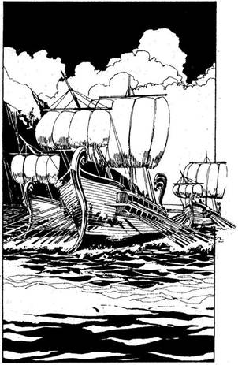
4.
HAJÓNAPLÓDBAN 1-gyel növeled a tengeren töltött napok számát. Amikor eléred a Goth-csatorna legkeskenyebb pontját, a horizonton hadihajók tűnnek fel, amelyek hosszú csatasorban felétek tartanak. Mikor közelebb érsz hozzájuk, látod, hogy több száz shurrupaki felségjelű hadigálya közeledik. A Vulkánok-szigetétől csaknem a Keleti-partvidékig húzódik soruk. Visszafordulsz északnak, hogy elkerüld az összecsapást ezzel a hatalmas flottával, de egy másik flottával találod szemben magad, amely Marad irányából közeledik. Rájössz, hogy a két városállam valószínűleg harcban áll egymással, és te véletlenül csöppentél e hatalmas tengeri csata közepébe. A két hajóhad nagyjából egyforma, de talán a maradbeli a nagyobb, mert ott minden evezőlapátnál öt ember ül. Ha a maradbeliek vonalát áttörve biztonságos vizekre akarsz hajózni - lapozz a 43-ra. Ha a shurrupaki hajók vonalán törsz át - lapozz a 127-re.
5.
Amikor belépsz az ajtón, drótakadályba botlasz. Nagyot csattan valami a fejed fölött, sziklarecsegés hangja üti meg a füledet, majd ijesztő moraj rázza meg a környező sziklákat. A folyosó hirtelen beomlik, több tonna kő temet maga alá. Kalandod itt véget ér.
6.
Miközben az ajtóval kínlódsz, sikerül félig bepréselned magad rajta. De szerencsétlenségedre a sziklatömb épp ekkor omlik le, és rázuhan kilógó fél oldaladra az ajtó másik oldalán. Kalandod itt véget ér.
7.
Dobj három kockával. Ha a kapott összeg kevesebb, mint LEGÉNYSÉGED EREJE - lapozz a 387-re. Ha a kapott összeg ugyanannyi vagy több, mint LEGÉNYSÉGED EREJE - lapozz a 356-ra.
8.
Amikor az ajtó felé iramodsz, a szörny hatalmasat csap farkával. A verem oldalához csapódsz. Kalandod itt véget ér.
9.
A fájdalomtól és a rémülettől hátrahőkölsz, amikor a méreg beleeszi magát a szemedbe és eljut az agyadig. Kalandod itt véget ér.
10.
Tovább hajózva elhaladsz a Keleti-partvidék Tűztengernek nevezett kopár, vörös homokdombjai mellett - ez a vidék a terméketlen föld színéről kapta a nevét. Dobj három kockával! Ha a kapott összeg kevesebb, mint LEGÉNYSÉGED EREJE, utazási napjaid számát növeld 5-tel a HAJÓNAPLÓDBAN. Ha a kapott összeg ugyanannyi vagy több, mint LEGÉNYSÉGED EREJE - növeld 6-tal utazási napjaid számát a HAJÓNAPLÓDBAN. Egy este, amikor a nap éppen lenyugvóban van, a Kísértet mellett foszforeszkáló hajóroncsot veszel észre a vízen. Vitorláidat leeresztve lehorgonyozol, és a hajó korlátján át fejest ugrasz a tengerbe, hogy közelebbről megszemléld a roncsot. Egy kereskedőhajót látsz, amely a sekély vízben fekszik. Törzsén két óriási lyuk tátong - egyik a tatnál, a másik az orrnál. Melyiken úszol be? Ha a hajó tatjánál lévő lyukon át - lapozz a 44-re, ha az orránál lévőn át - lapozz a 33-ra.
11.
Megfogod a csontváz kezét, és megpróbálod lehúzni a gyűrűket az ujjairól. De abban a pillanatban, amikor hozzáérsz az arany csecsebecsékhez, a csontváz megmozdul, és csontos ujjaival a
kezed után kap. Szorosan megragadja a kezedet. Minden igyekezeted hiábavaló, hogy megszabadulj tőle; természetellenesen hatalmas marka erősebb, mint a te emberi erőd vagy fegyvereid. Lassan belehalsz az éhségbe és a szomjúságba. Kalandod itt véget ér.

12.
Legénységednek sikerül a Kísértettel elszakadni a hadihajó csáklyáitól, és tönkretenni annak árbocait. A vitorlák a fedélzetre zuhannak, és nagy zűrzavart, riadalmat okoznak a tengerészek között. Lapozz a 90-re.
13.
Az egész napos kínlódás után végre alábbhagy a tenger hullámzása és a szél ereje. Az égbolt tisztulni kezd. Előtted a távolban a Trysta-sziget
partját látod, tehát a vihar sikeresen átsodort a veszélyes sekély szakaszon. A szerencse különös kegye folytán a Kísértet nem sérült meg. Ha kikötsz a szigeten - lapozz a 152-re, ha délkelet felé veszed az utadat, a Goth-csatorna felé - lapozz a 191-re, ha délnyugati irányba, Kish felé mész - lapozza 223-ra, ha pedig az Ölyv felé - lapozz a 27-re.
14.
„Ó, jaj! - kiált a Szellem. - Ez igazán szörnyű!” Dühös pillantást vet rád, és kezével kétségbeesetten suhint feléd. „Ó, ily rettenetes hírek hordozója, megátkozlak téged!” Vesztesz 2 SZERENCSE és 2 ÜGYESSÉG pontot. Lapozz a 210-re.
15.
A Déli-tengeren hajózva mit teszel?
Shurrupak felé veszed az utadat, hogy
a városban eladd a rabszolgáidat, vagy
hogy néhány új kalózt toborozz a
hajódra? Lapozz a 301-re.
A nagy Kish-deltán mész felfelé, és
felhajózol a Holtak Városába? Lapozz a 140-re.
Keresztülhajózol a Déli-tengeren
Nippur irányába? Lapozz a 340-re.
16.
Abban a pillanatban, amikor benyomod a gyűrűt, a mennyezet megnyílik, és hatalmas vízsugár ömlik a nyakadba, és a földhöz vág. A bejárati ajtó becsapódik, a kripta rohamosan megtelik vízzel, és elsüllyedsz. Kalandod itt véget ér.

17.
Megpróbálsz elrohanni a szélsebesen közelgő hógörgeteg elől, de a hó túl mély. A lavina eltalál, és végez veled. Kalandod itt véget ér.
18.
A szörny hosszú karjának egy gyors mozdulatával vadul visszavág, félrelöki a kezedet, amellyel ütni készülsz; majdnem eltöri. Vesztesz 1 ÉLETERŐ pontot!
Amikor hátraugranál, a Küklopsz megragadja a bal karodat, és a levegőbe emel. Mit teszel?
Egy tenyeres ütéssel rávágsz könyöke
belső oldalára? Lapozz a 187-re.
Belerúgsz a vállába? Lapozz a 251-re.
Visszakézből a könyökébe
vágsz? Lapozz a 145-re.

19.
A Kísértet felgyorsul, amikor a hozzád legközelebb álló két hajó között akarsz átsiklani. Mit teszel? Ha pontosan a kettő között próbálsz átmenni - lapozz a 296-ra; ha az utolsó pillanatban elfordulsz, hogy nekimenj az egyik hajó evezőinek és szétroncsold azokat - lapozz a 275-re.
20.
Dobj három kockával. Ha az eredmény kevesebb, mint LEGÉNYSÉGED EREJE - 5 nappal növeld utazásod idejét a HAJÓNAPLÓDBAN. Ha a kapott összeg ugyanannyi vagy nagyobb, mint LEGÉNYSÉGED EREJE, akkor 6 nappal növeld utazásod idejét a HAJÓNAPLÓDBAN. Végül megérkezel a Scythera-sivatag széléhez, ahol lehorgonyzol,
majd legénységed nagyobb részével partra szállsz, és a forró homokban elindulsz a sivatag belseje felé. Egy oázis köré települt forgalmas kis faluba érsz - mely kitűnő pihenőhely azok számára, akik a sivatagon akarnak átkelni. Ha megtámadod a falut - lapozz a 143-ra. Ha elrejtőzöl a közeli homokdombok mögött, ahol lesben állva egy erre tévedő karavánra vársz - lapozz a 79-re.
21.
Amikor megtámadod a Kökörcsint, az több tucat tapogatócsápjával körbefonja a testedet, és iszonyú sok mérget bocsát ki, mely a véredbe kerül. Elveszted az eszméletedet, miközben a teremtmény lassan behúz a szájába. Kalandod itt véget ér.
22.
A kishi tengerészeket legyőztétek, hadihajójuk lángokban áll. Átugrotok az ellenséges hajó fedélzetére, átkutatjátok, és a fedélzetmester kabinjában egy ládát találtok, benne 27 Arany Tallérral. A csatát túlélt tengerészek sorában 3 remek fickót találsz, akiket majd a Keleti-partvidék rabszolgapiacán fogsz értékesíteni. Sietve elhagyjátok a hadihajót, és Assur felé folytatjátok utatokat. Lapozz a 376-ra.
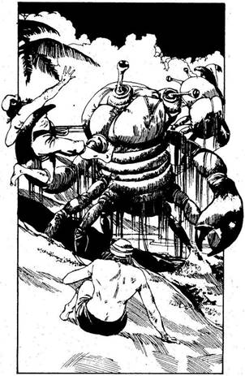
23.
Néhány száz métert a homokban tesztek meg, mígnem váratlanul beomlik a part a lábatok alatt, és egy nyálkás testű szörny bukkan elő, mely csápjával megragadja néhány kalózodat, és elindul velük a tenger felé. Vonj le 2 pontot LEGÉNYSÉGED EREJÉBŐL. Félelemtől megrémült embereid követelik, hogy vezesd vissza őket a Kísértet fedélzetére. Ha megparancsolod nekik, hogy folytassák az utat a part mentén - lapozz a 86-ra, ha azt javasolod, hogy inkább a szárazföld belseje felé menjetek tovább - lapozz a 42-re.

24.
Három napon át várod a faluban az arra vetődő szerencsétlen kereskedőket, hogy búvóhelyedről lecsaphass rájuk, de egy lélek sem jön. Végül türelmed elfogy, és úgy döntesz, nem fecséreled itt tovább az időt, hanem visszamész a Kísértetre, hogy máshol próbálj szerencsét. Miután visszatértél a hajódra, 3 nappal növeld utazásod idejét a HAJÓNAPLÓDBAN, és lapozz a 35-re.
25.
Elővigyázatosságod és óvatosságod nem elég. Baljós súrlódást hallasz, és a Kísértet zátonyra fut. A hajó bizonytalanul megáll. Kidobjátok a fedélzetről az összes felesleges holmit, és hosszú rudak
segítségével megpróbáljátok visszalökni a hajót a vízre. Nem jártok sikerrel. A víz szintje egyre csökken, és a Kísértet egyre mélyebben süpped bele a homokzátonyba. Reggelre kishi katonák veszik körül a hajótokat, akik a közeli erődítményből vették észre az árbocotokat. Elfognak benneteket, és kalandotok itt véget ér.

26.
Asztalhoz ültök, és élvezettel estek neki a levesnek meg a kenyérnek. Nemsokára valamennyien elálmosodtok. Megdörzsölöd a szemedet, és amint végignézel a hosszú asztalnál ülőkön, szokatlan dolgot veszel észre: kalózaid háziállattá változtak juhokká, kecskékké, disznókká és így tovább. A dolgok ilyetén fordulatán megriadva rikácsolni kezdesz. Rikácsolni? Amikor végignézel magadon, látod, hogy papagájjá változtál. „Gyere, kis gyönyörűségem - mondja a nő, miközben a kezére ültet -‚ gyere, várnak a többiek!” Elvesztetted emberi mivoltodat, kalandod itt véget ért.
27.
Növeld 2 nappal utazási idődet a HAJÓNAPLÓDBAN! Az Ölyv nem más, mint az óceánból kiálló egyetlen hatalmas méretű szikla. A csúcsa a fellegekbe ér, míg az alját sűrű erdő borítja. Nevét egy hatalmas madárfajtáról kapta, amely néha itt költ a magasabb csúcsokon. Tedd próbára a SZERENCSÉDET! Ha SZERENCSÉD van - lapozz a 67-re. Ha nincs SZERENCSÉD - lapozz a 92-re.
28.
Minden olcsó embert megvettek már a Maraddal vívott háborúban, melynek győztese határtalan kincsek birtokába jut. Neked viszont jó, de drága emberek közül kell válogatnod. Minden LEGÉNYSÉGI ERŐ pontért, amit meg akarsz szerezni, 20 Arany Tallért kell fizetned. Miután a toborzással végeztél - lapozz a 180-ra.

29.
Előreugrasz, és behúzol egyet a Küklopsz bordái közé. Ennek következtében az kettőt szaltózik - vonj le 2 pontot az ÉLETEREJÉBŐL. Előrehajol, és egy horogütéssel úgy fejbe vág, hogy elterülsz a földön - vesztesz 2 ÉLETERŐ pontot. A Küklopsz tér magához előbb, karjaiba vesz, és felemel a magasba. Mit teszel?
Belerúgsz a vállába? Lapozz a 251-re.
Belerúgsz a hónaljába? Lapozz a 305-re.
Visszakézből ráhúzol a
könyökére? Lapozz a 145-re.
30.
Újra hallod a kiáltást; hátborzongatóan zúg végig a hegy lejtőin. Fölfelé mész a szakadékban a hang irányába. Ha magaddal viszed a legénységedet - lapozz a 160-ra, ha egyedül mész - lapozz a 138-ra.

31.
„Ó, jaj! - kiált a Szellem. - Ez igazán szörnyű!” Dühös pillantást vet rád, és kezével kétségbeesetten feléd suhint. „Ó, ily rettenetes hírek hordozója, megátkozlak téged!” Vesztesz 2 SZERENCSE és 1 ÜGYESSÉG pontot! Lapozz a 210-re.
32.
A Kísértettel behajóztok Nippur egyetlen nagy kikötőjébe. Legényeid örülnek, hogy Vége az útnak. Dobi három kockával. Ha a kapott összeg kevesebb, mint LEGÉNYSÉGED EREJE, növeld 4-gyel utazási napjaid számát a HAJÓNAPLÓDBAN. Ha a kapott összeg ugyanannyi vagy több, mint LEGÉNYSÉGED EREJE, növeld 5-tel utazási napjaid számát a HAJÓNAPLÓDBAN. Abdulnak, a Mészárosnak Haveldar nevű hajója már lehorgonyzott az öbölben. Néhányan, akik a hajó fedélzetén maradtak, közlik veletek, hogy Abdul már fölment Nippur egyetlen magas hegycsúcsára, a találkahelyre. Ha a HAJÓNAPLÓDBAN 50-nél több utazási napod van - lapozz a 342-re, ha a HAJÓNAPLÓDBAN 50 vagy ennél kevesebb utazási napod van - lapozz a 213-ra.
33.
A lyuk elég nagy, oldalát tengeri növények és kagylók borítják. A hajó belsejében úszva hozzáérsz valamihez, amiről azt hitted, hogy egy halom rongy, mely hozzátapadt a hajó törzséhez. Az azonban egy sokszínű virághoz hasonlóan kinyílik, és éles fogakat, valamint szívókarokat pillantasz meg. A lény elzárja előled a kijáratot. Pillanatokon belül vissza kell térned a felszínre levegőért. Mit teszel?
Átverekszed magad a szívókarú
lény mellett? Lapozz a 21-re.
Keresel egy másik kijáratot a hajó
belsejében? Lapozz az 57-re.

34.
Sebesen közeledsz a part felé, de a hadihajók a nyomodban vannak, és elzárják az utadat. Nincs más választásod, mint átvágni a hajók között. Lapozz a 19-re.
35.
Visszamentek a Kísértetre, felszeditek a horgonyt, aztán nekivágtok a nyílt tengernek. Ha legénységed soraiban áldozatok vannak, akkor a semleges
Assur városa felé veheted az utadat, hogy ott verbuválj néhány embert - lapozz a 171-re. De ha akarod, elmehetsz a szomszédos Calah városába, ahol szerencsét próbálhatsz a játékbarlangokban - lapozz a 211-re, vagy akár elhajózhatsz észak felé, hogy lerohand az Enraki-szigetet - lapozz a 76-ra.

36.
Amikor felérsz a hegy csúcsára, ott találod Abdult, a Mészáros, aki néhány embere társaságában már vár rád. „Ah! - szól, mikor megérkezel. - Tehát sikerült! Most lássuk, melyikünk a nagyobb gazember!” Odavonszol egy hatalmas ládát. „Kifosztottam Kisht - mondja dicsekedve. - Még egy maradbeli hadihajót is elfogtam. Bizonyítékul itt a kincs!” Felnyitja a láda tetejét, ami arra késztet, hogy te is ugyanezt cselekedd a tiéddel. Hogy eldöntsd, vajon kettőtök közül neked van-e több kincsed, meglévő Aranyaid számát kerekítsd lefelé, a legközelebbi százasra (pl. ha 387 Arany Tallérod van, kerekítsd le ezt a számot 300-ra). Ha ezt elvégezted, a lekerekített számot oszd el 2-vel. Ha a kapott szám nagyobb 400-nál, lapozz a 400-ra.
37.
A vadember felordít, s amikor felé suhintasz, elkapja a karodat, és úgy fejbe vág, hogy elterülsz a földön. Folyamatosan vesztesz 2 ÉLETERŐ pontot. (Csökkentsd Kezdeti ÉLETERŐ pontjaid számát 2-vel.) Néhány óra múlva kissé magadhoz térsz, és észreveszed, hogy a pénz, amit megtettél, eltűnt - vond le az összeget Zsákmányodból. Ha még nem próbáltad volna, részt vehetsz a Batárversenyen - lapozz a 270-re, vagy a kockaversenyen - lapozz a 236-ra; vagy hagyd el Calahot - lapozz a 262-re.
38.
A sziget olyan, mint egy hatalmas sima gránittömb, se partja, se növényzete. Leeresztesz egy kis csónakot, és legénységed néhány tagjával elindulsz felé. Tedd próbára a SZERENCSÉDET! Ha SZERENCSÉD van - lapozz a 133-ra. Ha nincs SZERENCSÉD - lapozz a 120-ra.

39.
Egyfolytában azt hajtogatja, hogy enned kell, de amikor engedsz az erőszaknak és a szádhoz emeled a levessel teli tálat, legényeid valamennyien eszméletüket vesztve borulnak az asztalra. Még
ennél is aggasztóbb az a változás, amit észreveszel rajtuk - juh, kecske és disznó alakot öltöttek. Eldobod a leveses tálat, odaugrasz a hozzád legközelebb ülő társadhoz, és ébresztgetni kezded. „Röff” - csak ennyit tud kinyögni. A boszorkány bemenekült a házba, biztosan azért, mert még mindig emberi formád van. Elindulsz, hogy megkeresd, és eljutsz egy kis előszobába, ahonnan egy nagy díszterem nyílik. Odabent tűz lobog a tűzhelyen. A boszorkánynak nyoma sincs. Ha bemész a terembe - lapozz a 216-ra, ha az oldalajtón mész be - lapozz a 22 7-re.

40.
A Gyíkembereket visszaszorítjátok a környező erdőkbe. Legénységednek sikerül közülük négyet elfognia, hogy majd rabszolgaként eladjátok őket; ezeket az apró fickókat jó pénzért lehet értékesíteni. Az őserdő csak úgy zeng a bennszülöttek öblös hangú üvöltésétől és a Tok-tok bot ütéseitől. Minden bizonnyal egy nagyobb sereg gyülekezik a közeli rejtekhelyeken újabb támadásra készülve. Visszavonultok a Kíséretre, felszeditek a horgonyt és továbbhajóztok. Lapozz a 15-re.
41.
Embereid kötelekkel és késekkel mennek neki a marháknak. Egy perc sem telik el, amikor állig felfegyverzett lovas hadsereg tűnik fel a közeli lejtőn, és egyenesen felétek tart. A lovasok megállnak, és egy hírnököt menesztenek hozzátok, aki így szól: „Tudjátok meg, ti oktalan kalózok, hogy megsértettétek Őfelségét a Négy Szél Királyát. Megparancsolom, hogy azonnal hagyjátok el a szigetet, vagy rettenetes következményekkel kell számolnotok.” Lapozz a 176-ra.
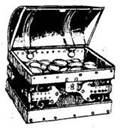
42.
Jó mélyen behatoltok az őserdőbe, és szembetaláljátok magatokat a legnagyobb és legrondább szörnnyel, akivel eddig találkoztatok. Száz és száz fatörzsláb tart egy hatalmas testet, mely kétszer akkora, mint a Kísértet. A feje viszont - mely jószerével csak egy nagy száj - fogak helyett tele van késekkel. Mit teszel? Ha elfutsz - lapozz az 54-re, ha megküzdesz vele - lapozz a 70-re.
43.
Teljes lendülettel száguld a Kísértet, mindenki készenlétben felfegyverezve áll a fedélzeten - sebesen vágsz át a maradbeli hajórajon a vízbe merülő hajólapátok között manőverezve. Amikor két hajó között próbálsz átsurranni, az egyik gálya megcsáklyázza a Kísértetet, a kiálló csáklyák miatt olyan, akár egy szigonyokkal teli bálna. Legénységednek meg kell küzdenie a gályával.
Maradbeli gálya ÜTÉS 8 ERŐ 12
Ha a legénységed visszaveri a támadást, lapozz a 208-ra.

44.
A lyukon át a kapitány szobájába jutsz, ahol hat Vízitündérrel találod szembe magad. Ezek a kíváncsi kis lények ide-oda cikáznak amint meglátnak, majd a szoba túlsó végébe sereglenek, és éles hangon sipítozva mondanak valamit egymásnak. Végül egyikük odaúszik hozzád, és így szól: „Mágikus lények vagyunk, ó, te bátor kalandor a fenti világból. Ha segítesz nekünk visszaszerezni értékes kincsünket, akkor szólunk az érdekedben rokonainknak, a Szél Tündéreknek, akik elintézik, hogy a te hajód legyen a leggyorsabb a tengeren.” Ha segítesz nekik - lapozz a 75-re. Ha nem - lapozz a 383-ra.
45.
A Kísértettel lefelé hajózol a nyugati partvidék mentén. Dobj három kockával. Ha a kapott összeg kevesebb, mint LEGÉNYSÉGED EREJE, növeld 5 nappal utazási idődet a HAJÓNAPLÓBAN. Ha a kapott összeg ugyanannyi vagy több, mint LEGÉNYSÉGED EREJE, növeld 6 nappal utazási idődet a HAJÓNAPLÓBAN. A hatalmas, erdőborította Martu-Amurru-hegy közelében kötsz ki, amely a Kirkuk nevű halászfalu fölött emelkedik. Mit teszel?
Gyilkos legényeiddel partra szállsz, és
rajtaütésszerű támadással arra kényszeríted
a város lakóit, hogy adják át nektek
aranyukat? Lapozz a 102-re.
Továbbhajózol a part mentén az ellenséges
Kish városába? Lapozz a 223-ra.
Behajózol a Beltengerre a Trysta-zátonyok
felé, hogy az arra járó hajók között
portyázz? Lapozz a 66-ra.

46.
Karodat behajlítva könyököddel belevágsz a szörny térdhajlatába. Az előretántorodik, elveszti az egyensúlyát, és elesik egy kiálló éles kőben - vonj le tőle 2 ÉLETERŐ pontot. Mit teszel?
Belerúgsz a bordáiba? Lapozz a 266-ra.
Belerúgsz az ágyékába? Lapozz a 224-re.
Belebokszolsz az állába? Lapozz a 196-ra.

47.
Amikor Kish egyik külvárosába értek, az utcákon egyetlen hivatásos katonát sem láttok. Fedezékben maradva felsorakoztatod legényeidet, és jelt adsz a támadásra. Hatalmas ordítással vetik rá magukat a felkészületlen lakosságra. A városi polgárőrség csak itt-ott bocsátkozik ellentámadásba.
Városi polgárőrség ÜTÉS 6 ERŐ 10
Ha ti győztök, lapozz a 80-ra.
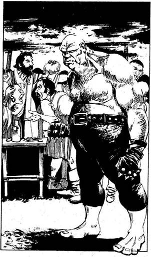
48.
A kiütős játék egy terebélyes sátor alatt zajlik, amely ordítozó, kiabáló emberekkel van teje. A játék lényege az, hogy a vállalkozó egy olyan párviadalban küzd meg a házi bajnokkal, amelyet tüskés bokszkesztyűben kell megvívni. Az, aki elsőnek üti ki a másikat, ha előzőleg adott, a letett pénz dupláját nyeri. Te döntsd el, hogy kiállsz-e Scythera irdatlan nagy Ogréjával vagy sem. 50 Aranyig fogadhatsz. Az ezt követő összecsapáson az nyer, aki elsőnek üti ki a másikat.
Ogre bajnok ÜGYESSÉG 11
Ha te nyersz - lapozz a 370-re. Ha vesztesz - lapozz a 323-ra.
49.
Lehorgonyzol a gőzölgő vulkanikus lagúnában, és legényeiddel a partra evezel. Buja növényzettel, egzotikus állatokkal és ezer meg ezer különféle rovarral teli dzsungel szélén álltok. Ha a sziget közepén lévő hegy magasabb lejtői felé indultok el - lapozz a 151-re; ha a sík vidékeken maradtok és a dzsungelt kutatjátok át - lapozz a 184-re.

50.
„Na gyere - mondja Abdul, amikor megnézi a sajátjánál sokkal kisebb aranykupacodat. - Nem is volt ez igazi verseny, és még te nevezed magad kalóznak?” Iszonyatosan kikaptál. Kétség nem fér hozzá: Abdul a legnagyobb kalóz. A fogadást elvesztetted!

51.
A Kísértet bénán áll a vízben, mialatt legénységed eredménytelenül kísérletezik a vitorlák helyreállításával. Az egyik hatalmas hadihajó nekiront a Kísértetnek‚ és beszakítja a farát. Legényeiddel a cápákkal teli vízbe zuhansz. Kalandod itt véget ér.
52.
Amikor eléritek a hágót, lenézel a völgybe, és néhány kilométerre egy erődítmény tornyát pillantod meg. Hirtelen gyötrelmes és félelemmel teli ordítás hangja üti meg a füledet a közeli meredek, hóval teli szakadékból. Gyorsan megszámolod embereidet, de senki sem hiányzik közülük. Ismét ordítás hallatszik - ezúttal még gyötrelmesebb és velőtrázóbb. Ha leereszkedsz a szakadékba, hogy megnézd, mi okozza ezt a zajt - lapozz a 30-ra, ha nem törődsz vele és inkább továbbmész a kolostor felé - lapozz a 111-re.

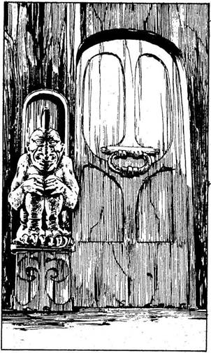
53.
Hatalmas föld alatti barlangban vagy, melyet a sziklafalak foszforeszkáló fénye világít meg. A barlang egyik oldalában egy kis, fából készült kifutót pillantasz meg. Odaúszol, kimászol erre a stégre, majd végigmész rajta és egy rövid folyosón át egy vastag kőajtóhoz érkezel. Az ajtó mellett egy ember nagyságú vízköpő (Gargoyle) szobrát pillantod meg, amely pontosan a folyosóval szemben állva téged néz. Ha megpróbálod kinyitni az ajtót - lapozz a 69-re, ha a szobrot nézed meg közelebbről - lapozz a 88-ra.

54.
Űzött vadként rohantok át az őserdőn, leszaladtok a partra, beugrotok a csónakba, és visszaeveztek a Kísértethez. Ha még nem tettétek volna meg, elhajózhattok a „rendezettnek” látszó szigetre lapozz a 386-ra, vagy a pálmafákkal benőtt szigetre - lapozz a 354-re.
55.
Dobj három kockával. Ha a kapott összeg kevesebb, mint LEGÉNYSÉGED EREJE, HAJÓNAPLÓDBAN növeld 5 nappal utazásod idejét, és lapozz a 68-ra. Ha a kapott összeg ugyanannyi vagy nagyobb, mint LEGÉNYSÉGED EREJE, akkor 6 nappal növeled utazásod idejét a HAJÓNAPLÓBAN. Lapozz a 181-re.
56.
Mogot és Ogmogot ámulatba ejti erőd, és felajánlják neked, hogy csatlakoznak a legénységedhez. - Nyertél 3 LEGÉNYSÉG ERŐ pontot. Ha ezáltal LEGÉNYSÉG ERŐ pontjaid száma meghaladná a Kezdeti értéket, akkor mostantól ez az új pontszám jelenti a Kezdeti értéket. Az Óriásoktól megtudjátok, hogy ez a vidék a senki földje, melyet Ork-hordák tartanak megszállva, és tehetős, gazdag utazó nem fordult meg erre. Visszamész a Kísértetre. Lapozz a 272-re.
57.
Átúszol egy nyíláson az üres rakodótérbe. Kiversz egy korhadt oldaldeszkát, és kijutsz a nyílt tengerre. A füledben lüktet a vér, amikor végre felbuksz a víz alól és levegőt veszel. Visszanyered a lelki nyugalmadat, és nagy levegőt véve újra lebuksz, majd visszaúszol a hajó tatján lévő lyukhoz. Lapozz a 44-re.

58.
Amikor embereid meglengetik faltörő kosaikat, a bástyákat megszállva tartó védők a kapu mindkét oldaláról hatalmas üstökből forró olajat öntenek le rájuk. Vonj le 4 pontot LEGÉNYSÉGED EREJÉBŐL. Embereid között ez a fordulat nagy zűrzavart
kelt, és hanyatt-homlok menekülnek vissza a Kísértet fedélzetére, miközben a feldühödött harcos papok üldözőbe veszik őket. Végül szerencsésen eléritek a hajót, és a part mentén lefelé indultok. Lapozz a 123-ra.
59.
Az üzlet nagyon rosszul megy. A nap végére oly kevés rabszolgát adtál el, hogy a maradékot fejenként 5 Aranyért kell odaadnod egy bizonytalan külsejű rabszolga-kereskedőnek. Szorozd meg öttel eladott rabszolgáid számát, és a kapott összeget jegyezd be a Zsákmány rovatba: ennyi Arany Tallért szereztél. Lapozz a 279-re.
60.
Amikor odaugrasz a Küklopszhoz, az védekezésként a teste elé kapja a karját, így rúgásod azt éri. Elkapja a levegőben lévő lábadat, és iszonyatosan megszorítja - vonj le mind önmagadtól, mind tőle 2-2 ÉLETERŐ pontot. Letesz róla, hogy eltörje a lábadat. Ehelyett inkább a bokádnál fogva ragad meg, és le-föl lóbál a levegőben. Mit teszel?
Belerúgsz a könyökébe? Lapozz a 235-re.
Karateütéssel az ágyékába
csapsz? Lapozz a 177-re.
Beleöklözöl a hasába? Lapozz a 139-re.
61.
Amint a part felé tartasz, szembetalálkozol néhány legényeddel, akik a többiekkel együtt a szigetet járják abban a reményben, hátha még életben találnak. Visszatértek a Kísértetre, és folytatjátok az utat. Lapozz a 15-re.
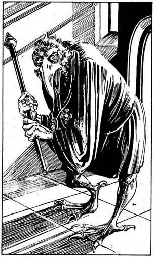
62.
A legtöbb olcsó embert már felvásárolták a különféle shurrupaki előkelőségek, hogy a Maraddal vívott háborúban gályáikon vegyék hasznukat. A szerencse azonban veled van, amikor rábukkansz egy kalózhajó teljes legénységére, akik szerencsejátékokon sok pénzt vesztettek, és ezért elvették a hajójukat. Többségük szívesen áll be közétek. Minden plusz LEGÉNYSÉGI ERŐ pontért 10 Arany Tallért kell adnod. Amikor a toborzással végzel - lapozz a 180-ra.

63.
A folyosóról egy kis előszobába jutsz, ahol egy félelmetes külsejű pap tartózkodik. A teremtmény emberhez hasonlít, bár madárfeje és madárlába van. Sziszegni kezd, amikor meglát, megcsörgeti szent talizmánjait, és ébenfa botját meglengetve rád támad. Támadását ki kell védened. Ahányszor megüt a botjával a csata során, dobj egy kockával. Ha az eredmény 1 vagy 2, annyit vonj le ÉLETERŐDBŐL, amennyit általában ilyenkor szokás; ha az eredmény 3 vagy 4, vonj le 1 ÜGYESSÉG pontot magadtól; ha az eredmény 5 vagy 6, vonj le magadtól 1 SZERENCSE pontot.
Awkmute ÜGYESSÉG 8 ÉLETERŐ 8
Ha legyőzöd, lapozz a 125-re.
64.
A Kísértet alja néhányszor a tenger fenekét súrolja, de a hajód nem feneklik meg. Körülbelül egyórányi hajózás után a folyóhoz érkezel, mely Kish hatalmas védőfalai között hömpölyög. Ezek a védőfalak, amelyeket egymástól egyenlő távolságban magas bástyák szakítanak meg, ötszáz kilométernél is hosszabbak a folyó mindkét oldalán, és körülölelik Kish államot. Amikor a folyó két partján emelkedő bástyák között próbálsz meg áthajózni, hajód orra beleakad egy hatalmas vasláncba, melyet a folyón keresztbe feszítettek ki. Megállásra kényszerültök. Ha néhány legényedet a partra küldöd, hogy az egyik bástyához erősített láncot kioldják - lapozz a 268-ra, ha inkább visszahajózol a tengerre - lapozz a 207-re.

65.
Az Elverinek szétszabdalt teste lesüllyed a medence fenekére. A víz elcsendesedik, és ekkor látod, hogy a víz szintje alig fél méterre van a mennyezettől. Tested csupa vér, amikor kimászol a teremből. Lapozz a 225-re.
66.
A Kísértettel a Trysta-zátonyok felé tartasz. Dobj három kockával. Ha a kapott összeg kevesebb, mint LEGÉNYSÉGED EREJE, növeld utazási napjaid számát 4-gyel a HAJÓNAPLÓBAN. Ha a kapott összeg ugyanannyi vagy több, mint LEGÉNYSÉGED EREJE, növeld utazási napjaid számát 5-tel a HAJÓNAPLÓBAN. Amint megközelíted a Trysta-sziget álnok szirtjeit, észak felől dühödt szélroham kerekedik, mely komoly viharba csaphat át. Ha a viharral elhajózol déli irányba - lapozz a 103-ra, ha észak felé veszed az utadat, hogy ott várd ki a rossz időt - lapozz a 142-re.
67.
Hajódra sötét, jól körvonalazható árny vetül, miközben elhajózol a sziget mellett. Felnézel, és egy irdatlan nagy madarat pillantasz meg, amely olyan, mint egy ölyv, csak több százszor nagyobb. Egy ideig a Kísértet felett köröz, majd lecsap rátok. Legényeid fegyvert ragadnak, hogy megvédjék magukat.
Óriás ölyv ÜTÉS 10 ERŐ 4
Ha a legényeid győznek, lapozz a 117-re.

68.
Lagash felé hajózol a Keleti-partvidék mentén, és árgus szemekkel figyeled, nem kerül-e az utadba a városba tartó kereskedőhajó. A szerencse azonban nem kedvez neked. A Kísértettel szemben két háromszög alakú piros vitorla tűnik fel a horizonton, és egyenesen feléd tart. Ezek lagashi hadihajók: fedélzetükön csak úgy nyüzsögnek a matrózok, és harci lobogók lengenek a szélben. Oldalra döntöd a Kísértetet, és megpróbálsz elhajózni a támadók elől. Dobj három kockával. Ha a kapott összeg kevesebb, mint LEGÉNYSÉGED EREJE - lapozz a 87-re. Ha a kapott összeg ugyanannyi vagy több, mint LEGÉNYSÉGED EREJE - lapozz a 175-re.

69.
Az ajtó hatalmas, vastag, de teljes erőddel nekiveselkedve sikerül betörnöd. Abban a pillanatban, amikor az ajtó kinyílik, a fejed fölött recsegő hangot hallasz. Egy többtonnás sziklatömb válik le az ajtó fölött a mennyezetről, és egyenesen rád zuhan. Tedd próbára a SZERENCSÉDET! Ha SZERENCSÉD van, lapozz a 99-re. Ha nincs SZERENCSÉD, lapozz a 6-ra.
70.
A Szörny felkapja a fejét és kitátja a száját - ekkora mosolyt még soha senki sem látott. Mohó éhség lángol a szemében. Ha nálad van Axillon íja - lapozz a 163-ra, ha nincs - lapozz a 110-re.

71.
Miután átadtad az aranyat, el-Shazar eléd lök egy engedélyt, amely szabad bejárást biztosít Shurrupakba. Matrózai kihúzzák csáklyáikat, és hagyják szabadon elmenni a Kísértetet. Ha a csata színterét elhagyva Shurrupak felé veszed az utadat - lapozz a 301-re, ha a Beltenger közepén áthajózva Nippur felé indulsz el, amilyen gyorsan csak tudsz - lapozz a 340-re.
72.
Az üzlet elég élénk, ha nem is túl jó. Egész napi munkával sikerül eladnod az összes foglyodat. Számolni kezdesz, és kiderül, hogy fejenként átlagosan 10 Arany Tallért kaptál értük. Szorozd meg foglyaidnak a számát tízzel, és a kapott összeget add hozzá a Zsákmányodhoz. Lapozz a 279-re.
73.
A Batárversenynek a mai napra vége. Ha még nem tetted volna, megpróbálkozhatsz a kiütős versennyel - lapozz a 48-ra, vagy a kockajátékkal - lapozz a 236-ra. Ha egyikhez sincs kedved, elhagyhatod Calah városát - lapozz a 262-re.
74.
Oldalra lépsz, és a Küklopsz hatalmas karja felé suhintasz, de nem éred el, mert a szörny elkapja és majdnem teljesen kicsavarja a kezedet. Vesztesz 2 ÉLETERŐ pontot. Elereszti a kezedet, és megragad a bokádnál fogva. Fejjel lefelé lógsz a kezében. Mit teszel?
Belerúgsz a könyökébe? Lapozz a 235-re.
Térddel mellbe rúgod? Lapozz a 122-re.
Beleöklözöl a bordáiba? Lapozz a 372-re.

75.
„Egy ragadozó Krell amelynek a barlangja e hajó alatt van, ellopta a Só-koponyát - mondja a Tündér. - Ez a mi legdrágább kincsünk, Tenger Apánktól kaptuk, s varázserejével különválasztja a tengerek vizét az édesvizektől. Vissza kell kapnunk e kincset!” A Tündérek varázsitalt adnak neked. Ha megiszod, addig tartózkodhatsz a víz alatt levegővétel nélkül, ameddig csak akarsz. Ezután odavezetnek a Krell barlangjához, mely a roncs alatt van.
A barlangba vezető folyosó függőlegesen megy le a tengerfenék mélyébe. Amint befelé úszol, széles, mély lyukakat veszel észre az oldalfalakon. Mit teszel? Ha továbbúszol a barlang felé - lapozz a 105-re; ha belenézel az egyik lyukba - lapozz a 89-re.
76.
A Kísértettel kihajózol a Beltenger vizeire. Dobj hám kockával. Ha az eredmény kevesebb, mint LEGÉNYSÉGED EREJE, növeld 4 nappal utazásod idejét a HAJÓNAPLÓBAN. Ha a kapott összeg ugyanannyi vagy nagyobb, mint LEGÉNYSÉGED EREJE, akkor 5 nappal növeld utazásod idejét a HAJÓNAPLÓBAN. Hamarosan megérkezel a hegyekkel borított Enraki-sziget legészakibb csücskéhez, Asswr-sel-Dablo harcos papjainak szülőföldjére. Ezek az ijesztő szent emberek, akiket a harc istenei fegyvereztek fel és akiket a kő istenei védelmeznek, a sziget középső, hófödte, meredek hegységének alsó lejtőin lévő erődítményben laknak. Ezek az emberek nagyon gazdagok. Háromféleképpen foszthatod meg őket a vagyonuktól:
Közvetlen támadást mérsz az
erődítményre Lapozz a 231-re.
Valamilyen csellel bejutsz az erődítménybe,
ahol mindent elcsensz, amit
csak tudsz Lapozz a 315-re.
A hegyen átmászva az erődítmény háta
mögé kerülsz, és onnan támadod meg azt a
pontot, amelyiket szerinted a
legkevésbé védik Lapozz a 188-ra.

77.
Amint átvonultok a vidéken, a lejtő peremén állig felfegyverzett lovas katonák tűnnek fel előttetek. Előreküldenek egy hírnököt, aki így szól: „Kalandorok, tudnotok kell, hogy a Négy Szél Királyának földjén jártok, és Őfelsége tisztelettel meghív benneteket az asztalához.” Ha a hírnököt követve odamentek a lovas katonákhoz, majd velük együtt feltehetően a Királyhoz - lapozz a 215-re; ha inkább visszamentek a hajóra - lapozz a 176-ra.

78.
Alig teszel meg néhány lépést az alagútban, amikor vagy fél tucat hullába botlasz. A testükön lévő sérülésekből arra következtetsz, hogy valamilyen nagy madár, valószínűleg az Óriás Ölyv sebezte halálra őket. Ha zsákmány reményében átkutatod a tetemeket - lapozz a 229-re; ha inkább továbbmész az alagútban - lapozz a 240-re.
79.
Már három napja rostokolsz legénységeddel a forró, napsütötte Scythera-sivatagban arra várva,
hogy végre felbukkanjon egy arra haladó felmálházott karaván, hiszen ez a világnak ebben a szegletében elég megszokott dolog. Növeld utazási napjaid számát 3-mal a HAJÓNAPLÓDBAN. Élelmed és italod fogytán van. Ha vársz még néhány napot itt a homokdűnék között - lapozz a 194-re, ha feladod, és inkább visszamész a Kísértetre - lapozz a 35-re.

80.
Miután legyőztétek a polgárőrséget és a városlakók többsége elmenekült a környező falvakba, egyenesen a helyi bíróságra mentek, hogy elkobozzátok a város vagyonát. Bátran átmasíroztok az embereid által feldúlt házak között, amikor egy pincéhez értek, melynek ajtaját az imént törték fel a legényeid. Benyitsz a hatalmas vasajtón, és ebben a pillanatban egy veszedelmes fekete Szemgolyó ugrik elő, és megtámad. Egyedül kell megvívnod ezzel a rettenetes teremtménnyel.
Szemgolyó ÜGYESSÉG 10 ÉLETERŐ 10
Ha legyőzöd - lapozz a 97-re.
81.
„A poklok legmélyére jussak, ha megengedem neked, el-Fazouk, hogy elvedd a hajómat!” - ordítod, miközben görbe kardoddal a feje felé suhintasz. Ő félreugrik, matrózai a védelmére sietnek. Ellenfeleiddel egyenként kell megküzdened.
Első kalóz ÜGYESSÉG 8 ÉLETERŐ 4
Második kalóz ÜGYESSÉG 8 ÉLETERŐ 6
Harmadik kalóz ÜGYESSÉG 7 ÉLETERŐ 6
Negyedik kalóz ÜGYESSÉG 9 ÉLETERŐ 6
Ha legyőzöd őket, lapozz a 397-re.
82.
Miközben a Küklopsz megpróbál felállni, odaugrasz hozzá, hogy fejbe vágd. De szerencsétlenségedre észreveszi, amint közeledsz, és beleharap a karodba - vesztesz 1 ÉLETERŐ pontot. A szörny ismét talpon van, és előregörnyedve a karjába akar kapni. Mit teszel?
Repülőrúgással a rekeszizmába
rúgsz? Lapozz a 60-ra.
Repülőrúgással a lábába
rúgsz? Lapozz a 319-re.
Repülőrúgással fejbe rúgod? Lapozz a 290-re.

83.
Iszonyú erőfeszítések árán legénységednek sikerül visszahelyeznie a fővitorlát a helyére, így a Kísértet elég sebesen haladhat ahhoz, hogy elmeneküljön a hadihajóktól. Ha a nyílt tengerre kijutva Shurrupak felé hajózol, hogy ott add el a rabszolgáidat és új kalózokat toborozz a hajódra - lapozz a 301-re; ha a Déli-tengeren vágsz át, és amilyen gyorsan csak lehet, Nippur felé tartasz - lapozz a 340-re.

84.
Miután legyőzted Nestafát, átkutatod szakadt, rongyos ruháját, de nem találsz semmit. Szemmel láthatóan rossz idők jártak rá. Attól félsz, hogy esetleg összeakadsz még néhány régi ellenségeddel, ezért elhagyod a kikötő területét. Ha a piacra mész embereket keresni - lapozz a 253-ra; ha a város nyomornegyedébe mész - lapozz a 293-ra.

85.
A lépcső nyirkos sötétségbe vezet. A mohos falakról, melyek mindkét oldalon igen közel vannak hozzád, víz csorog. A lábad között is víz folyik a lépcsőkön, ezért nehezen haladsz. Hirtelen egy három méter hosszú Pióca kúszik elő a fejed fölött lévő vackából, és belemar válladba. Őrjöngve rávágsz. Minden egyes Forduló után, ha a Pióca még mindig életben van, 2 ponttal csökken ÉLETERŐ pontjaid száma.
Óriás Pióca ÜGYESSÉG 8 ÉLETERŐ 8
Ha legyőzöd, lapozz a 162-re.

86.
„Mozdulj, te szemét - mondod, miközben görbe kardodat kihúzod a hüvelyéből -‚ vagy nemcsak a szörnyek miatt kell aggódnod!” Tedd próbára a SZERENCSÉDET! Ha SZERENCSÉD van - lapozz a 230-ra, ha nincs SZERENCSÉD - lapozz a 182-re.

87.
Némi ravaszsággal és Ügyes navigálással sikerül megszabadulnod az egyik hadihajótól, de a másik csak nem tágít mellőled, és hirtelen csáklya- és nyílvesszőzáport zúdít hajódra. Meg kell küzdened vele.
Hadihajó ÜTÉS 10 ERŐ 8
Ha el akarsz menekülni, megteheted, de ne felejtsd el levonni magadtól az érte járó büntetést - lapozz a 12-re. Ha ügy döntesz, hogy harcba szállsz vele és sikeresen legyőzöd a hadihajót - lapozz a 135-re.

88.
A Vízköpő egy kör alakú emelvényen ül vagy félméternyire a földtől. Mikor közelebbről szemügyre veszed, látod, hogy az emelvényt kis kerekein akár el is lehet mozdítani. A földön, a szobortól balra felfedezed e kerekek nyomát, de jobbra nem látsz ilyesmit. Megfogod a Vízköpő vállát, és megpróbálod eltolni. Merre tolod el? Ha balra - lapozz a 114-re, ha jobbra - lapozz a 165-re.
89.
Találomra belenyúlsz az egyik lyukba, és megzavarsz egy óriás angolnát, mely belemar a kezedbe. Vesztesz 1 ÜGYESSÉG pontot. Gyorsan visszakozol, folytatod az utat lefelé a barlangba. Lapozz a 105-re.

90.
A Kísértet teljes sebességgel eltávolodik a hadihajótól, és messze maga mögött hagyja. Ha visszahajózol a Beltengeren Enraki felé -. lapozz a 76-ra; ha a Keleti-part mentén akarsz felfelé hajózni, a Holtak Folyóihoz - lapozz a 197-re.
91.
Ütésed teljesen hatástalan, és már az ellentámadást várod. A Küklopsz térdével a melledbe rúg, és a földre zuhansz - vesztesz 2 ÉLETERŐ pontot. Fájdalomtól meggyötört tested fölé hajol, és a karodnál fogva fölemel a levegőbe. Mit teszel?
A hónaljába rúgsz? Lapozz a 305-re.
A csuklójába harapsz? Lapozz a 276-ra.
Ráhúzol a könyöke hátsó
részére? Lapozz a 187-re.
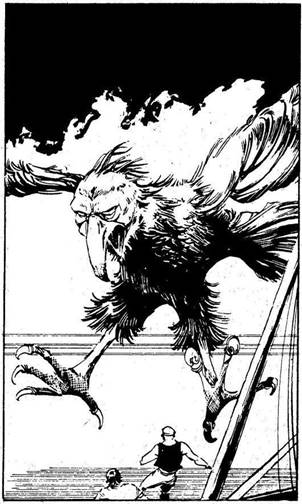
92.
Miközben elhajózol a sziget mellett, egy sötét, jól körvonalazható árny vetül a hajódra. Felnézel, és egy irdatlan nagy madarat pillantasz meg, amely ölyvhöz hasonlít, csak több százszor nagyobb. Egy ideig a Kísértet fölött köröz, aztán támad. Lecsap rád, a karmai közé ragad, és a sziget felé röpül veled. Előrántod a kardodat, és megpróbálsz megszabadulni tőle.
Óriási ölyv ÜGYESSÉG 11 ÉLETERŐ 10
Ha legyőzöd - lapozz a 124-re.

93.
A teremtmény körülbelül feleakkora, mint a verem, és elég hosszú. Ha nekifutásból felugrasz a vadállat hátára, hogy onnan elugorva juss ki a veremből - lapozz a 352-re; ha futva megkerülöd a szörnyet és kimész azon az ajtón, amelyen ő jött be - lapozz a 8-ra.
94.
Igazi bolondra találtál, aki hajlandó az összes rabszolgádat megvenni. Az aszott öregember biztosan vak, hogy nem látja, milyen rozzantak és
betegek a foglyaid, és azt hiszi, hogy jó vásárt csinált. Darabonként 15 Arany Tallért kapsz értük. Szorozd meg a rabszolgák számát tizenöttel, és a kapott számot, mely újabb Arany Tallérjaidat jelzi, jelöld a Zsákmány rovatban. Lapozz a 279-re.
95.
Görbe kardodat beledöföd a macskába, és megölöd. A többi macska eltűnik. A boszorkány a melléhez kap, és holtan esik össze. Kimész a szobából, és látod, hogy az összes háziállat és egyéb egzotikus madár visszaváltozott emberré, Összeszeded a legényeidet, és visszamentek a Kísértetre, majd Nippur felé hajóztok. Lapozz a 7-re.
96.
„Nagy kár - mondja el-Shazar -‚ de hát mi soha nem voltunk túl jó barátok! “Jelt ad embereinek, hogy folytassák a Kísértet ostromát. A tengerészek odahúzzák hajódat a gályájuk mellé, majd rárohannak szerencsétlen legényeidre, akiket kegyetlenül lemészárolnak. A Kísértetet elfoglalják, te pedig néhány legényeddel együtt a foglyuk leszel. Kalandod itt véget ér.
97.
Átlépsz az Ork testén, és bemész a pincébe, ahol 130 Arany Tallért találsz - add hozzá őket a Zsákmányodhoz. Ha megengeded az embereidnek, hogy tovább fosztogassanak a városban - lapozz a 141-re, ha gyorsan visszaparancsolod őket a Kísértetre - lapozz a 113-ra.
98.
Megbízható kalózaid foglyul ejtik a különítmény tagjait. A túlélők között találsz egy olyan fickót, akit - úgy gondolod - majd jó pénzért eladhatsz a rabszolgapiacon; jelöld ezt is a Kalandlap ZSÁKMÁNY rovatában! Embereidet beszállásolod a falu házaiba, és azzal bízod meg őket, hogy álljanak lesben, és támadják meg az esetleg arra haladó gyanútlan karavánokat. Tedd próbára a SZERENCSÉDET! Ha SZERENCSÉD van - lapozz 94-re. Ha nincs SZERENCSÉD - lapozz a 24-re.
99.
Épp hogy át tudsz csusszanni az ajtó repedésén. A hatalmas kőtömb alig néhány centivel mögötted zuhan a földre. Lapozz a 179-re.

100.
Lapozz az 50-re.
101.
Kiütöd a vadembert, és annyi Aranyat szedsz össze, amennyiben eredetileg fogadtál, aztán elhagyod az arénát. Ha eddig még nem próbáltad volna, részt vehetsz egy Batárversenyen - lapozz a 270-re, vagy kockavető versenyen - lapozz a 236-ra. De el is hagyhatod Calahot - lapozz a 262-re.
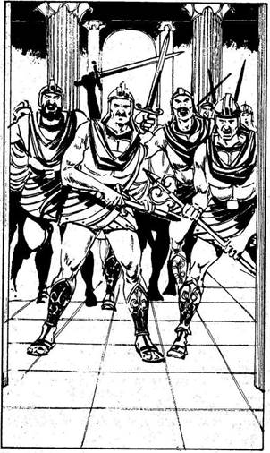
102.
Kirkuk kikötőjébe behajózva, legénységed zömével partra szállsz, és az ott gyülekező polgároknak megparancsolod, hogy vezessék eléd a vezérüket. Amikor az végül megérkezik, azt követeled tőle, hogy a polgárok fizessenek nektek 200 Arany Tallért, máskülönben porig romboljátok a várost, és lakosait elhurcoljátok rabszolgának. „Nem csekélység, amit kérsz, méltóságos uram! - mondja az ijedt öregember. - De gyere velem a város kincstárához, és megkapod, ami benne van.” Legényeiddel követed a városon át az öreget, majd néhány perc múlva megérkeztek egy elég csúnya középület elé. Amikor az öreg benyit az ajtón, rengeteg kishi katona ront rátok. Rövid, kék köpeny és acélvért van rajtuk, kezükben acélfegyverek. A szomszédos házakból még több katona sereglik körétek. Hatalmas kézitusa kezdődik.
Kishi katonák ÜTÉS 8 ERŐ 8
Ha legénységeddel legyőzöd őket - lapozz a 121-re.
103.
Szél kerekedik, belekap a Kísértet vitorláiba, majd heves zápor vág végig a legénységeden. Hajód a nyílt tengeren hánykolódik. Tedd próbára a SZERENCSÉDET! Ha SZERENCSÉD van - lapozz a 13-ra. Ha nincs SZERENCSÉD - lapozz a 172-re.

104.
Legénységeddel elfoglaljátok a két hadihajót, legyőzitek annak lagoshi tengerészeit, majd nekiálltok kincsek után kutatni. 68 Arany Tallért találtok, és 3 olyan legényt, akit majd a rabszolgapiacon eladtok - jegyezd fel ezeket a Kalandlapodon a Zsákmány rovatba. Kiszabadítod a Kísértetet a hadihajók csáklyáinak fogságából. Lagash valóban túl veszélyes hely, úgyhogy ha visszafordulsz a Beltengeren Enraki irányába - lapozz a 76-ra, ha Viszont a Keleti-partvidék mentén elhajózol a Holtak Folyóihoz - lapozz a 197-re.
105.
A barlangból hatalmas oldalfolyosó nyílik, vége a sötétségbe vész. A barlang egyenesen folytatódik lefelé. Ha irányt változtatva az oldalfolyosón mész tovább - lapozz a 136-ra, ha a barlangban haladsz tovább lefelé - lapozz a 148-ra.
106.
Kezdetét veszi a verseny: a gyíkok elindulnak a Goblin felé. Sárkánygyík kiugrik a sorból, és meggyőző harapással megnyeri a versenyt. Ha te ülted meg a győztest, annyi Aranyat (vagy rabszolgát) kapsz, amennyit a verseny előtt megtettél. Ha a versenyződ vesztett, mindent elvesztesz, amit megtettél. Lapozz a 73-ra.

107.
A hadihajó támadásra készen gyorsan közeledik. Mikor a közeletekbe kerül, a tengerészek a fedélzetről csáklyákat hajítanak át a Kísértetre, és közelebb húzzák magukhoz. A csata megkezdődik.
Kishi hadihajó ÜTÉS 10 ERŐ 8
Ha el akarsz menekülni, a büntetés bejegyzése után lapozz a 332-re. Ha megütköztök velük és ti győztök, lapozz a 287-re.

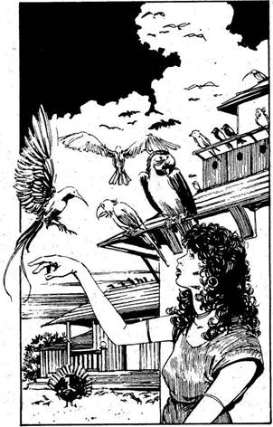
108.
A Kísértet a tenger hullámait szelve a sziget felé tart. Dobj három kockával. Ha a kapott összeg kevesebb, mint LEGÉNYSÉGED EREJE, utazási napjaid számát növeld 4-gyel a HAJÓNAPLÓDBAN. Ha a kapott összeg ugyanannyi vagy több, mint LEGÉNYSÉGED EREJE, utazási napjaid számát növeld 5-tel a HAJÓNAPLÓDBAN. A víz szemmel láthatóan elcsitul, teljesen sima lesz, amint Kazallu közelébe értek. Kiköttök, és elindultok élelmet és vizet szerezni, hogy feltölthessétek a hajó készletét. Embereidet csoportokra osztva szétküldöd, te pedig a parton várakozva kidolgozod utad utolsó szakaszának tervét. Néhány óra múlva az egyik legényed visszajön, és közli, hogy nem messze egy farmot találtak. Elmész vele a farmra, ahol találkozol a tulajdonossal, egy csodaszép fiatal nővel, aki rengeteg különböző egzotikus madár és háziállat társaságában élve egymaga vezeti a farmot. Amikor megérkeztek, levessel és kenyérrel kínál benneteket. „De boldog vagyok, hogy megismerhetem! - mondja izgatottan. - Megkínálhatom valamivel?” Ha elfogadod az ajánlatát és csatlakozol a legényeidhez - lapozz a 26-ra, ha nem fogadod el, és csak azt veszed magadhoz, amire a Kísérteten majd szükségetek lesz - lapozz a 39-re.

109.
Amikor elhagyod a Trysta-szigetet, feltűnik egy sötét, vitorla nélküli bárka, és egyenesen a Kíséret felé tart. Fedélzetén csak úgy nyüzsögnek a katonák, és hatalmas lövegek sorakoznak a hajó orránál és tatjánál. Ez a titokzatos bárka, melyet minden kétséget kizáróan varázserő hajt, meg akarja támadni a hajótokat. Amikor a közeletekbe ér, a lövegekből golyózápor zúdul a hajótokra, és összetöri az árbocaitokat. Nincs hova menekülnöd, meg kell küzdened velük!
Bárka ÜTÉS 10 ERŐ 8
Ha a te legénységed győz, lapozz a 395-re.

110.
A vadállat tébolyult dühvel csap le rátok.
A Rémség ÜTÉS 12 ERŐ 12
Ha a legénységed győz - lapozz a 219-re.
111.
Lefelé mentek az ösvényen a hegy oldalában, és csakhamar egy sziklaszirthez értek, melyről leláttok a vár hátsó oldalára. Úgy ítéled meg, hogy a falak itt alacsonyabbak, és azt ajánlod az embereidnek, hogy erről az oldalról támadjátok meg a várat. Innen jól be lehet látni a vár középső részére is, ahol hatalmas fatemplom emelkedik. Ha azonnal megrohanjátok a falnak ezt az alacsony részét - lapozz a 149-re, ha tüzes nyílvesszőkkel felgyújtjátok a templomot és ezzel zavart okoztok a védők sorában - lapozz a 285-re.
112.
Fölkapsz egy kövét, és ledobod a sötét mélységbe a teremtmények mögé. A kő nagy csattanással ér földet. A Trogloditák azonban nem dőlnek be. Észrevesznek, előrántják dárdáikat, és felrohannak a lépcsőn. Kardot rántasz, és elindulsz lefelé, hogy félúton találkozz velük. Lapozz a 130-ra.

113.
Ha a Kísértetre visszatérve kelet felé hajózol és a Goth-csatornán át a Déli-tenger felé mész - lapozz a 246-ra; ha az Ölyv-sziget felől mész ki erre a tengerre - lapozz a 27-re.
114.
A szobor könnyedén elgurul, de közben széles orrlyukaiból csípős, mérgező folyadékot lövell a szemedbe. Dobj három kockával. Ha a kapott összeg nagyobb, mint ÉLETERŐ pontjaid száma - lapozz a 9-re, ha a kapott összeg ugyanannyi vagy kevesebb, mint ÉLETERŐ pontjaid száma - lapozz a 129-re.
115.
Mikor már egészen közel vagy a szörnyhöz, hatalmasat vágsz a térdhajlatára. A földre zuhan - vonj le tőle 2 ÉLETERŐ pontot. Mit teszel, míg a teremtmény a földön elterülve fekszik?
Föl-le ugrálsz a hátán? Lapozz a 361-re.
Belerúgsz az ágyékába? Lapozz a 224-re.
Fejbe vágod? Lapozz a 82-re.
116.
Az Óriás Homár biztosan kielégíti minden élelmiszerszükségletedet, a közeli patak vize pedig friss ivóvízzel lát el benneteket. Visszatérsz a Kísértetre, elhagyod a Három Nővért, és elindulsz utad utolsó szakaszára Nippurba. Lapozz a 7-re.

117.
A madár belezuhan a tengerbe, és eltűnik a szemed elől. Ha kikötsz a szigeten - lapozz a 49-re, ha a tengerszoroson át a Déli-tengerre hajózol ki - lapozz a 15-re.
118.
Kezdetét veszi a verseny: a gyíkok elindulnak a Goblin felé. Legnagyobb meglepetésedre egyik favoritod sem győz. Vond le a megtett Aranyakat (vagy rabszolgákat), és jelöld a Zsákmány rovatban. Lapozz a 73-ra.
119.
Az üldöző hadihajóval a nyomodban a Trysta-zátonyok felé tartasz. A vitorlák zúgásából és a víz fehér tajtékjából tudod, hogy milyen közel vannak. Dobj két kockával. Ha a kapott összeg kevesebb, mint ÜGYESSÉG pontjaid száma - lapozz a 134-re. Ha a kapott összeg ugyanannyi vagy több, mint ÜGYESSÉG pontjaid száma - lapozz a 159-re.

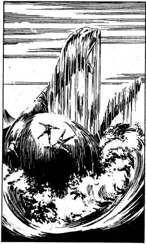
120.
Míg te körülnézel a szigeten, legényeid a parton tüzet gyújtanak, és megsütik azt a néhány halat, amit fogtak. Egyszer csak remegés rázza meg a szigetet, majd az elsőt még egy követi. A tenger hirtelen vadul bugyborékolni kezd a sziget körül, és hatalmas karok, fejek és farkak törnek elő a vízből. A „sziget” egy élő teremtmény! Hatalmas hullám csap át a Kísértet fedélzetén, amikor a szörny megfordul, hogy eloltsa a hátán gyújtott tüzet. Dobj két kockával, és a kapott összeget vond le LEGÉNYSÉGED EREJÉBŐL. Ha maradt még néhány embered azután, hogy a szörny visszahúzódott, visszamész a Kísértetre, és folytatod az utadat. Ha déli irányba mentek a Goth-csatorna felé - lapozz a 4-re, ha nyugat felé, az Ölyv irányába - lapozz a 257-re.
121.
A kishi katonák vereséget szenvedtek. Hátat fordítanak, és eltűnnek a szomszédos utcák labirintusában. Azon az utcán, ahol csatáztatok, kissé távolabb egy sereg Szárnyas Kishi Huszárt látsz gyülekezni. Ideje eltűnni! Ha legényeiddel hanyatt-homlok visszarohansz a Kísértetre - lapozz a 331-re, ha a város utcáin át a Martu-Amurru-hegy erdőségeibe menekültök - lapozz a 355-re.
122.
Miközben a Küklopsz ide-oda lóbál a levegőben, szabadon lévő lábaddal sikerül jól megrúgnod. Fájdalmában felordít és a földre dob - vonj le tőle 1 ÉLETERŐ pontot. Nem ütötted meg magad, fölállsz, és szembefordulsz ellenfeleddel. Mit teszel?
Ráhúzol a vállára? Lapozz a 91-re.
Behúzol egyet a rekesz-
izmába? Lapozz a 18-ra.
Karateütéssel a hónaljába
vágsz? Lapozz a 337-re.
123.
A Kísértettel elhajózol Enraki legdélibb csücskétől. A horizont teljesen tiszta, sem hajó, sem egy árva felhő nem látható. Kish és a Keleti-partvidék kereskedelmi főútvonala tőletek délre, Enraki és a Trysta-zátonyok között halad. Ha akarod, átkutathatod ezt a szakaszt, hogy nem bukkansz-e gazdag kereskedőkre - lapozz a 318-ra; vagy ha legénységed tagjai közül néhányan elestek volna, elhajózhatsz a semleges Assur városába, hogy ott felvehess egypár új embert - lapozz a 171-re. De ha elég szerencsésnek érzed magad, azt is megteheted, hogy szerencsét próbálsz Calah játékbarlangjaiban - lapozz a 211-re, vagy elhajózhatsz a Keleti-partvidékre, hogy ott egy kis szárazföldi portyázásra menj - lapozz a 197-re.
124.
Az Óriás Ölyv ledob a sziget fölött. Legalább 5 métert röpülsz, majd egy nagy fészekben landolsz, amelyben három hatalmas tojást találsz. A fészek alján egy lyukat fedezel fel, ahonnan keskeny,
durva falú alagút vezet tovább. Ha bemászol a lyukon, még mielőtt az Ölyv (vagy a párja) megtámadna - lapozz a 78-ra; ha lerohansz a hegyoldalon a lenti erdőkbe - lapozz a 61-re.
125.
Miután legyőzted az Awkmute-ot, elveheted a botját. Mostantól kezdve, ha egyedül küzdesz egy ellenféllel és megsebzed, dobj mindig egy kockával. Ha az eredmény 1 vagy 2, mindig vonj le 1 pontot az ellenfeled ÜGYESSÉGÉBŐL; ha az eredmény 3, 4, 5 vagy 6 - akkor vond le a szokásos 2 ÉLETERŐ pontot. Az előszobából két kijárat nyílik: az egyik egy közönséges folyosó, a másik viszont valamiféle kémény, melynek falán durván megmunkált, kiálló fogantyúk vannak. Ha a folyosón indulsz el - lapozz a 173-ra, ha felmászol a kéménybe - lapozz a 199-re.

126.
Görbe kardoddal beledöfsz a barna macskába, de nem sebesül meg. Lapozz a 322-re.
127.
Ha a hajósor frontvonalán átvágva a Keleti-partvidék felé veszed az utadat - lapozz a 34-re. Ha a Kísértet összes vitorláját felvonva, teljes lendülettel átvágsz az egymással csatázó hajók között - lapozz a 19-re.
128.
Támadóitokat legyőzve úgy határoztok, hogy visszasiettek a Kísértetre, attól tartva, hogy talán általános riadót fújtak az egész vidéken. Lapozz a 113-ra.
129.
A méreg megviseli a szervezetedet, de nem öl meg - vesztesz 6 ÉLETERŐ pontot. Miközben megpróbálod kitörölni a szemedből a maró anyagot, észreveszed, hogy a szobor elmozdításával egy hatalmas kőajtó nyílt ki. Bemész rajta. Lapozz a 179-re.
130.
A teremtmények közé rontasz, és görbe kardoddal nagyokat csapsz jobbra-balra.
Első Troglodita ÜGYESSÉG 9 ÉLETERŐ 6
Második Troglodita ÜGYESSÉG 8 ÉLETERŐ 6
Harmadik Troglodita ÜGYESSÉG 7 ÉLETERŐ 4
Negyedik Troglodita ÜGYESSÉG 7 ÉLETERŐ 4
Ha legyőzöd őket, lapozz a 307-re.
131.
Elkezdődik a verseny; a gyíkok elindulnak a Goblin felé. Többen is szinte egyszerre érnek célba. Döntőbírákat hívnak, hogy eldöntsék, ki a győztes. Wazi Biinre szavaznak. Ha te ülted meg a győztest, annyi aranyat (vagy rabszolgát) vehetsz fel, amennyit a verseny előtt megtettél. Ha a te versenyződ veszített, mindazt a pénzt, amit megtettél, elveszíted. Lapozz a 73-ra.
132.
Közel lépsz hozzá, és rávágsz a gerincére, de a fájdalom legkisebb jelét sem látod rajta. A Küklopsz megfordul, és hatalmasat rúg a válladba - vesztesz 1 ÉLETERŐ pontot. Megragadod a lábát, és oldalra rántod. A szörny elterül. Mit teszel?
Föl-le ugrálsz a hátán? Lapozz a 361-re.
Belerúgsz a bordáiba? Lapozz a 266-ra.
Fejbe vágod? Lapozz a 82-re.
133.
Néhány óra alatt körülhajózod a szigetet. Nem találsz semmi érdekeset, és visszamész a Kísértetre. Ha délnek fordulsz a Goth-csatorna felé - lapozz a 4-re, ha nyugatnak mész az Ölyv felé - lapozz a 257-re.
134.
Sikerül rábeszélned a legénységedet, hogy átkeljen a kiszámíthatatlan zátonyokon. A Kísértet behajózik egy sekély kis átjáróba, melyet tajtékzó, morajló víz vesz körül. Az összes vitorlát leeresztve előrehajóztok, végül eljuttok a csatornán egy elágazásig. Ha a szélesebb elágazáson hajózol tovább - lapozz a 170-re, ha a keskenyebben - lapozz a 198-ra.
135.
Miután legyőzted a hadihajót, átugrasz a fedélzetére, és zsákmány után kutatsz; aranyat nem találsz, viszont 5 kiváló fogolyra teszel szert a tengerészek között, akiket majd eladhatsz a Keleti-partvidék rabszolgapiacán. Miután visszatérsz a Kísértetre, egy égő fáklyával felgyújtod az ellenség hajóját. Ha visszafordulsz a Beltengeren Enraki irányába - lapozz a 76-ra. Ha a part mentén hajózol tovább a Holtak Folyói felé - lapozz a 197-re.

136.
Az oldalfolyosó hosszan kanyarog a tengerfenéken. Az egyik szakaszon észreveszed, hogy a falakat a földtől a mennyezetig különböző lények koponyái és csontjai borítják. Hosszú ormányú koponyákat és csípőcsontokat látsz, melyek akkorák, mint a lábad, sőt más emberi maradványokat is fölfedezel. Az egyik koponya, mely tán egy Egyszarvúé lehetett, ragyogó fehéren, tisztán áll ki a falból. Ha megpróbálod kiszakítani a falból - lapozz a 201-re, hanem nyúlsz semmihez és továbbmész a folyosón - lapozz a 168-ra.
137.
Az az ember, akit megbíztál, hogy adja el a rabszolgáidat, igen tapasztalt rabszolga-kereskedő. Annak ellenére, hogy a piac nem túl jó, mégis sikerül utazástól megfáradt rabszolgáid zömét
fejenként 12 Arany Tallérért eladnia. Szorozd meg rabszolgáid számát tizenkettővel, és a kapott összeget jegyezd be a Zsákmány rovatba - ennyi Aranyat szereztél. Lapozz a 279-re.
138.
A hosszú és kanyargós szakadékot hó borítja. Lassan felmászol rajta, s közben egyre közelebbről és egyre hangosabban hallod a sikolyokat. Hirtelen sok-sok hatalmas, bozontos szőrű fehér vadállat bukkan fel a fenti rejtekhelyekről, és egy óriási, hóból, jégből és kövekből gyúrt hógolyót gurítanak le rád. Dobj két kockával! Ha a kapott összeg kevesebb, mint ÜGYESSÉGED értéke - lapozz a 209-re. Ha a kapott összeg ugyanannyi vagy nagyobb, mint ÜGYESSÉGED értéke - lapozz a 17-re.

139.
Miközben gyomorszájon vágod, beleharap a lábadba. Mindketten felordítotok a fájdalomtól, és a Küklopsz a lábadat eleresztve fejre ejt - mindketten 2 ÉLETERŐ pontot vesztetek. Remegő lábbal ellenfeled felé fordulsz. Mit teszel?
Mellbe vágod? Lapozz a 18-ra.
Könyököddel belevágsz a
bordáiba? Lapozz a 29-re.
Repülőrúgással mellbe rúgod? Lapozz a 206-ra.
140.
A Kísértettel a nyugati partok mentén hajózol a Kish-delta felé. Dobj három kockával! Ha a kapott összeg kevesebb, mint LEGÉNYSÉGED EREJE, növeld 4 nappal utazási idődet a HAJÓNAPLÓDBAN. Ha a kapott összeg ugyanannyi vagy nagyobb, mint LEGÉNYSÉGED EREJE, növeld 5 nappal utazási napjaid számát a HAJÓNAPLÓDBAN! A sötétség leple alatt, óvatosan, nehogy zátonyra fussatok az alacsony vízben, felhajóztok a delta egyik ágán. Tedd próbára a SZERENCSÉDET! Ha SZERENCSÉD van - lapozz a 64-re, ha nincs SZERENCSÉD - lapozz a 25-re.

141.
Legénységed megvadul - gyújtogatnak, feldúlják az egész várost. Nemsokára azonban egy kishi lovas csapat tűnik fel a város szélén, és ellentámadásba lendül. A támadás váratlanul éri a legényeidet, ezért a következő összecsapás előtt vonj le 2 pontot legénységed dobásából.
Kishi lovasság ÜTÉS 11 ERŐ 6
Ha a legénységed legyőzi őket, lapozz a 128-ra.
142.
Széllel szemben hajózol. Dobj egy kockával. Ha a kapott szám 1, 2 vagy 3, 2-vel növeld utazási napjaid számát a HAJÓNAPLÓDBAN. Ha a kapott szám 4, 5 vagy 6, növeld utazási napjaid számát 3-mal. Ha a HAJÓNAPLÓDBAN szereplő utazási napok száma páros - lapozz a 255-re, ha páratlan - lapozz a 212-re.
143.
Legénységeddel viharos gyorsasággal berontasz a kicsiny faluba, és megleped annak védtelen lakóit, akiket egy szemvillanás alatt foglyul ejtesz embereiddel. Néhánynak azonban sikerül elmenekülnie, és az (általad eddig nem ismert) közeli katonai őrhelyhez eljutnia. A menekültek fél órán belül kisebb lovas zsoldos különítménnyel jelennek meg, és ellentámadásba lendülnek.
Zsoldosok ÜTÉS 9 ERŐ 8
Ha a legénységed legyőzi őket - lapozz a 98-ra.
144.
„Vesztettél - mondja el-Fazouk -‚ a Kísértet az enyém!” Ha békésen átadod neki a hajódat - lapozz a 3-ra, ha valahogy megpróbálsz harcolva kikeveredni szorult helyzetedből - lapozz a 81-re.
145.
Elfordulsz, és teljes erőddel hatalmas ütést mérsz a Küklopsz könyökére - vonj le 2 pontot ÉLETEREJÉBŐL. Megragad, és úgy a földhöz vág, hogy csak úgy nyekkensz - vesztesz 2 ÉLETERŐ pontot. Négykézláb utánakúszol. Mit teszel?
Könyékkel belevágsz a
gerincébe? Lapozz a 132-re.
Könyékkel belevágsz a
térdhajlatába? Lapozz a 46-ra.
Belebokszolsz a veséjébe? Lapozz a 347-re.
146.
A piacokon nyüzsögnek a farmerok, katonák, hivatalnokok, kereskedők és rabszolgák, de szinte egyetlen tengerész vagy szárazföldi halandó sem óhajtja megtanulni a kalózmesterséget. Csak néhány kóbor lelket találsz, aki hajlandó közétek beállni, bár az áruk igen magas. Minden 20 Arany Tallér után, amit kifizetsz, nyersz 1 LEGÉNYSÉGI ERŐ pontot. Az egyik újdonsült kalózodtól megtudod, hogy a közelben van egy igen gazdag, de veszedelmes szentély, amelyet a pestis isteneinek emeltek. Ez a szentély az Assur mellett kanyargó folyó mentén található, a várostól néhány kilo-
méterre. Ha fölfelé indulsz a folyón, hogy megkeresd ezt a helyet - lapozz a 335-re; ha inkább elhagyod Assurt és délkeleti irányba hajózol el, a Beltengerre - lapozz a 318-ra. Ha a nyugati partvidék mentén hajózol lefelé - a 45-re.
147.
A megtizedelt horda megfordul és futásnak ered. Üldözőbe veszitek a menekülő Goblinokat, és egészen a barlangjukig kergetitek vissza őket, ahol újra összecsaptok velük. A csata hevében a Goblinok barlangjában elkeveredsz az embereidtől, és a gyér fényben botladozva belezuhansz egy föld alatti, sebes folyású patakba. A barlang vágataiban sodródsz az árral, vízeséseken zuhansz le, míg végül egy viszonylag nyugodt tóban kötsz ki jó messzire a barlang bejáratától. Lapozz az 53-ra.

148.
A barlang hirtelen erősen összeszűkül - egy csipkézett szélű, három méter magas és fél méter széles repedéshez érsz, melyen épp hogy átférnél. A zavaros víztől nem látod, mit rejt a mélye. Ha megpróbálsz átbújni a repedésen - lapozz a 398-ra, ha visszamész a barlangban az előbb látott oldalfolyosóhoz - lapozz a 136-ra.
149.
Néma csöndben megközelítitek az erődítmény hátsó falát, aztán nagy lendülettel támadtok: hajítócsáklyákat dobtok, és embereid a fal pereme fele törnek. Átmásztok a falon a vár udvarára, és rajtaüttök a harcos papokon. Azok mindennek ellenére megpróbálnak védekezni.
Enraki papjai ÜTÉS 8 ERŐ 10
Ha a legénységed győz - lapozz a 274-re.
150.
Lapozz az 50-re.
151.
Amint fölfelé másztok a hegycsúcsra, megbotlasz egy hatalmas, fatörzsekből és sziklákból épített fészekben. A fészekben három tojás van, mindegyik ember nagyságú. Ez minden bizonnyal az Óriás Ölyv fészke. A fészek alján egy keskeny, durván kivájt nyíláson át alagút vezet a hegy mélyébe. Mikor felmászol a fészekbe, hogy közelebbről megnézzed, iszonyú szárnycsapkodás hangja üti meg a füledet. Az Ölyv tér vissza a rejtekhelyére! Legényeid, akik kinn állnak az alagút előtt,
pánikszerűen elrohannak a dzsungel irányába. Az Ölyv hangos rikácsolással száll le a fészkére. Úgy döntesz, hogy az alagúton mész tovább - lapozz a 78-ra.
152.
Növeld 1 nappal utazási idődet a HAJÓNAPLÓDBAN. Egy eldugott öbölben vesztegelsz a hajóddal. Legényeiddel partra szállsz, és elindulsz a szárazföld belsejébe a széles, gondosan megművelt földeken át. Egy szarvasmarhacsordához értek, mely nyugodtan legelészik a dús lóherében. Megparancsolod, hogy legényeid vágjanak le néhányat, hogy később legyen mit ennetek. Mivel a földeken egy teremtett lélek sincs, ha azt mondod a legényeidnek, hogy lopjanak el néhány marhát - lapozz a 41-re, ha inkább továbbmész, és megnézed, mit zsákmányolhatsz a szigeten - lapozz a 77-re.
153.
Miközben a Kísértettel a második hajóraj két hajója között próbálsz áttörni, az egyik hajó fedélzetéről nyúlós fekete masszát hánynak rátok, mely ellepi a Kísértet fedélzetét és kötélzetét. Ezután tüzes nyilak áradata zúdul rátok, és a fekete massza lángra lobban. Hajód és legényeid zöme fáklyaként ég. A hajó fedélzetéről néhány életben maradott kalózoddal együtt a vízbe veted - de ez az út az utolsó. Kalandod itt véget ért.

154.
A kalózok természetesen a kincsüket temették itt el. Kiveszitek a ládát a gödörből, és 112 Arany Tallért találtok benne - ezeket add hozzá Zsákmányodhoz. Átkutatjátok a hajójukat, ahol elegendő élelmet és vizet találtok ahhoz, hogy Nippurig kibírjátok az utat. Visszatértek a Kísértetre, és délre hajóztok. Lapozz a 7-re.
155.
„Aljas kutyák! Egy kalóz sincs köztetek! - mondod, és kardot rántasz. - Aki elsőnek hátat fordít ennek az ígéret földjének, azt keresztüldöföm!” Legényeid egyáltalán nem ijednek meg - annyira nem, hogy egyikük felemeli az íját, és mellbe lő! „Nem fogok meghalni azért, hogy kielégítsem a mohóságodat!” - mondja gyilkosod, miközben a földre rogysz. Kalandod itt véget ért.

156.
Amikor a Küklopsz elkap, hatalmas jobbegyenessel beleöklözöl egyetlen szemébe - vonj le tőle 2 ÉLETERŐ pontot. A szörny felordít fájdalmában, és az egyik lábadnál fogva felemel a levegőbe. Fejjel lefelé lógsz a kezében. Mit teszel?
Beleöklözöl a hasába? Lapozz a 139-re.
Beleöklözöl a bordáiba? Lapozz a 372-re.
Belerúgsz a könyökébe? Lapozz a 235-re.
157.
A Kísértettel nyugati irányba hajóztok, a part felé. Dobj három kockával. Ha a kapott összeg kevesebb, mint LEGÉNYSÉGED EREJE - növeld utazási napjaid számát 5-tel a HAJÓNAPLÓDBAN. Ha a kapott összeg ugyanannyi vagy több, mint LEGÉNYSÉGED EREJE - növeld 6 nappal utazási idődet a HAJÓNAPLÓDBAN. A szárazföldet a Martu-Amurru-hegy lábánál éred el, amelynek erdővel borított csúcsa egy kis halászfalura, Kirkukra néz. Mit teszel?
Legényeiddel partra szállsz, ráijesztve a
város polgáraira, és követeled, hogy adják
át neked aranyaikat? Lapozz a 102-re.
A part mentén elhajózol az ellenséges
Kishbe? Lapozz a 223-ra.
158.
Fáklyákat gyújtotok, leereszkedtek az alagútba, és elindultok a hegy mélyébe. Néhány száz méter után egy befalazott ajtónyíláshoz értek, mely elzárja az utat. Mikor nekifeszültök a falnak, hogy megvizsgáljátok mennyire szilárd, legnagyobb meglepetésedre megnyílik alattad a föld, és döbbenten álló társaid szeme láttára eltűnsz egy keskeny vágatban. Néhány másodpercig tartó zuhanás után egy föld alatti tóban kötsz ki. Feljössz a víz felszínére és körülnézel. Lapozz az 53-ra.
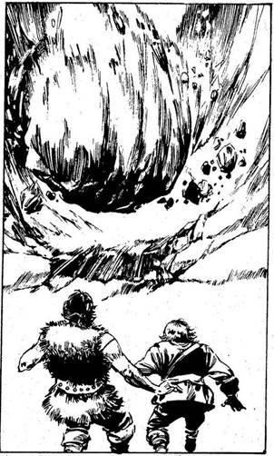
159.
Legényeid nagyon ellenzik, hogy átkeljetek a veszélyes zátonyokon, és amikor hatalmas, fülsiketítő robaj rázza meg a Kísértetet, legszörnyűbb félelmeik beigazolódnak. Hajód zátonyra fut. A kishi tengerészek, látva szorult helyzeteteket, kissé lazítanak, de még mindig nem tettek le róla, hogy átmenjenek a ti hajótok fedélzetére - laposabb fenekű hajójukkal biztonságosan siklanak a Kísértet mellé. Legényeid készen állnak, amikor a tengerészek átlendülnek a hajókorláton.
Kishi hadihajó ÜTÉS 10 ERŐ 8
Ha a te legénységed győz, lapozz a 234-re.
160.
A kanyargós szakadék hosszú, vastagon áll benne a hó. Amint fölfelé másztok az embereiddel, a visítás és az üvöltés egyre erősödik és egyre gyakrabban hallatszik. Hirtelen veszélyes gyorsasággal hatalmas, jeges, sziklás hógolyó gördül végig a szakadékon. Sikerül félreugranod előle, de több legényed nem ilyen szerencsés: elsodorja őket a hótömeg. Vonj le 2 pontot LEGÉNYSÉGED EREJÉBŐL. A hegy tetején számos bozontos szőrű, fehér vadállatot veszel észre, amelyek a veszedelmes hógolyókat gyúrják, és gurítják rátok. Ha megtámadod ezeket a havasi teremtményeket, mielőtt elkészítenék fegyvereiket - lapozz a 220-ra, ha visszamész a szakadékon az ösvényhez és azon haladsz tovább - lapozz a 244-re.
161.
Többször is erősen hozzányomod kardod élét a szikla tövéhez, és apró, kemény lökésekkel kimozdítod a helyéből. A szikla görögve indul el a lépcsőn lefelé. Amikor a Trogloditák meghallják, mi történik, futva indulnak el fölfelé a lépcsőn. Ez jól beleillik a tervedbe, mert így elhagyják a biztonságos oldalfolyosót. Amikor a Trogloditák meglátják a feléjük guruló sziklatömböt, sarkon fordulnak és elmenekülnek. A sziklatömb azonban túl gyors, és összelapítja őket. Lapozz a 307-re.
162.
A Pióca kizuhan a fészkéből, és a lábad elé hullik. Mikor megnézed a fészkét, látod, hogy az elég széles, és mindkét oldalán durván faragott fogantyúk vannak, amelyek segítségével be lehet mászni az alagútba, és föl lehet kapaszkodni rajta. Ha lefelé mész tovább a lépcsőn - lapozz a 183-ra, ha fölmászol a Pióca fészkébe - lapozz a 199-re.
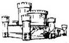
163.
Válladhoz emeled az íjat, célzol és lősz. A nyílvessző süvítve száll el, és a szörny két szeme közé fúródik. Vakító kék robbanás következik. A szörny a földre rogy - de feje már nincs. Az őserdő felől távoli ordítást és zajt hallotok, ezért úgy határoztok, hogy visszamentek a Kísértetre. Lapozz a 219-re.
164.
A zátonyok között hajózva a Trysta-sziget felé igyekszel. Dobj három kockával. Ha a kapott összeg kevesebb, mint LEGÉNYSÉGED EREJE, növeld utazási napjaid számát 1-gyel a HAJÓNAPLÓDBAN. Ha a kapott összeg ugyanannyi vagy nagyobb, mint LEGÉNYSÉGED EREJE, növeld utazási napjaid számát 2-vel a HAJÓNAPLÓDBAN. Lapozz a 152-re.
165.
A szobor könnyedén elgurul, közben mozgásba hoz valamilyen ősrégi szerkezetet, mely hatalmas robajjal kinyitja a tömör kőajtót. Belépsz rajta. Lapozz a 179-re.
166.
Elfordítod a kormánykereket, és nagy nehezen sikerül elkerülnöd a végzetes összeütközést. Amikor a jéghegy mellett elhaladsz, hirtelen fölszáll a köd, és néhány száz méternyire a távolban hatalmas gályát veszel észre a jéghegybe ágyazva. Ha lehorgonyzol és hajód egyik csónakján megközelíted a jéghegyet - lapozz a 221-re, ha inkább továbbhajózol a jéghegy mellett és délre indulsz - lapozz a 217-re.
167.
A Kísértet a Déli-tengert átszelve, a Három Nővér szigete felé tart. Dobj három kockával. Ha a kapott összeg kevesebb, mint LEGÉNYSÉGED EREJE - növeld utazási napjaid számát 4-gyel a HAJÓNAPLÓDBAN! Ha a kapott összeg ugyanannyi vagy több, mint LEGÉNYSÉGED EREJE - utazási napjaid számát növeld 5-tel a HAJÓNAPLÓDBAN!
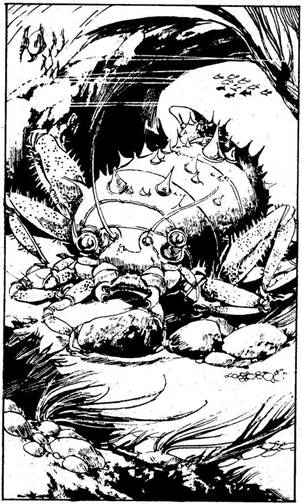
A három szigethez közeledve látod, hogy azok egy csoportban, egymáshoz egészen közel állnak. A hozzád legközelebb eső sziget teljesen sík és rendezett - mindenfelé gondosan művelt gyümölcsöskerteket és zsúpfedeles házakat láttok. A következő sziget valójában kihunyt vulkán, melynek csúcsa több ezer méter magasan nyúlik az ég felé, s lejtőit erdők borítják. A harmadik sziget, az elsőhöz hasonlóan, szintén sík, de ezen pálmafák nőnek és homok borítja. Melyiken akarsz kikötni?
A rendezett szigeten? Lapozz a 386-ra.
A vulkánszigeten? Lapozz a 369-re.
A pálmafákkal benőtt szigeten? Lapozz a 354-re.

168.
A folyosó hirtelen véget ér egy nagy, sziklába vájt barlangban. A göröngyös földön ül a Krell, melynek tüskékkel borított páncélját iszonyúan kusza végtagok ölelik körül. Kocsányon lógó szemekkel méreget, miközben egyik ollója egy szikladarabbal játszadozik. „Étel! Étel! - mondja. - Mmm, mmm, étel. Igen, étel!” Lábaival elrugaszkodik, és megtámad.
Krell ÜGYESSÉG 8 ÉLETERŐ 12
Ha legyőzöd - lapozz a 374-re.
169.
Ügyesen félreugrasz, a kerék elgördül melletted, a verem túloldalához csapódik, és kései mélyen belevájódnak az ajtóba: A falban lévő mélyedésből, ahonnan a kerék elindult, nem lehet továbbjutni. „Nagyon gyors vagy, te ravasz róka - mondja az apát, igyekezetedet látva. - Nem próbálkozol meg még eggyel?” - kérdezi. Melyik ajtót nyitod ki?
Azt, amelyiken csillaghullás
látható? Lapozz a 380-ra.
Azt, amelyiken egy fordított háromszög
látható? Lapozz a 327-re.
Azt, amelyiken egy félhold
látható? Lapozz a 249-re.
170.
A kormányrudat és a vitorlákat gondosan irányítva biztonságosan behajózol a csatorna elágazásába. Valami hirtelen megállásra kényszeríti a hajódat, de ez nem zátony, hanem valami hatalmas teremtmény, mely az átjáró közepén trónol. Óriási kénsárga szívókarok bukkannak ki a vízből, és a Kísértet fedélzetén átnyúlva testetek köré tekerednek. Meg kell küzdened ezzel a rémmel.
Zátonyfürkész ÜTÉS 9 ERŐ 6
Ha legyőzöd - lapozz a 267-re.
171.
A semleges Assur városa felé hajózol, a Kísértet egyenletesen szeli a Beltenger nyugodt vizét. Dobj három kockával. Ha a kapott összeg kevesebb, mint LEGÉNYSÉGED EREJE, növeld utazási napjaid számát 5-tel a HAJÓNAPLÓDBAN. Ha a kapott összeg ugyanannyi vagy nagyobb, mint LEGÉNYSÉGED EREJE, 6-tal növeld utazási napjaid számát a HAJÓNAPLÓDBAN. Ha a HAJÓNAPLÓDBAN lévő szám páratlan - lapozz a 376-ra; ha ez a szám páros - lapozz a 357-re.
172.
A vihar néhány óra múlva egyenesen a Trysta-zátonyok sziklafogai közé sodorja a hajódat. Ennek az istenverte zátonynak a kövei és ősrégi koralljai apró darabokra hasogatják a Kísértetet, melyet széthord a hatalmas hullámverés és a könyörtelen szél. Mivel hajótörést szenvedtél, nem folytathatod az utadat tovább!
173.
A folyosóban koromsötét van, de közvetlenül előtted egy ajtó körvonalait veszed észre. Tedd próbára a SZERENCSÉDET! Ha SZERENCSÉD van, lapozz a 289-re, ha nincs SZERENCSÉD - lapozz az 5-re.
174.
Ha egyszer megtámadnak a paraziták, nincs menekvés! Porhüvelyed egy másodperc alatt kiürül, a férgek újabb petéket raknak le benned, és azokat melengetve várják következő, mit sem sejtő áldozatukat. Kalandod itt véget ért.
175.
A Kísértet túl lassú. A két hadihajó gyorsan átvág a tengeren, és máris közrefogja a hajódat. Nyíl- és hajítócsáklya-zápor alá veszik a Kísértetet. Meg kell küzdened velük.
Hadihajók ÜTÉS 10 ERŐ 14
Ha a legénységed legyőzi őket - lapozz a 104-re.
176.
A lovas hadsereg illő távolságból visszakísér benneteket a Kísértethez, aztán nekivágtok a nyílt tengernek. Amint kiértek az öbölből, dél felől furcsa, ijesztő szél támad. Ez a természetfeletti szélroham, mely valószínűleg a Négy Szél Király bosszúja, egyre erősebbé és erősebbé válik, és hajód körül felkorbácsolja a tengert. Képtelen vagy ilyen viharban navigálni - oda sodródtok, ahová a szél visz benneteket. Egy hét múlva lecsendesedik a vihar, és a Beltenger északi végében találjátok magatokat, Tak partjainál nem messze attól a ponttól, ahonnan elindultatok. Már nem nyerheted meg a fogadást, ezért kalandod itt véget ér.
177.
Miközben fejjel lefelé lógsz a szörny markában, hatalmas ütést mérsz az ágyékára. Sokra nem mész vele, csak a kezed sajdul bele - vesztesz 1 ÉLETERŐ pontot. A Küklopsz azonban ettől úgy megzavarodik, hogy elengedi a lábadat. A földre zuhansz. Fölállsz, és szembefordulsz ellenfeleddel. Mit teszel?
Mellbe vágod? Lapozz a 18-ra.
Visszakézből belevágsz a
hónaljába? Lapozz a 337-re.
Könyököddel belevágsz a
bordáiba? Lapozz a 29-re.
178.
Megkerülöd a Trysta-sziget déli részét, és a Goth-csatorna felé indulsz. Maradtól néhány kilométerre egy szigetet veszel észre, amelyik egyik térképeden sem szerepel. Ha kikötsz ezen a szigeten - lapozz a 38-ra, ha folytatod az utadat - lapozz a 4-re.
179.
Az ajtón belépve keskeny előszobába jutsz, ahonnan Jobbra és balra sok-sok fülke nyílik. A földön elszórva rengeteg ovális szürke kő hever. Mindegyik legalább vagy fél méter átmérőjű. A terem túlsó végében egy másik hatalmas ajtó van. Mit teszel? Ha benézel az egyik fülkébe - lapozz a 218-ra, ha közelebbről is szemügyre veszed a köveket - lapozz a 190-re, ha nem nyúlsz semmihez és a hátsó ajtóhoz mész - lapozz a 248-ra.
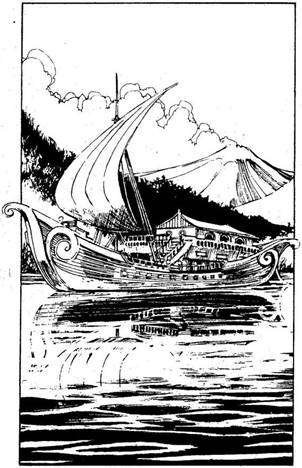
180.
Ha még nem tetted volna, annyi rabszolgát adhatsz el, ahány csak van - lapozz a 349-re, vagy térj vissza a Kísértetre - lapozz a 238-ra.
181.
A Keleti-partvidék mentén Lagash felé hajózol, és a hatodik napon megérkezel. A Kísértettel beúszol a Parine folyón a várost védő falakig, és folytatod az utat. Amikor hajód befordul a folyó egyik kanyarulatába, pompás sétahajót pillantasz meg, mely elkeseredetten próbál az árral szemben úszni. A Kísértettel a hajó mellé kerülsz, és hangos kiáltással a kis számú krómsisakos Őrség ellen vezényeled legénységedet.
Sétahajó ÜTÉS 8 ERŐ 6
Ha te győzöl - lapozz a 280-ra.
182.
„Azt már nem, kapitány! - kiáltják. - Elegünk van azokból a helyekből, ahová elcipelsz bennünket! Visszamegyünk Takba, ott legalább emberek az ellenségeink!” Lerohannak a partra, ellopják a hajó csónakját, és visszatérnek a Kísértetre. Elhajóznak észak felé, téged pedig a szigeten hagynak. Kalandod itt véget ér.
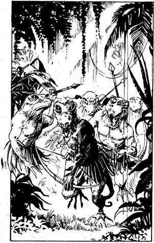
183.
A lépcsők egy nagy mauzóleumhoz vezetnek. Koporsók, szarkofágok, sőt Csupán csak lepellel letakart testek hevernek szanaszét. Végigmész a nyálkás padlón, megállsz egy koporsó előtt, és azon gondolkozol, vajon kinyisd-e vagy sem. Halk nyögés száll végig a csarnokon, amelyet jajgatás követ. Amikor megfordulsz, egy kiváló harcos fehéren fénylő, pompás vértbe öltözött alakját pillantod meg. Látod, hogy rég halott. Fehér ujjával odaint magához, mereven rád néz, és azt suttogja: „Merről… merről… fúj a szél manapság Enrakiban?” A félelemtől bénultan mit válaszolsz neki? Ha azt mondod, hogy északról - lapozz a 338-ra, ha azt, hogy keletről - lapozz a 259-re, ha azt, hogy nyugatról - lapozz a 14-re, ha azt, hogy délről - lapozz a 31-re.
184.
Néhány órás eredménytelen kóborlás után rengeteg törpe Gyíkember ejt csapdába benneteket. E vérengző lények teste nagyon hasonlít a náluk nagyobb sivataglakó testvéreik testéhez, és rövid dárdákkal meg íjakkal vannak felfegyverezve. Semmit sem szeretnek jobban, mint a friss emberhúst. Embereid kardot rántanak, hogy visszaverjék a támadásukat.
Gyíkemberek ÜTÉS 7 ERŐ 8
Ha a legénységed győz - lapozz a 40-re.
185.
Az út Assurig rövid és eseménytelen - utazásod napjainak a számát növeld 1-gyel a HAJÓNAPLÓDBAN. Miután megérkeztek, egyenesen a piactérre mész, hogy néhány matrózt verbuválj a hajódra kalóznak. Tedd próbára a SZERENCSÉDET! Ha SZERENCSÉD van - lapozz a 283-ra. Ha nincs SZERENCSÉD - lapozz a 146-ra.
186.
A város valamelyik szemfüles lakója biztosan észrevett benneteket a kukoricatáblák között, mert ahogy a város széléhez értek, több száz felfegyverzett polgárőrt vesztek észre, akik készen állnak saját tulajdonuk megvédésére. Amint a kukoricásból kiértek, támadnak a kishiek.
Polgárőrök ÜTÉS 8 ERŐ 10
Ha legénységed legyőzi őket, lapozz a 128-ra.
187.
Megfordulsz a markában, és egy normális körülmények között kartörőnek nevezett ütést mérsz a könyöke alsó részére. A Küklopszot határozottan felidegesíti ez a manőver, és a földre dob - ezzel veszít 1 ÉLETERŐ pontot. Nem ütöd meg magad, gyorsan fölpattansz, és a szörny háta mögé kerülsz. Mit teszel?
Belebokszolsz a lábába? Lapozz a 115-re.
Könyököddel belevágsz a
gerincébe? Lapozz a 132-re.
Repülőrúgással a háta közepébe
rúgsz? Lapozz a 384-re.
188.
Legénységed zömével partra szállsz, és nekivágtok az erődítmény mögött emelkedő hegynek - utazási idődet növeld 1 nappal a HAJÓNAPLÓDBAN. Végül megfelelő ösvényt találsz, amely erdőkön, bozótos részeken, majd havas vidéken visz fölfelé. Miközben legénységeddel egyre följebb és följebb haladsz az ösvényen, a közeli hegygerincen egyszer csak észreveszel egy páratlan szépségű, II alakú anraki szentélyt; vörösfenyő szerkezete hátborzongatóan nyikorog a szélben. Ha úgy döntesz, hogy az ösvényről letérve odamész és megnézed a szentélyt - lapozz a 359-re, ha továbbmész az ösvényen - lapozz az 52-re.
189.
A piac rossz, és rabszolgáid, akik a hosszú hajóúton belebetegedtek az örökös bezártságba, nincsenek a legjobb állapotban. Miután a rabszolga-kereskedő leszedte a sápot, fejenként 8 Arany Tallért kapsz rabszolgáidért. Szorozd meg rabszolgáid számát 8-cal, és a kapott összeget add hozzá Zsákmányodhoz - ennyi Arany Tallérral gyarapodott vagyonod. Lapozz a 279-re.
190.
Letérdelsz, elérsz egy követ, és magad felé görgeted. A kezed váratlanul szürke masszába süpped, és a „kő” hangos szisszenéssel savnyálat lövell a válladra. Vonj le 2 pontot ÉLETERŐDBŐL. A tojás alakú kő tovább sziszeg és köpköd. Rántsd elő a kardodat, és védd magad!
Savlabda ÜGYESSÉG 9 ÉLETERŐ 6
Ha legyőzöd - lapozz a 205-re.
191.
Messze elkerülöd az ellenséges Marad városát. Dobi három kockával. Ha a kapott összeg kevesebb, mint LEGÉNYSÉGED EREJE, növeld utazási napjaid számát 4-gyel a HAJÓNAPLÓDBAN. Ha a kapott összeg ugyanannyi vagy több, mint LEGÉNYSÉGED EREJE, növeld utazási napjaid számát 5-tel a HAJÓNAPLÓDBAN. Mikor 150 mérföldnyire megközelítetted a Goth-csatornát, az őrszem egy szigetet vesz észre, amelyet semmilyen térkép nem jelöl. Ha kikötsz ezen a szigeten -
lapozz a 38-ra, ha továbbmész a Goth-csatorna felé - lapozz a 4-re, ha nyugati irányba indulsz az Ölyv felé, a Trysta-sziget déli partjai mellett - lapozz a 257-re.
192.
A falu férfi lakóit megölték, az asszonyok és a gyermekek elmenekültek. Legényeid, akik iszonyú haragra gerjedtek, amiért indokolatlanul bezárták őket, felgyújtják a falut. Visszatértek a Kísértetre, mely békésen lehorgonyozva vára part mellett. Lapozz a 314-re.
193.
A tragédiát már nem lehet elkerülni. A Kísértet nekiütközik a jéghegynek. Árbocai széttörnek, oldala beszakad. Rengeteg víz árasztja el szerencsétlenül járt hajódat, és valamennyien a hullámsírban végzitek. Kalandod itt véget ér.
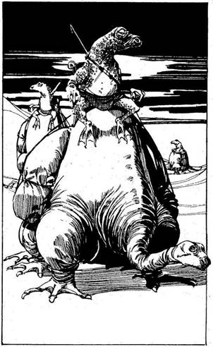
194.
Már másnap felbukkan egy karaván. Okkersárga, nyolclábú, hatalmas vadállatok cammognak felétek. A felmálházott állatókat legalább egy tucat Gyíkember kíséri, akik fanyeregben ülnek az állatok hátán, és gyanakodva szemlélik a környéket. Embereiddel együtt elrejtőzöl, hagyod, hogy a konvoj tűzközelbe kerüljön, és akkor támadsz! Amikor legénységed hangos csatakiáltással rájuk tör, a Gyíkemberek előhúzzák és felétek röpítik különböző hajítófegyvereiket. Majd egy méter hosszú nyilaik embereid közé csapódnak. Vonj le 2 pontot LEGÉNYSÉGED EREJÉBŐL! Végül kézitusára kerül sor.
Karaván ÜTÉS 8 ERŐ 6
Ha a legénységed legyőzi az őröket, nyersz 1 napot, amit jelölnöd kell a HAJÓNAPLÓDBAN. Lapozz a 329-re.

195.
A sisak, melyet nyilván hatalmas mágikus erő alkotott, megakadályozza a gonosz Agyevőket abban, hogy tested közelébe jussanak és kárt tegyenek benned. A többi tetemhez nem nyúlsz, továbbmész az alagútban. Lapozz a 240-re.
196.
Megcélozod a teremtmény fejét, és hatalmas ütéssel állon vágod - vonj le tőle 2 ÉLETERŐ pontot! A Küklopsz a fejét fogva feltápászkodik. Kissé magához tér, és újabb támadásra lendül - feléd rohan, hogy elkapjon. Mit teszel?
Beleöklözöl a szemébe? Lapozz a 156-ra.
Oldalra lépsz, és könyököddel a
karjába vágsz? Lapozz a 74-re.
Repülőrúgással a rekeszizmába
rúgsz? Lapozz a 60-ra.
197.
Felfelé hajózol a Holtak Folyóihoz. Dobj három kockával. Ha az eredmény kevesebb, mint LEGÉNYSÉGED EREJE, növeld utazási napjaidat 5-tel a HAJÓNAPLÓDBAN. Ha a kapott összeg ugyanannyi vagy több, mint LEGÉNYSÉGED EREJE, növeld 6-tal utazási napjaid számát a HAJÓNAPLÓDBAN. A legnagyobb folyó torkolatánál lehorgonyzol, majd legénységed zömével partra szállsz. Elindultok, hogy apróbb településeket vagy karavánokat támadjatok meg. Néhány óra múlva
meredek, köves hegyoldalhoz értek, melyet vízmosás okozta keskeny vágatok, kiszáradt patakmedrek szabdaltak össze. Ha át akarsz kelni ezen a hegyen - lapozz a 239-re, ha inkább átvizsgálsz néhány vágatot, abban a reményben, hogy elrejtett kincset találsz - lapozz a 226-ra.

198.
Dobj három kockával. Ha a kapott összeg kevesebb, mint LEGÉNYSÉGED EREJE - lapozz a 277-re. Ha a kapott összeg ugyanannyi vagy nagyobb, mint LEGÉNYSÉGED EREJE - lapozz a 341-re.
199.
Miután felmászol, kijutsz a szentély tetejére. Intesz embereidnek, akik kellő távolságban a lombok között lapítanak, majd körülnézel, hogy merre menj tovább. Az egyetlen lehetséges út: csak egy másik kéményen mászhatsz vissza - ezekből viszont több is van. Találomra kiválasztasz egyet, bemászol rajta, és egy kis előszobafélébe jutsz. Két ajtó nyílik innen. Melyiken mész ki? Ha a bal oldalin - lapozz a 264-re, ha a jobb oldalin - lapozz a 289-re.
200.
Lapozz az 50-re.
201.
A szarvánál fogva megragadod a koponyát, és teljes erővel kifelé kezded húzni. Tedd próbára a SZERENCSÉDET! Ha SZERENCSÉD van - lapozz a 232-re, ha nincs SZERENCSÉD - lapozz a 243-ra.

202.
A következő futamban tizenhat gyík vesz részt, de te Csupán négyet szúrsz ki, akik között a verseny eldőlhet: Omar Shazi, Sárkánygyík, Wazi Biin és el-Savak. Az egyikre 20 Arany Tallért vagy 2 rabszolgát kell tenned, te döntsd el, melyik megoldást választod. Döntsd el, melyik Batárra fogadsz, majd dobj egy kockával. Ha a kapott szám 1 vagy 2 - lapozz a 118-ra, ha a kapott szám 3 vagy 4, lapozz a 131-re, ha a kapott szám 5 vagy 6 - lapozz a 106-ra.

203.
Göbe kardoddal beledöfsz a macskába, de az nem sérül meg. Lapozz a 322-re.
204.
Dobj három kockával. Ha a kapott összeg kevesebb, mint LEGÉNYSÉGED EREJE, növeld utazási napjaid számát 3-mal a HAJÓNAPLÓDBAN. Ha a kapott összeg ugyanannyi vagy nagyobb, mint LEGÉNYSÉGED EREJE, növeld utazási napjaid számát 4-gyel, aztán lapozz a 27-re.
205.
A savlabda, melyet darabokra hasítottál kardoddal, remegve fekszik a földön, kifolyt „vére” mély barázdákat mart a burkolatba. Ha még nem tetted volna, benézhetsz az egyik hálófülkébe - lapozz a 218-ra, vagy menj tovább a másik ajtóhoz - lapozz a 248-ra.
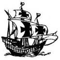
206.
Nekifutásból fölugrasz, és mellbe rúgod a Küklopszot - vonj le 2 pontot az ÉLETEREJÉBŐL. Apró nyögést hallat, majd hatalmas mancsával csapkodva hátratántorodik, aztán megragad és a magasba emel. Mit teszel?
Visszakézből a könyökébe
vágsz? Lapozz a 145-re.
A hónaljába rúgsz? Lapozz a 305-re.
A csuklójába harapsz? Lapozz a 276-ra.
207.
Visszatértek a Kish-deltából, és a Déli-tengeren hajóztok. Ha a Kazallu-szigetre mész élelemért - lapozz a 108-ra, ha messzire hajózol a kishi partoktól a Beltenger közepe felé - lapozz a 340-re.

208.
Amint a Kísértet megszabadul a gályától, észreveszed, hogy újabb hajóraj közeledik Marad felől. Ha még mindig át akarsz törni Marad hajóraján - lapozz a 153-ra, ha inkább egy kisebb shurrupaki gályával próbálsz szerencsét - lapozz a 127-re.
209.
Gyorsan bemenekülsz egy sziklamélyedés alá, s a hatalmas hólabda melletted gördül le a szakadék mélyére. Amikor leér, kimászol rejtekhelyedről, és a szakadékban lerohansz az ösvényen várakozó embereidhez, de közben lopva hátra-hátranézel, hogy lásd, nem gurítanak-e le a havasi vadállatok újabb hógörgeteget. Lapozz a 111-re.
210.
„Menj! - mondja a szellem. - Erre!” - mutat rá egy alacsony boltívre. Átmész alatta, és egy olyan magas csigalépcső lábánál találod magad, amelynek a vége belevész a fejed fölött a homályba. „Menj! - hallod ismét a szellem kérését. - Menj!” - Felmész a lépcsőn a szentélybe, majd egy ajtóhoz érsz. Lapozz a 289-re.
211.
Hajóddal Calah felé fordulsz. Dobj három kockával. Ha a kapott összeg kevesebb, mint LEGÉNYSÉGED EREJE, növeld utazásod napjainak számát 5-tel a HAJÓNAPLÓDBAN. Ha a kapott összeg ugyanannyi vagy több, mint LEGÉNYSÉGED EREJE, növeld 6-tal utazási napjaid számát a HAJÓNAPLÓDBAN. Calah nyüzsgő, koszos kikötőváros; rögtön szülővárosod, Tak után következik a szegénységet és a bűnözés mértékét tekintve. Ahogy megérkezel, sietve a kikötő játékbarlangjaiba mész. Melyik játékot választod?
A kiütős játékot? Lapozz a 48-ra.
A batárversenyt? Lapozz a 270-re.
A kockajátékot? Lapozz a 236-ra.

212.
A vihar elül, az égbolt kitisztul és a tenger vize elcsitul. „Kapitááány! - kiáltja az árbockosárból az egyik legényed, és dél felé mutat. - Egy kereskedőhajót látok; mintha, megsérült volna!” A Kísértettel megfordulsz, és odasiklasz a nagy hajóhoz,
amelynek eltörött az árboca és cafatokban lóg majd minden vitorlája. Ha átugrasz a kereskedőhajó fedélzetére és kifosztod - lapozz a 302-re, ha ráijesztesz a hajó kapitányára, és megparancsolod, hogy harc nélkül adja át az összes Aranyát - lapozz a 326-ra.
213.
Néhány legényeddel és összes vagyonoddal partra szállsz, és elindultok Nippur középső hegycsúcsa felé. A hegyre vezető út közepénél egy magas falhoz értek, mely szinte teljesen körülveszi a sziget belsejét. Elindulsz a fal mentén, és hamarosan egy átjáróhoz érsz, melynek mindkét oldalán egy-egy hatalmas szobor áll. A szobrok felemelt keze egy gerendát tart, amely keresztben zárja le az átjárót. A gerendáról tengerészek teste lóg le, lassan lengeti őket a szél. Bő, fekete köntösben összezsugorodott kis teremtmény lép elétek, és így szól: „Tehát eljöttetek, hogy megnézzétek a hegyet! Egyikőtöknek meg kell küzdenie az őrrel, ha valóban meg akarjátok nézni a hegyet!” Vihogva, várakozó pillantással néz rátok. Ha vállaljátok, hogy megküzdötök az „őrrel” - lapozz a 298-ra, ha nem veszitek figyelembe ezt a fenyegetést, hanem egyenesen átmentek a nyíláson - lapozz a 389-re.
214.
Az ajtón benyitva egy kis szentélybe jutsz. Középen, egy magas emelvény tetején fekszik a nagy harcos faszobra. Az emelvényre a következő szavakat írták:
AXILLON
A SZENT HARCOS
A SÁRKÁNYOK LEGYŐZŐJE
A szobor egyik vállán ébenfa íj lóg. Elvennéd, de észreveszed, hogy a nyílvesszővel ellátott fegyver bármelyik pillanatban működésbe léphet. Nincs időd rá, hogy közelebbről is megvizsgáld, mert a hajón elharapózó tűz egyre inkább fenyeget. Ideje, hogy elhagyd a terepet. Lapozz a 291-re.

215.
A lovassereg fényes, fellobogózott kastélyhoz vezet, melyet száz meg száz fegyveres véd. A kastély udvarán már a tetőfokára hágott a dáridó. Embereidet hátrahagyod, hogy hódolhassanak a bor és a vigadozás örömeinek, te pedig továbbmész kísérőiddel a díszterembe, ahol csatlósai és udvaroncai társaságában ül a Négy Szél Királya. Barátságosan fogad, és trónja mellé ültet. A díszterem
ünneplőkkel van tele, ezért elég hangosan az időjárásról és az utadról kezd faggatni. Ha elmondod az igazat a királynak, utazásod céljáról - lapozz a 260-ra, ha nem - lapozz a 312-re.
216.
Amikor belépsz a terembe, hatalmas lángok csapnak fel a tűzből a mennyezetig, és egy nyögés zúg végig a szobán. „Várj - lihegi egy hang -‚ várj!” Belenézel a lángokba, ahol egy sovány, gyíkhoz hasonló lényt pillantasz meg, amely rövid szigonnyal van felfegyverezve, és odaint magához. Csaknem emberi szeme hunyorog, amikor megkérdezi: „Hol találod azt, ami a fönt és a lent között van?” Ha tudod a választ, lapozz a 308-ra. Ha nem, lapozz a 317-re.

217.
Eltávolodsz a jéghegytől, és délre hajózol. Élelemre és vízre van szükségetek ahhoz, hogy eljussatok Nippurig. Az élelmet és az italt beszerezhetitek a Kazallu-szigeten - lapozz a 108-ra, vagy a Három Nővér-szigeten - lapozz a 167-re.
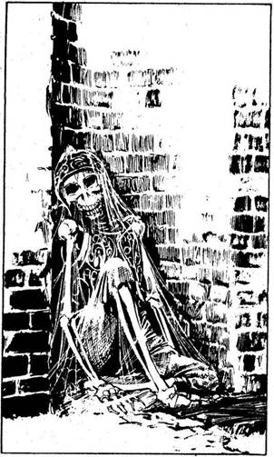
218.
A kis hálófülke, amelybe benézel, tele van pókhálóval. Egyik sarkában ősrégi emberi csontvázat veszel észre. Foszlott rongyok takarják, és hajdan büszke páncél maradványai. Most rozzantan a kőfalnak támaszkodik. Egyik kezén sok aranygyűrűt veszel észre. Ha elveszed a gyűrűket - lapozz a 11-re, ha inkább elhagyod a hálófülkét és a csarnok túlsó végében lévő ajtóhoz mész - lapozz a 248-ra, vagy ha még nem tetted volna meg, vizsgáid meg a tojás alakú követ - lapozz a 190-re.

219.
Ha még nem tetted volna, elhajózhatsz a „rendezett” szigetre - lapozz a 386-ra, vagy a pálmákkal borított szigetre - lapozz a 354-re.
220.
Amikor embereiddel felmászol a hegyre, a velőtrázó ordítást hallató havasi vadállatok megfordulnak, és eltűnnek a kopár vidék magasabb régióiban. Egy ideig még üldözitek e veszedelmes teremtményeket, de egy újabb hatalmas hógolyó gurul embereid közé, és sokat összelapít közülük. Vonj le
2 pontot LEGÉNYSÉGED EREJÉBŐL. A teremtmények újra eltűnnek a hóban a hegy magasabb részein. Úgy döntesz, hogy visszamentek az erődítmény mögött lévő ösvényhez. Tedd próbára a SZERENCSÉDET! Ha SZERENCSÉD van - lapozz a 244-re. Ha nincs SZERENCSÉD - lapozz a 373-ra.

221.
A jeges parthoz evezel és kikötsz. A gálya körülbelül száz méterre, egy jégvölgy mélyén vesztegel. Ha elindulsz a jégvölgyben a gálya felé - lapozz a 273-ra, ha a jéghegy oldalában mászol föl és úgy közelíted meg a gályát - lapozz a 288-ra.

222.
Kihúzzátok a Hidra tetemét a vízből, felvágod a hasát, és tengerészek, ocsmány cápák, mindenféle tengeri élőlénynek darabjai fordulnak ki belőle. A vadállat nyelőcsövéből 50 Arany Tallér is előkerül, amit hozzáadsz Zsákmányodhoz. Minden egyebet visszaszórsz a tengerbe. Ha tovább is a Beltengeren fogsz cirkálni a Trysta-zátonyok felé igyekezve - lapozz a 66-ra, ha irányt változtatsz és elindulsz a nyugati partok felé - lapozz a 157-re, ha a Keleti-partvidék felé tartasz, hogy egy kis szárazföldi portyázásra menj - lapozz a 10-re.

223.
Dobj három kockával. Fia a kapott összeg kevesebb, mint LEGÉNYSÉGED EREJE, növeld 5-tel utazási napjaid számát. Ha a kapott összeg ugyanannyi vagy nagyobb, mint LEGÉNYSÉGED EREJE, növeld 6-tal utazási napjaid számát a HAJÓNAPLÓDBAN. Kish városa felé közeledve erősen felfegyverzett, de lassú hadihajókat vesztek észre a horizonton, és rögtön rájössz, hogy nagy bolondság lenne, ha el akarnád foglalni a várost. Inkább a Széles és hatalmas sziklafallal körülvett félsziget, a Kish-földszoros felé kormányozod a hajódat. Ezek a sziklák megvédik a támadástól a mögöttük levő dús földeket, de egy olyan kis csapat, minta te legénységed, talán képes rá, hogy
ezen a sziklafalon átmászva villámgyors támadást intézzen a földek ellen. A földszoroshoz érve lehorgonyzol, és legénységeddel együtt elindulsz a hosszú és veszélyes úton a kőszirt teteje felé. Dobj két kockával. Ha a kapott összeg kevesebb, mint az ÜGYESSÉGED pontszáma, lapozz a 263-ra. Ha a kapott összeg ugyanannyi vagy nagyobb, mint ÜGYESSÉGED pontszáma, lapozz a 242-re.
224.
Kihasználod, hogy a Küklopsz elterülve fekszik előtted: odalépsz hozzá, és teljes erőből belerúgsz az ágyékába, de közben a bokád csúnyán kifordul - vesztesz 2 ÉLETERŐ pontot. A szörny szinte meg sem érzi a rúgást; felemelkedik, és ismét támadásra készen rohan feléd, hogy elkapjon. Mit teszel?
Repülőrúgással fejbe rúgod? Lapozz a 290-re.
Beleöklözöl a szemébe? Lapozz a 156-ra.
Oldalra lépsz, és visszakézből a
karjába vágsz? Lapozz a 74-re.

225.
Szemben állsz a döbbent apáttal és nem kevésbé döbbent szerzetesével. Kardot rántva rájuk rontasz. A szerzetest leszúrod, még mielőtt védekezhetne, és az apáttal csapsz össze.
Apát ÜGYESSÉG 10 ÉLETERŐ 8
Ha legyőzöd - lapozz a 390-re.

226.
A vágatok tekervényesek és hosszúak. Néhány órán át kutattok közöttük, mielőtt nyugovóra térnétek. Ennek ellenére amikor kalózaid a szájukhoz emelik a kulacsot, hogy igyanak, a meredek emelkedő egyik oldala mögül vad ordítás hangzik fel, amelyet a kövön csattanó bakancsos léptek döngése kísér. Rengeteg dühös sivatagi Goblin lepi el a vágat gerincét. E teremtmények orrlyuka széles és szőrös, fülük, akár a denevéré, kardjuk fényesen csillog. A Goblinok rárohannak embereidre. Vad csata kezdődik.
Goblin horda ÜTÉS 9 ERŐ 12
Ha legénységed legyőzi őket - lapozz a 147-re.

227.
Kinyitod az ajtót, és egy kis szobába jutsz, melyben egyetlen Sárkánygyík tartózkodik. Az undorító kis lény háttal ül, de amikor a szobába lépsz, lassan megfordul. Tedd próbára a SZERENCSÉDET! Ha SZERENCSÉD van - lapozz a 278-ra. Ha nincs SZERENCSÉD - lapozz a 247-re.

228.
A szobrot könnyen elmozdítod a talapzatáról. Bár nehéz, mégsem okoz különösebb gondot, hogy levidd a lépcsőn és átadd várakozó embereidnek. Visszatérsz Assurba, ahol a bálványt 105 Arany Tallérért eladod. Hagyod, hogy a rubint új tulajdonosa találja meg. Visszatérsz a Kísértetre. Ha délnek hajózol a nyugati tengerpart mentén - lapozz a 45-re, ha délkelet felé hajózol a Beltengerre, kereskedőhajók után kutatva - lapozz a 318-ra.

229.
Átkutatod a hozzád legközelebb fekvő tetemet, és elborzadsz, amikor annak mellkasából dagadt férgek tömege mászik be a karodba. Vesztesz 2 ÉLETERŐ pontot. Felismered őket: ezek Agyevő paraziták, amelyek átrágják magukat áldozatuk testén és csontján, hogy eljussanak az agyhoz. Ha nálad van Ut-Napishtim Sisakja - lapozz a 195-re, ha nincs - lapozz a 174-re.

230.
Vonakodva bár, de legényeid megnyugszanak, és hajlandók folytatni az utat. A part egyik kisebb öblében egy zátonyra futott gályát találtok, amelynek a törzsét az idő és a víz jócskán megtépázta. Átkutatjátok a roncsot, és 16 Arany Tallért találtok részben a roncsok között, részben a hajó körül a homokban - jegyezd fel a frissen szerzett Aranyat a Zsákmány rovatba. Ha a szárazföld belseje felé akarsz menni - lapozz a 42-re, ha visszamész a Kísértetre és - ha még nem tetted volna - elhajózol a „rendezett” szigetre - lapozz a 386-ra, ha a pálmafákkal borított szigetre mész - lapozz a 354-re.
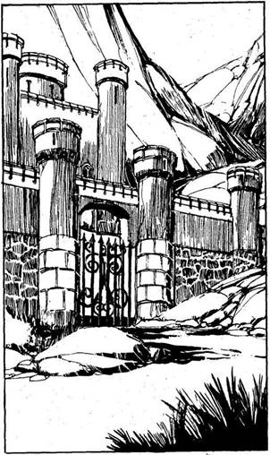
231.
Néhány kilométerre az erődítménytől lehorgonyzol az öbölben, és legénységeddel elindulsz a part felé. Szinte mindegyikőtöknél csáklya vagy létra van. Amikor odaértek a várhoz, látod, hogy falai legalább negyven méter magasak, a főkapu kemény vasból készült, és kétoldalt egy-egy bástya védi. Ha a falakat megmászva támadsz - lapozz a 367-re, ha a főkapun át próbálsz meg bejutni - lapozz a 303-ra.

232.
A szarv letörik, a koponya pedig mélyen beágyazva a falban marad. Az Egyszarvú szarva mindig szerencsét hoz, de itt, a tenger alatt ez kétszeresen igaz. Nyersz 2 SZERENCSE pontot. Tovább folytatod az utadat a folyosón. Lapozz a 168-ra.

233.
Lemész a shurrupaki kikötő matrózkocsmáihoz. Betérsz az egyikbe, és érzed, hogy valaki jó erősen a válladra csap. Megfordulsz, és azonnal felismered egyik legnagyobb régi ellenséged, Shamit Gawel Nestafát. Ököllel belevág az arcodba, és elterülsz a földön. „Te kutya! - ordítja, és kardot ránt. - Miattad vesztettem el a hajómat, amit saját kezűleg loptam!” Neked ugrik és rád támad.
Shamit Gawel
Nestafa ÜGYESSÉG 9 ÉLETERŐ 6
Ha legyőzöd, lapozz a 84-re.

234.
Legényeid lemészárolják a tengerészeket, de tíz embert megtartanak, hogy később Shurrupak rabszolgapiacán eladhassák őket. Az egyre növekvő
dagály leemeli a Kísértetet a sziklákról, és elhajózhattok a mélyebb vizek felé. Ha a zátonyok között indultok el a Trysta-sziget felé - lapozz a 164-re, ha délnyugat felé, Kishbe mentek - lapozz a 223-ra, ha az Ölyv-szigetre mentek - lapozz a 204-re, ha délkeletnek mentek a Goth-csatorna felé - lapozz a 191-re.

235.
Megfordulsz, és éles rúgást mérsz a Küklopsz könyökére. Valószínűleg elrepedt a csontja. Ordítva a földre ejt - vonj le 2 pontot az ÉLETEREJÉBŐL. Talpra állsz, és döbbent ellenfeled felé fordulsz. Mit teszel?
Behúzol egyet a vállára? Lapozz a 91-re.
Könyököddel belevágsz a
bordáiba? Lapozz a 29-re.
Repülőrúgással a mellébe
rúgsz? Lapozz a 206-ra.

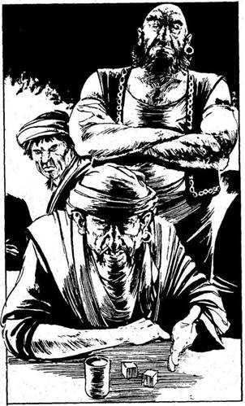
236.
A kockavető barlangban a sors szerencsétlenségedre egy régi hiteleződdel hoz Össze, akit Jiamil el-Fazouknak hívnak. Több ezer Arany Tallérral tartozol neki - ezt is szerencsejátékon vesztetted el. „Nocsak, nocsak - mondja el-Fazouk, amint megpillant -‚ fogadni merek, hogy te vagy az Abdul ellenfele. Mondta is, hogy erre tekeregsz!” Ragaszkodik hozzá, hogy játssz vele, mégpedig az az összeg a tét, amivel tartozol neki. „Dobj ezzel a két kockával! - mondja. - Ha 7-et dobsz, megtarthatod a hajódat, ha nem, úgy az az enyém lesz! Ha visszautasítod az ajánlatomat és nem játszol velem, akkor az embereim ölnek meg.“ Számos koszos kalóz gyűlik el-Fazouk köré, hogy jelenlétükkel megerősítsék kijelentését. Fogod a két kockát, és dobsz. Ha a kapott összeg 7 - lapozz a 330-ra; ha nem - lapozz a 144-re.

237.
A Kísértetet megcsáklyázzák, amint elhalad a hatalmas hadihajó mellett. Amikor közelebb húznak benneteket a hajójukhoz, a hajó korlátjánál egy ismerősnek látszó alakot veszel észre a tengerészek között. „Hé, te ott! - kiált, és rád mutat. -
Ismerlek téged! Ne találkoztunk mi már egy kiütős versenyen?” Megpróbálsz visszaemlékezni az arcára - és eszedbe jut, hogy ő Ali Mitok sen el-Shazar, Shurrupak egyik gazdag nemesura. „Igen - mondod -‚ jól elbántál velem! Hat fogamat verted ki!“ - Nevetve nyugtázza, hogy ilyen jól emlékszel rá, és jelt ad az embereinek, hogy álljanak le, ne csáklyázzák tovább a Kísértetet. „Nem tudom, hogy kerültél ide - mondja, miközben néhány száz méterrel hátrább küldi embereit -‚ de a régi időkre való tekintettel igen alacsony váltságdíjjal, 200 Arany Tallérral is megelégszem!” Ha akarsz és tudsz is ennyit fizetni - lapozz a 71-re, ha nem akarsz vagy nem tudsz fizetni - lapozz a 96-ra.

238.
Felhúzod a vitorlákat és felszeded a horgonyt. Hajóddal elindulsz Shurrupak kikötőjéből a Déli-tengerre. Ha a part mentén hajózol a Három Nővér-sziget felé - lapozz a 167-re, ha a nyílt tenger felé veszed az irányt és Nippurba tartasz - lapozz a 378-ra.

239.
Amint átmászol e lepusztult hegyek szétmorzsolt kövein, egyszer csak észreveszed egy hatalmas építmény sarokkövét. Legénységed tagjaival kiásatod körülötte a földet meg a sziklákat, és egy ősrégi kőkaput találtok, amely egy betemetett kripta, templom vagy palota bejárata lehetett. Miután elhordjátok a kaput elzáró köveket, keskeny, hosszú alagút tárul elétek, mely éles szögben hatol be a hegy mélyébe. Ha a legjobb embereiddel elindulsz lefelé ezen az alagúton - lapozz a 158-ra, ha ismét eltorlaszolod a kövekkel az alagút bejáratát és folytatod az utadat a hegyen át - lapozz a 316-ra.

240.
Váratlanul egy hatalmas lény ragadja meg a nyakadat, és fojtogatni kezd. Lesújtasz a kardoddal, erre a vadállat felvisít és elereszt. Amikor megfordulsz, hogy megnézd, nem látsz mást, csak az alagutat. Ekkor a teremtmény újra támad, láthatatlan öklével az arcodba vág. A csata idejére vonj le magadtól 2 ÜGYESSÉG pontot!
Láthatatlan Támadó ÜGYESSÉG 7 ÉLETERŐ 6
Ha legyőzöd - lapozz a 381-re.
241.
Legénységed néhány tagjának sikerül átvágnia a hadihajó árbocának köteleit, a többiek pedig megszabadítják a Kísértetet a csáklyáktól, s közben visszaverik a matrózok utolsó támadását. Megfordulsz a Kísértettel, a szél belekap a vitorlákba, és máris tovasiklotok a kishi hajót hátrahagyva, amelyen teljes zűrzavar lesz úrrá. Az Assur felé vezető utatokat elvágták, így délkelet felé, fordultok a Beltengeren. Lapozz a 318-ra.

242.
Az ösvény, amelyen felvezeted az embereidet, elég veszélyes. Számos legényed szerencsétlenül jár, a mélybe zuhan. Vesztesz 1 LEGÉNYSÉGI ERŐ pontot. Lapozz a 304-re.
243.
A koponya kiesik a falból, és hatalmas nyílás tárul eléd az alagútban. Ekkor kövek meg csontdarabok hullanak rád, és az átjáró beszakad. Több száz méterre a víz alatt, a tenger fenekén leled halálodat. Kalandod itt véget ér.

244.
Valamennyien szerencsésen visszaértek az ösvényhez. Lapozz a 111-re.
245.
Rövid kérdezősködés és alkudozás után találsz egy rabszolga-kereskedőt, aki hajlandó eladni a rabszolgáidat. Tedd próbára a SZERENCSÉDET! Ha SZERENCSÉD van - lapozz a 137-re. Ha nincs SZERENCSÉD - lapozz a 189-re.
246.
Dobj három kockával. Ha a kapott összeg kevesebb, mint LEGÉNYSÉGED EREJE - növeld utazási napjaid számát 5-tel a HAJÓNAPLÓDBAN. Ha a kapott összeg ugyanannyi vagy nagyobb, mint LEGÉNYSÉGED EREJE - 6-tal növeld utazásod napjainak a számát a HAJÓNAPLÓDBAN. Ha a HAJÓNAPLÓDBAN lévő szám páros - lapozz a 109-re, ha páratlan - lapozz a 178-ra.
247.
Farkasszemet nézel a Sárkánygyíkkal. A szeme összeszűkül és kővé változtat! Kalandod itt véget ér.
248.
Az ajtó masszív kőből van; közepén díszesen faragott kőtáblát látsz. A tábla aljában lévő feliratot olyan régies nyelven írták, hogy gondot okoz neked a szöveg megfejtése. Szerinted azt jelenti: „Ahhoz, hogy üdvözöld Ut-Napishtimet, neked kell benyomni (kihúzni?) a kilincset az ajtóba (az ajtóból).” Megfogod a faragott táblát. Ha befelé nyomod az ajtóba - lapozz a 258-ra, ha kifelé húzod - lapozz a 281-re.

249.
Amikor kinyílik az ajtó, szinte áthatolhatatlan sötétség tárul fel mögötte, de az alig kivehető körvonalak között egy hatalmas szempárt látsz, amely mohón bámul rád. Visszahőkölsz, amikor a hatalmas vadállat bepréseli magát az ajtónyíláson át a verembe. Szarvak meredeznek széles fejéből, a hátából és a farkából. Morog. Ha megtámadod ezt a teremtményt - lapozz a 399-re, ha más megoldást találsz ki - lapozz a 93-ra.
250.
Lapozz az 50-re.
251.
Rúgásod elég rossz szögből érkezik, így csupán súrolja a szörny vállát. Rá se hederít a támadásodra, megforgat a levegőben, és odavág a barlang egyik falához. Szerencsésen esel, így elkerülöd a komoly sérülést - vesztesz 1 ÉLETERŐ pontot. Négykézláb mászva a Küklopsz háta mögé kerülsz. Mit teszel?
Ököllel belevágsz a térd-
hajlatába? Lapozz a 115-re.
Ököllel belevágsz a veséjébe? Lapozz a 347-re.
Rávágsz a gerincére? Lapozz a 132-re.
252.
A kereskedőhajó legénysége és utasai elszörnyedve nézik, hogy a Varázsló mit tesz veled. Odaugranak hozzá, és lefogják. Kezét vastag kötéllel kötözik össze, és a hajó fedélzetéről a tengerbe taszítják, hogy a cápák martaléka legyen. A kapitány felmászik az árboc kötélzetére, és lekiált neked: „- Bocsáss meg, amiért ilyen méltatlan személyt vettünk fel a fedélzetre. Kegyes bocsánatodért esedezünk!” Legénységének tagjai és az utasok lelkesen helyeselnek. Átugrasz a kereskedőhajó fedélzetére, 120 Arany Tallért zsákmányolsz, és csupán két rabszolgát viszel magaddal, mert ilyen kedvesek voltak hozzád. Jelöld szerzeményeidet a Kalandlap Zsákmány rovatában. Mielőtt visszatérnél a Kísértet fedélzetére, engedélyt adsz a kereskedőknek a továbbhajózásra. Ha még mindig a Beltengeren akarsz hajózni a Trysta-zátonyok felé - lapozz a 66-ra, ha irányt változtatva a nyugati partok felé akarsz menni - lapozz a 157-re, ha a Keleti-partvidék felé akarsz menni, hogy a szárazföldön portyázz - lapozz a 10-re.
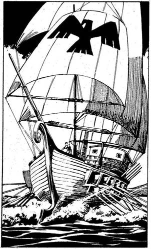
253.
A piacon sokféle ember megfordul, így aztán könnyen találsz köztük olyat, akit felvehetsz. Tedd próbára a SZERENCSÉDET! Ha SZERENCSÉD van - lapozz a 62-re. Ha nincs SZERENCSÉD - lapozz a 28-ra.
254.
Az ajtón benyitva sebtében elhagyott hálószobába jutsz. Ruhák, üres ládák és kegytárgyak hevernek szanaszét a földön és a baldachinos ágyon. Gyorsan átvizsgálod a szobát, és egy kis bőröndöt találsz, amelyet a szoba menekülő lakója felejtett ott, 98 Arany Tallér van benne. Hónod alá csapod a ládát, és távozol a szobából. Lapozz a 291-re.

255.
A vihar elül, az égbolt kitisztul, a tenger megnyugszik. Miközben leszerelitek a viharvitorlákat és felkészítitek a hajót a nyugodt hajózásra, a távolban észreveszed egy észak felől közeledő kishi hadihajó vitorláit és harci zászlóját. Csak úgy menekülhetsz el, ha a Trysta-zátonyok felé hajózol, melyek nem messze innen, délre találhatók. Ha erre mész - lapozz a 119-re, ha itt maradsz és harcba szállsz a hadihajóval - lapozz a 107-re.
256.
Görbe kardoddal beledöfsz a fehér macskába, de nem ejtesz rajta sebet. Lapozz a 322-re.
257.
Nyugat felé hajózva áthaladsz a Trysta-sziget északi és a Vulkánok szigete déli csücske között. Dobi három kockával! Ha a kapott összeg kevesebb, mint LEGÉNYSÉGED EREJE - növeld utazási napjaid számát 3-mal a HAJÓNAPLÓDBAN. Ha a kapott összeg ugyanannyi vagy több, mint LEGÉNYSÉGED EREJE - növeld utazási napjaid számát 4-gyel a HAJÓNAPLÓDBAN. Ha a HAJÓNAPLÓDBAN lévő szám páros - lapozz a 109-re, ha ez a szám páratlan - lapozz a 27-re.
258.
Miközben befelé nyomod a táblát, az fülsiketítő robajjal felrobban. Dobj két kockával, és vond le a kapott összeget ÉLETERŐDBŐL. Ha túlélted a robbanást - lapozz a 281-re.

259.
„Ez valóban jó hír - mondja a Szellem. - Hálásan köszönöm neked. Megáldalak azzal a kevés erőmmel, ami a hosszú évszázadok után még
megmaradt.” Odalép hozzád, és jéghideg, de súlytalan kezét a válladra teszi. Mostantól ha bármikor három kockával dobsz a LEGÉNYSÉGED EREJÉÉRT, vonj le 2-t az összegből. Lapozz a 210-re.

260.
„Ó, igen - szól a király. - Abdul, a Mészáros, meg az emberei. Jól emlékszem rájuk, talán három napja jártak nálam. Elég faragatlan társaság, de gyors észjárásúak!” A Király odainti egyik szolgáját, súg valamit a fülébe és elküldi. Amikor a szolga visszatér, két nagy zsákot cipel. „Ezekben a zsákokban van az északi és a déli szél - mondja a király. - Mivel a keleti és a nyugati szelet odaadtam Abdulnak, azt hiszem, úgy tisztességes, ha ezt a kettőt neked adom. Ha Nippurba akarsz menni, nyisd ki az északi szelet tartalmazó zsákot, ha meg vissza akarsz jönni, nyisd ki a másikat.” A lakoma végén összeszeded legényeidet, hogy visszamenj velük a Kísértetre. Legényeid rettentően kíváncsiak, hogy mit rejtenek a zsákok, és nem hiszik el neked, hogy azokban csak „levegő” van. Meg vannak győződve róla, hogy a király kincsekkel tömte tele a zsákokat, te meg egyszerűen csak
kapzsi vagy. „Oszd meg velünk a kincset - mondják-, vagy nem megyünk tovább veled! Itt maradunk!” Most még nem tudod kinyitni a zsákokat. Mit mondasz nekik? Ha 100 Aranyat adsz legényeidnek, hogy nyugton maradjanak - lapozz a 368-ra, ha egyszerűen közlöd velük, hogy ostobák, amiért nem hisznek neked - lapozz a 396-ra.
261.
Már jó ideje biztonságban hajózol, amikor az egyik hadihajóról váratlanul rátok lőnek, és a lövedék eltalálja az árbocodat. Fővitorlád fehér lepedőként terül szét a fedélzeten. Dobj három kockával! Ha a kapott összeg kevesebb, mint LEGÉNYSÉGED EREJE - lapozz a 83-ra. Ha a kapott összeg ugyanannyi vagy több, mint LEGÉNYSÉGED EREJE - lapozz az 51-re.
262.
Amikor visszamentek a Kísértetre, a kikötő parancsnokától megtudjátok, hogy az Assurt átszelő folyó mentén, kissé följebb egy igen gazdag templom áll, amelyben a Holtak Papjai laknak. Ha elindulsz, hogy elkobozd a szentély kincseit - lapozz a 335-re, ha ügyet sem vetsz erre az információra, és inkább Assurba mész, hogy ott újabb embereket vegyél fel a hajódra - lapozz a 185-re, ha a Beltengeren akarsz portyázni kereskedőhajókra vadászva - lapozz a 318-ra.
263.
Felértek a kőszirt tetejére, és szétnéztek a Kishi-földszoros széles fennsíkjain, amelyeken elszórtan szántóföldeket, erdőket és településeket is láttok. Néhány kilométerrel arrébb egy kisváros tűnik fel. Ha ezt egy közeli erdőn át közelítitek meg, lapozz a 353-ra. Ha inkább óvatosan átvágtok a kőszirt és a város között elhelyezkedő kukoricatáblákon - lapozz a 328-ra.
264.
Az ajtó egy kis szobába nyílik. Magas falai belevesznek a fölötted izzó, gomolygó masszába, melynek kisugárzása melegséggel és jó érzéssel tölt el. Nyersz 4 ÉLETERŐ és 2 SZERENCSE pontot. Ebből a szobából nincs másik kijárat, így visszamész a kéménybe, és megpróbálkozol a másik ajtóval. Lapozz a 289-re.
265.
Minél magasabbra kapaszkodsz, a párkány annál labilisabbá és keskenyebbé válik. Egy kő hirtelen kizuhan a helyéből, te meg lezuhansz a barlang sötét mélyébe. Tedd próbára a SZERENCSÉDET! Ha SZERENCSÉD van, lapozz a 365-re, ha nincs SZERENCSÉD - lapozz a 334-re.
266.
Nekifutásból jó erősen belerúgsz a szörny bordáiba: minden bizonnyal össze is törsz néhányat, de a te lábad is megsérül - vonj le mindkettőtöktől 2-2 ÉLETERŐ pontot. A Küklopsz nagy nehezen talpra áll, majd újra támad: megpróbál megragadni. Mit teszel?
Repülőrúgással a lábába
rúgsz? Lapozz a 319-re.
Repülőrúgással a rekeszizmába
rúgsz? Lapozz a 60-ra.
Beleöklözöl a szemébe? Lapozz a 156-ra.

267.
Miután megölted a vadállatot, tovább folytatod az utadat, és magad mögött hagyod a fehéren tajtékzó vizet meg a hadihajókat. Sikeresen túljutottál a zátonyokon, és máris előtted van Trysta szigete. Ha a sziget felé mész tovább - lapozz a 152-re, ha délnyugat felé mész Kishbe - lapozz a 223-ra, ha az Ölyvre - lapozz a 27-re, ha délkelet felé mész a Goth-csatorna irányába - lapozz a 191-re.
268.
Legénységed néhány tagja elindul a legközelebbi part felé a hajó egyik csónakjával, és eltűnik a hajnali ködben. Néhány perccel később kiáltás hallatszik, majd lövések dördülnek, és csatazaj tölti meg a levegőt. Tűzjelzést adnak le a legközelebbi bástyáról; kürtök harsognak. Egy perc múlva elül a csatazaj, és egyetlen súlyosan sebesült legényed visszaevez a Kísértethez. „Védekeznek, kapitány!” - nyögi ki, és összeesik. Vonj le 2 pontot LEGÉNYSÉGED EREJÉBŐL. Nincs más választásod, vissza kell fordulnod a folyón, és vissza kell menned a tengerre - lapozz a 207-re.
269.
Keresel egy üres helyet a bazárban, és az arra sétálgató, árut mustrálgató reményteljes vevőid előtt kiállítod foglyaidat. Dobj egy kockával! Ha a kapott szám 1 vagy 2- lapozz a 94-re. Ha a kapott szám 3 vagy 4 - lapozz a 72-re. Ha a kapott szám 5 vagy 6 - lapozz az 59-re.

270.
A Batárversenyeket a rakpart és a város között húzódó homokos részen tartják. A versenypálya egyik végében hatalmas versenygyíkokat sorakoztatnak fel, melyek aztán vágtázva rohannak a túlvégen cölöphöz kötözött Goblin felé. Az a Batár a győztes, amelyik elsőként mélyeszti bele a fogait a szerencsétlen teremtménybe. Húsz indulóból a következő három közül választhatsz egyet: Fazima, Awkspeed és el-Savak. Tetszés szerint 20 Arany Tallért, vagy 2 rabszolgát kell tenned az egyikre. Válaszd ki, melyik Batárra fogadsz, majd dobj egy kockával. Ha a kapott szám 1 vagy 2 - lapozz a 321-re. Ha a kapott szám 3 vagy 4 - lapozz a 348-ra. Ha a kapott szám 5 vagy 6 - lapozz a 362-re.
271.
Alig tettél meg egy rövid útszakaszt, amikor a tengerből egy Óriás Homár bukkan elő, és rohamléptekkel indul el a parton, hogy a jó falat reményében megragadja egyik emberedet. Körülbelül hat méter hosszú testét vastag páncél fedi, és másfél méteres ollók fegyverként használja. Félelmetes ellenség. Legénységed védekezik.
Óriás Homár ÜTÉS 9 ERŐ 8
Ha a legényeid győznek - lapozz a 116-ra.

272.
Felvontad a vitorlákat. Merre mész? Ha a Beltenger vizein akarsz portyázni gazdag kereskedőhajókra vadászva - lapozz a 318-ra, ha a Keleti-partvidék felé hajózol déli irányban - lapozz a 10-re.
273.
Fölfelé mész a völgy közepén. Már egészen közel jársz a gályához, amikor beszakad a lábad alatt a jég, és egy mély verembe zuhansz. Dobi két kockával, és a kapott összeget vond le ÉLETERŐ pontjaidból! Ha még mindig életben vagy, kimászol a veremből, és óvatos léptekkel továbbmész a gálya felé. Lapozz a 288-ra.
274.
Miután a papokat legyőztétek, a lelkesedést kissé eltúlzó legénységed felgyújtja a vár templomát, így a lángok martaléka lesz csaknem minden kincs, amit győztesként zsákmányolhattatok volna. Mégis körülnézel, és 85 Arany Tallért, valamint 10 életben maradt papot találsz, akiket majd jó pénzért eladsz a rabszolgapiacon. (Jegyezd fel ezeket a Zsákmány rovatba.) Győztesen térsz vissza a Kísértet fedélzetére, és elhajózol Enraki szigetéről - lapozz a 123-ra.
275.
A két hadihajó hatalmas evezőcsapásokkal be akarja fogni a Kísértetet, de ravasz manőverednek köszönhetően egy kis meglepetést okozol nekik. Tedd próbára a SZERENCSÉDET! Ha SZERENCSÉD van - lapozz a 313-ra. Ha nincs SZERENCSÉD - lapozz a 382-re.
276.
Kissé felemelkedve fogaidat belemélyeszted a Küklopsz vaskos, hámló csuklójába, de beletörik a zápfogad. A szörny meglóbál a levegőben, majd a földhöz vág, és jó nagyot rúg beléd - vesztesz 2 ÉLETERŐ pontot. A szörny azt hiszi, hogy elvesztetted az eszméletedet, ezért egy pillanatra hátat fordít neked. Ekkor nagy nehezen lábra állsz. Mit teszel?
Könyököddel belevágsz a térd-
hajlatába? Lapozz a 46-ra.
Belebokszolsz a lábába? Lapozz a 115-re.
Repülőrúgással a háta közepébe
rúgsz? Lapozz a 384-re.
277.
A Kísértet baleset nélkül evickél át a rendkívül keskeny csatornán, és végül is maga mögött hagyja a fehéren tajtékzó hullámokat és a hadihajókat. Sikeresen kikerülted a zátonyokat, és feltűnik előtted a Trysta-sziget. Ha a sziget felé mész - lapozz a 152-re, ha délnyugatra indulsz Kishbe - lapozz a 223-ra, ha az Ölyvre - lapozz a 27-re, ha délkeletre, a Goth-csatorna felé - lapozz a 191-re.
278.
Az a tudat, hogy ez egy Sárkánygyík, melynek egyetlen pillantása kővé dermeszt - pánikszerű menekülésre késztet, és kirohansz a szobából. Inkább a díszterembe mész. Lapozz a 216-ra.
279.
Ha eddig nem tetted volna, most felvehetsz még néhány kalózt a hajódra - lapozz a 371-re, ha ezt nem akarod, menj vissza a Kísértetre, és hagyd el Shurrupakot - lapozz a 238-ra.
280.
Amikor kalózaid lefegyverzik az őröket, a sétahajó legénysége és a vendégek a tengerbe vetik magukat, és úszni kezdenek, mert inkább vállalják, hogy a krokodilok végezzenek velük, semmint hogy a te embereid kezébe kerüljenek. Sűrű, sötét füstfelhő gomolyog a gazdagon díszített hajó belsejéből - menekülő tulajdonosai gyújtották fel. Átugrasz a fedélzetre, hogy megmenthess valamit a kincsből, mielőtt az egész hajó lángba borulna. Amikor lerohansz a hajó füstölgő belsejébe, két zárt ajtót pillantasz meg. Ha a bal oldali ajtót próbálod meg kinyitni - lapozz a 214-re. Ha a jobb oldalit - lapozz a 254-re.
281.
Lassan kinyílik az ajtó, és egy nagy kriptában találod magadat. Egyetlenegy hatalmas szarkofág áll benne. A teteje szélén körös-körül a kővetkező felirat ismétlődik:
UT-NAPISHTIM, A BÜNTETÉS VIZÉNEK
ŐRZŐJE
Ha kinyitod a szarkofág tetejét - lapozz a 292-re, ha nem nyúlsz hozzá - lapozz a 358-ra.
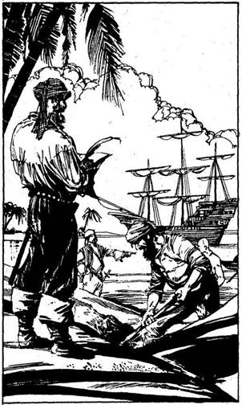
282.
A pálmák között áthaladva váratlan látvány tárul elétek. A sziget közepén egy nagy lagúnát találtok, amelyet a sziget túlsó feléről egy keskeny csatornán lehet megközelíteni. A lagúna közepén lehorgonyozva egy kis kalózhajót láttok. A hajó legénysége nagy igyekezettel éppen eltemet valamit a parton. Ha megtámadjátok őket - lapozz a 393-ra, ha visszatértek a partra, hogy élelmet keressetek - lapozz a 271-re.
283.
Az egész napos vad piaci alkudozás után meggyőződhetsz róla, hogy a kalóz életmód folytonos dáridói nem vonzzák a tehetséges és jó erőben lévő férfiak zömét. De a jó szerencse mégis veled van, amikor belebotlasz egy rabszolga-kereskedőbe, akinek nemcsak túl sok, kalózoktól vásárolt rabszolgája van, hanem igen olcsón is adja őket. Minden 10 Arany Tallér után, amit kiadsz, 1-gyel növelheted LEGÉNYSÉGED EREJÉNEK pontszámait. Ugyanez a rabszolga-kereskedő mellesleg megjegyzi, hogy Assurtól néhány kilométerre a folyó mentén igen gazdag szentély áll. Miután összeszeded legényeidet, egy kis kirándulásra indulhatsz velük a folyó partján, hogy megkeresd az említett helyet és némi zsákmányt szerezz - lapozz a 335-re. De elhajózhatsz a Beltengeren délkeleti irányba - lapozz a 318-ra, vagy délre, a nyugati partvidék mentén - lapozz a 45-re.

284.
Már csaknem leérsz a lépcsőn, amikor lent fényt látsz. Négy Trogloditát pillantasz meg, akik egy oldalfolyosó felől csoszognak a lépcső felé. Mindannyian lándzsával vannak felfegyverezve, és ketten közülük hatalmas ládát cipelnek. Elrejtőzöl előlük egy nagy szikla mögött. Úgy véled, a láda valami értékes holmit rejt. Mit teszel?
Apró kavicsokat gurítasz le a lépcsőn, hogy
eltereld a Trogloditák figyelmét, mielőtt
megtámadnád őket? Lapozz a 112-re.
Kardot rántva rájuk rontasz? Lapozz a 130-ra.
Kardodat emelőként használva meglódítod a
sziklát, amely mögött megbújsz, hogy leguruljon
és összelapítsa a Trogloditákat? Lapozz a 161-re.
285.
Kalózaid tüzes nyilakat röpítenek a várra; néhány nyílvessző a templomot éri, mely lángra lobban. Asswr-sel-Dablo szemfüles papjai egy pillanat alatt eloltják a tüzet, sőt megkondítják a harangokat is, és nyilakkal meg lándzsákkal felfegyverezve felsorakoznak az erődítmény falain. Jeladásodra a Kísértet legénysége ordítva rohanja meg a vár alacsony falait. A csata megkezdődik.
Enraki papok ÜTÉS 10 ERŐ 16
Ha a legénységed győz - lapoz a 274-re.
286.
Egyik kalózod észrevesz a kerítésben egy kilazult gerendát. Négyen-öten nekiesnek, és kidöntik. Fegyvereitekkel kilopakodtok a fogságból, és rárohantok a gyanútlan falusiakra. Erős kalózaid nagy zűrzavart okoznak.
Falusiak ÜTÉS 7 ERŐ 6
Ha a legénységed győz - lapozz a 192-re.
287.
Kiűzitek a kishi tengerészeket, és felgyújtjátok a hajójukat. Nincs elég időd rá, hogy átkutasd a lángoló hajót, így csupán rabszolgákat tudsz összeszedni a megmaradt tengerészek közül. Nincsenek sokan, de 11 olyan legényt találsz, akit esetleg eladhatsz - jegyezd fel a Zsákmány rovatban. Ha a zátonyok között elhajózol a Trysta-szigetre - lapozz a 164-re, ha délnyugat felé indulsz Kishbe - lapozz a 223-ra, ha az Ölyvre mész - lapozz a 204-re, ha délkelet felé tartasz a Goth-csatornához - lapozz a 191-re.

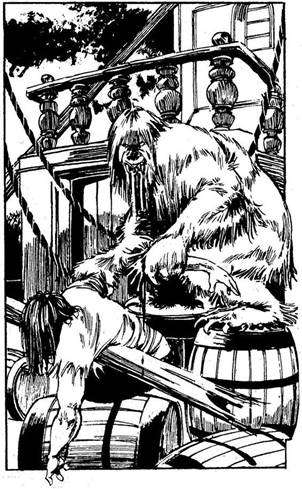
288.
Amikor odaérsz a zátonyra futott hajóhoz, felmászol a fedélzetére, és szembetalálod magad egy nagy, bozontos szőrű fehér vadállattal, mely épp a gálya egyik halott matrózát készül felfalni. Rád mordul, és rád vicsorítja agyarát. Megpróbálsz elmenekülni, de a vadállat rád támad, és hatalmas karmokban végződő mancsait feléd lendíti. Kardot rántva védekezel.
Jégvad ÜGYESSÉG 9 ÉLETERŐ 10
Ha legyőzöd, lapozz a 320-ra.
289.
Az ajtó egy nagy, erősen aládúcolt terembe nyílik, melynek közepén obszidián emelvényen csúf kis szobor áll. A bálvány mindkét oldalán egy-egy oltárszolga áll, a pusztulás urait szolgálók hagyományos krokodilbőrébe burkolva. Fenyegetően feléd lépnek, miközben előrántják hosszú tőrüket. „Az ördögbe is - szólal meg az egyik -‚ meg kell gyorsítanunk az utadat az örök álommezők felé!” Rád támadnak. Egyenként kell velük megküzdened.
Első oltárszolga ÜGYESSÉG 8 ÉLETERŐ 6
Második oltárszolga ÜGYESSÉG 7 ÉLETERŐ 6
Ha legyőzöd őket, lapozz a 388-ra.
290.
A szörny felé rohansz, felugrasz a levegőbe, és fejbe rúgod. Kissé lehajtja a fejét, így a csizmád széle csak súrolja a koponyáját - vonj le tőle 1 ÉLETERŐ pontot. Viszont sikerül elkapnia a bokádat, és annál fogva meglóbál néhányszor a levegőben. Mit teszel?
Térdeddel mellbe rúgod? Lapozz a 122-re.
Beleöklözöl a bordáiba? Lapozz a 372-re.
Karateütéssel az ágyékába
vágsz? Lapozz a 177-re.
291.
A sétahajó belseje olyan, akár egy tüzes kohó, már semmi remény nincs rá, hogy a hajó megmeneküljön. A Kísértet fedélzetére visszatérve látod, hogy legénységed Csupán három foglyot tudott ejteni a hajó matrózai közül. A Kísértettel megfordulsz, és Lagash mellett elhaladva a Beltenger felé csurogsz a folyón lefelé. Amint elhagyod a folyót, utadat állja egy piros vitorlás hadihajó, mely a város irányából érkezett. Dobj három kockával. Ha a kapott összeg kevesebb, mint LEGÉNYSÉGED EREJE - lapozz a 90-re. Ha a kapott összeg ugyanannyi vagy több, mint LEGÉNYSÉGED EREJE - lapozz a 309-re.
292.
Nagy nehezen sikerül letolnod a földre a tetőt, mely hatalmas robajjal darabokra törik. A zaj betölti a kriptát és a kripta mögötti barlangot. A szarkofág üres, csak egy jó erősnek látszó sisakot és egy zsákot találsz benne, amely 110 Arany Tallért tartalmaz. A fejedre teszed a sisakot, és átveted a válladon a zsákot. Lapozz a 358-ra.
293.
Shurrupak szegényei nagyon szegények, és néhány garasért mindent megtesznek, amit csak kérnek tőlük. Ennek ellenére nem lehet megjósolni, hogy azok, akiket itt megvásárolsz, később milyenek lesznek. Dobj egy kockával minden 50 Arany Tallér után, amit ezekért a szerencsétlen emberekért, akik a kalózéletet választják, kifizetsz. A kapott számot add hozzá LEGÉNYSÉGED EREJÉHEZ. Amikor a toborzással végzel - lapozz a 180-ra.
294.
Egy kereskedőhajó négyszögletes vitorlája és terebélyes teste bukkan fel a láthatáron. A hatalmas hajó jócskán meg van rakva, és valószínűleg fegyverekkel is bőven el van látva. A Keleti-partvidék felől nyugat felé tart, Kish városába. Ha megtámadod a hajót - lapozz a 391-re, ha békén hagyod, és inkább tovább kutatsz a tengeren egy kisebb hajó után - lapozz a 66-ra.
295.
Görbe kardoddal beledöfsz a macskába, de nem ejtesz rajta sebet. Lapozz a 322-re.
296.
Ahogy közeledsz, a két hajó harapófogóba fog. Az egyiket kikerülöd, de fennakadsz a másik orrdíszén. Sérült hajód kettétörik. Pórul járt legénységeddel együtt a tengerbe zuhansz, ahol a cápák - melyek sohasem maradnak távol a tengeri csatáktól - éhesen gyülekeznek. Kalandod itt véget ér.
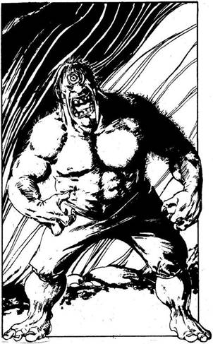
297.
Amint lenyomod a kilincset, az ajtó nagy robajjal kicsapódik, és egy masszív, forgó kereket pillantasz meg a hátsó fal egyik mélyedésében. A kerék lecsúszik a tengelyről, éles pengék jelennek meg a szélén, és a szörnyű szerkezet halálos ívben száll feléd a levegőben. Tedd próbára a SZERENCSÉDET! Ha SZERENCSÉD van - lapozz a 169-re, ha nincs SZERENCSÉD - lapozz a 2-re.
298.
„Gyere erre - szól az idős teremtmény, és egy csapóajtóra mutat az egyik szobor talapzatában. - Menj le itt. Ha visszajössz, átmehettek a hegyen!” Kinyitod a csapóajtót, és lemászol a sötétségbe. Gyéren megvilágított barlangba jutsz, melyben egy Küklopsz vár. A hatalmas egyszemű, ember formájú lény kiragadja a kezedből hüvelyében pihenő kardodat, és fölhajítja a barlang falában lévő fülkébe. „Na - mondja -‚ most megküzdhetünk!” Fegyvertelenül kell vele megvívnod. Egy papírlapra jegyezd fel a 311-es számot; ez az a pont, ahová majd lapoznod kell, ha legyőzted a szörnyet - vagyis ha ÉLETERŐ pontjainak száma eléri a nullát. Jegyezd fel azt is, hogy ÉLETERŐ pontjaidnak száma 16. Most pedig döntsd el, miképp küzdesz meg vele.
Mellbe rúgod? Lapozz a 206-ra.
A vállába öklözöl? Lapozz a 91-re.
Könyökkel belevágsz a bordái
közé? Lapozz a 29-re.
299.
Miután megkaptad a két zsák aranyat a Négy Szél Királyától, adsz-e kíváncsiskodó legényeidnek 100 Arany Tallért, hogy ne kutassanak az aranyaid után? Ha igen - lapozz a 32-re, ha nem - lapozz a 379-re.
300.
Lapozz az 50-re.
301.
Shurrupak szép nagy város, mely szívesen látja a beltengeri kalózokat, akik ezért kizárólag Shurrupak ellenségeit támadják meg. Dobj három kockával. Ha a kapott összeg kevesebb, mint LEGÉNYSÉGED EREJE, növeld 5 nappal utazási idődet a HAJÓNAPLÓDBAN! Ha a kapott összeg ugyanannyi vagy több, mint LEGÉNYSÉGED EREJE, növeld 6-tal utazási napjaid számát a HAJÓNAPLÓDBAN! Ha Shurrupakba megérkezve először a rabszolgáidat adod el - lapozz a 349-re, ha előbb újabb kalózokat vásárolsz a hajódra - lapozz a 371-re.
302.
Hajóddal a másik hajó mellé kerültök, és a legénységed hajítócsáklyákkal közel húzza egymáshoz a két hajótestet. Embereid egyetlen ordítással átugranak a másik hajó fedélzetére, ahol szánalmasan kevés matróz sorakozik fel a védelemre.
Kereskedőhajó
legénysége ÜTÉS 6 ERŐ 6
Ha legyőzitek őket - lapozz a 392-re.
303.
Legénységed kivág néhány fát, amelyet faltörő kosként tud majd használni. A zajra felfigyelnek a harcos papok, s miután rájönnek, hogy miben sántikáltok, nyilakkal és lándzsával felszerelt emberek lepik el a falakat, végül hangos csatakiáltásokat hallató legénységeddel megtámadod a főkaput. Faltörő kosotok hatalmas robajjal vág bele a kapuba. Nyílvesszők, lándzsák és kövek hullanak le embereidre - vonj le 2 pontot LEGÉNYSÉGED EREJÉBŐL. Tedd próbára a SZERENCSÉDET! Ha SZERENCSÉD van - lapozz a 343-ra. Ha nincs SZERENCSÉD - lapozz az 58-ra.
304.
Amikor felértek a hegy csúcsára, embereid hangosan zúgolódni kezdenek: „Ez őrültség, kapitány! - mondja az első tiszted. - Már négy embert vesztettünk az úton, és csak az isten tudja, hány katona leselkedik itt ránk! Vissza kell mennünk a hajóra, akkor még reménykedhetünk valamiben!” Ha engedsz legényeid unszolásának - lapozz a 113-ra, ha kineveted őket, amiért ilyen gyávák, és megparancsolod nekik, hogy menjenek tovább - lapozz a 155-re.
305.
Minden erődet összeszedve meglendíted a lábadat, és a teremtmény hónaljába rúgsz. Az nagyot ordítva elereszt, majd kezét a sérülésére szorítja - vonj le 2 pontot az ÉLETEREJÉBŐL. Nem ütöd meg magad, fürgén a sérült Küklopsz mögé kerülsz. Mit teszel?
Belebokszolsz veséjébe? Lapozz a 347-re.
Könyököddel belevágsz a térd-
hajlatába? Lapozz a 46-ra.
Repülőrúgásal a háta közepébe
rúgsz? Lapozz a 384-re.

306.
Úszó fadarabok tömkelege között hajózol - ezek valószínűleg egy szerencsétlenül járt hajó darabjai. Az úszó hajódeszkák többségét hatalmas fogak törték darabokra. Csak néhány hordót találsz a roncsok között, amit érdemes elkobozni. Az egyikben kitűnő pálinka van, ami nagymértékben növeli legénységed jó hangulatát - növeld LEGÉNYSÉGED EREJÉT 2 ponttal. Ha a Trysta-zátonyok felé hajózva a Beltenger vizein akarsz portyázni - lapozz a 66-ra, ha irányt változtatva a nyugati partok felé indulsz - lapozz a 157-re, ha a Keleti-partvidék felé mész, hogy ott a szárazföldön portyázz - lapozz a 10-re.
307.
Miután legyőzted a Trogloditákat, kinyitod a ládájukat, és pontosan 100 Arany Tallért találsz benne. A zsákmányt nehezen cipelve az oldalfolyosón fölfelé indulsz. Pár száz méter után kijutsz a napvilágra. Az Ölyv-sziget erdeiben vagy. Amint a part felé mész, néhány embereddel találkozol, akik a többiekkel együtt a szigetet járták, hogy a nyomodra bukkanjanak. Győztesen térsz meg a Kísértet fedélzetére, és folytatod az utadat. Lapozz a 15-re.
308.
„Ott a végén, melletted” - mondod a gyűrűben lévő drágakőre visszaemlékezve. „Helyes. Továbbmehetsz!” - válaszol a Szalamander, és eltűnik. A lángok kihunynak. Átmész a termen, és kilépsz az ajtón. - Lapozz a 339-re.
309.
A hadihajó túl gyors! Melléd kerül, megcsáklyázza a hajódat, és magához von. A tengerészek már várnak rátok. Meg kell küzdenetek velük.
Hadihajó ÜTÉS 10 ERŐ 8
Ha el akarsz menekülni - lapozz a 12-re. Ha kiállsz ellenük és legyőzöd őket - lapozz a 135-re.
310.
A gyűrű hangos kattanással elmozdul. Válaszul a kripta egyik falának egy darabja kizuhan, és feltűnik egy meredeken fölfelé vezető lépcsősor. Felrohansz rajta, és máris a külvilágban találod magad, ugyanott, a hegyek lábánál, ahonnan oly rég elindultál. Visszamész oda, ahol a Kísértetet hagytad, és látod, hogy a legénységed megvárt, remélve, hogy hátha életben maradsz. - Lapozz a 272-re.

311.
A Küklopsz eszméletlenül terül el a földön. Győztél. Felmászol a létrán, majd kimész a csapóajtón, ahol szembetalálod magad a bölcs öreg lénnyel, aki leküldött. Vihog, amikor megjelensz, majd átküld egy a falban lévő keskeny résen, és megmutatja, merre kell menned, hogy eljuss Nippur hegyének csúcsára. Lapozz a 36-ra.

312.
A lakoma végeztével a Király búcsút mond neked. Visszatérsz a Kísértetre, és elhagyjátok az öblöt, ahol lehorgonyoztatok. Ha a Király neked adta az északi és déli szeleket tartalmazó zsákokat, akkor mostantól kezdve, amikor azt az utasítást kapod, hogy dobj három kockával és vesd össze a kapott összeget a LEGÉNYSÉG EREJÉNEK pontszámával, mindig vonj le 4 pontot a dobott összegből. Merre mész tovább? Ha délkelet felé a Goth-csatorna irányába - lapozz a 191-re, ha délnyugat felé az Ölyv-szigetre - lapozz a 27-re.

313.
Hajód átverekszi magát a hadihajó evezőlapátjai között, de többször is nyílzápor zúdul rá a shurrupaki tengerészektől nyüzsgő többi hajóról - vesztesz 2 LEGÉNYSÉG EREJE pontot. Miután sikerül átvágnod a hadihajók vonalán, észreveszed, hogy egy másik, kisebb hajóraj vett üldözőbe benneteket. Ha szélsebesen elhajózol a hajóraj előtt és a zátonyok felé indulsz - lapozz a 261-re, ha átvágod a hajóraj vonalát, úgy, mint az előbb tetted - lapozz a 237-re.
314.
Ha a vulkanikus szigetre hajóztok - lapozz a 369-re. Ha a pálmákkal borított szigetre mentek - lapozz a 354-re.
315.
Lehorgonyzol a sziget egyik eldugott kis öblében, kikötsz, és néhány legényeddel elindulsz a parton a harcos papok templomerődítményébe. Nem sokkal a cél előtt, még mielőtt észrevehetnének benneteket, embereidet rejtekhelyükön hagyva, egyedül mész az erődítmény főkapuja felé. Lagashi követnek adod ki magad, és beengednek. Az apát elé vezetnek kihallgatásra. „Ó, fényes Asswr-sel-Dablo nagy tekintélyű apátja, észak vidékeinek igazságot és győzelmet hozó ura, nagybecsű barátodtól hozok üdvözletet és üzenetet számodra!” - mondod. „Igen kedves tőled. Foglalj helyet, és teázz velem” válaszolja. Megteszed, amit mond. Kellemesen elbeszélgettek, majd így szólsz: „Tudomásomra jutott, hogy Lagash Wazija támadásra készül fellegvárad ellen, mert urai az adóterhek növelésével fenyegetik. Befolyásos barátaim vannak, ó, uram, és - jó pénzért - el
tudnám érni, hogy ne téged támadjon meg” - mondod, és meghajolsz előtte. Az apát felsóhajt, majd a szerzetes szolgája fülébe súgja: „Megalkuvó!” Megnyom egy gránátkövet a székében. Ekkor megnyílik alattad a föld, és egy mély verembe zuhansz - vesztesz 2 ÉLETERŐ pontot! „Vakmerő kalóz - szól nevetve az apát, aki a verem pereméről néz le rád. - Az ajtók mögött megtudod, hogy mi lesz a sorsod” - mondja, és rámutat négy ajtóra a verem négy falában. Mindegyik ajtóra más és más jelet véstek. Melyik ajtón nyitsz be?
Amelyikre csillaghullást
véstek? Lapozz a 380-ra.
Amelyiken egy fordított háromszög
van? Lapozz a 327-re.
Amelyiken egy kerék van? Lapozz a 297-re.
Amelyiken egy fekvő félhold
van? Lapozz a 249-re.
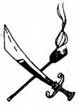
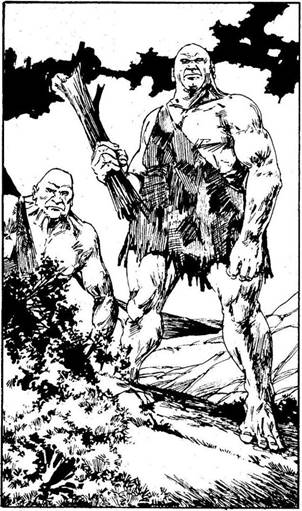
316.
Miközben felfelé mászol a hegyen, lefelé gördülő kövek zaja üti meg a füledet, majd egy hatalmas sziklatömb röpül feléd a levegőben, és éppen a lábad előtt ér földet. Egy hasonlóan nagy szikladarab követi. „Állj! - kiáltja egy mély hang a hegy tetejéről. - Senki nem léphet hívatlanul a Muzzelmirek földjére!” Két Óriás, aki társai szemében tán kicsinek tűnik, de a te mércéd szerint hatalmas, fölötted áll az orom tetején. Mindkettő jókora farönköt tart a kezében fegyver gyanánt. Testüket állatbőr fedi. Ha legénységeddel megtámadod őket - lapozz a 325-re, ha meg akarsz egyezni velük - lapozz a 336-ra.
317.
„Bolond! - szól a Szalamander a tűzből kilépve. - Butaságodért halállal fizetsz!” Nagyot kiáltva rád támad tüzes szigonyával. Meg kell küzdened vele.
Szalamander ÜGYESSÉG 10 ÉLETERŐ 6
Ha legyőzöd - lapozz a 377-re.

318.
A Kísértet a Beltenger nyugodt vizeit szeli; az őrszem az árbockosárból állandóan szemmel tartja a látóhatárt, nem tűnik-e fel valamilyen hajó. Dobj
három kockával. Ha az eredmény kevesebb, mint LEGÉNYSÉGED EREJE, növeld utazási napjaid számát 4-gyel a HAJÓNAPLÓDBAN. Ha a kapott összeg ugyanannyi vagy nagyobb, mint LEGÉNYSÉGED EREJE, 5 nappal növeld utazási napjaid számát a HAJÓNAPLÓDBAN. Ha a HAJÓNAPLÓDBAN szereplő napok száma páros - lapozz a 363-ra, ha ez a szám páratlan - lapozz a 294-re.
319.
Amikor odaugrasz a Küklopszhoz, az elugrik előled, és nyitott tenyerével egy horogütést mér a fejedre, amelytől elrepülsz - vesztesz 1 ÉLETERŐ pontot. Amikor földet érsz, a szörny megragad a bokádnál fogva, és felemel a magasba. Miközben fejjel lefelé lógsz, mit teszel?
Alulról belevágsz az ágyékába? Lapozz a 177-re.
Gyomorszájon vágod? Lapozz a 139-re.
Belerúgsz a mellkasába? Lapozz a 122-re.
320.
A vadállat kimúlt. Nyugodtan átkutatod a hajót. Rengeteg összefagyott ládára bukkansz, de egy aranygyűrűn kívül, melynek közepén tűzpiros drágakő van, semmiféle kincset nem találsz. A gyűrű egyik oldalába ezt vésték:
Hol találod meg Albionban azt,
ami a lent és a fönt között van?
A gyűrű másik oldalán pedig ott áll a valószínű válasz:
Ott a végén, melletted.
Furcsa. Mivel semmi egyebet nem találsz a hajón, visszatérsz a Kísértetre. Lapozz a 217-re.
321.
A gyíkokat szabadon engedik! Kiéhezve rohannak a kijelölt útvonalon a halálra ítélt Goblin felé - Awkspeed egy orrhosszal győzi le Fazimát. Ha a győztesre fogadtál, annyi Arany Tallért (vagy annyi rabszolgát) nyersz, amennyit a verseny előtt megtettél. Ha újra fogadsz egy újabb Batárversenyen - lapozz a 202-re, vagy ha eddig még nem tetted volna, megpróbálkozhatsz a kiütős játékkal lapozz a 48-ra, vagy a kockajátékkal - lapozz a 236-ra.
322.
A többi macska megáll, amikor megtámadod a társukat, majd rád veti magát. Tűhegyes karmaikkal szétszaggatják a testedet - vesztesz 4 ÉLETERŐ pontot. Ha még életben vagy, melyik macskát támadod meg?
A fekete macskát? Lapozz a 295-re.
A fehér macskát? Lapozz a 256-ra.
A vörös macskát? Lapozz a 203-ra.
A barna macskát? Lapozz a 126-ra.
A szürke macskát? Lapozz a 95-re.
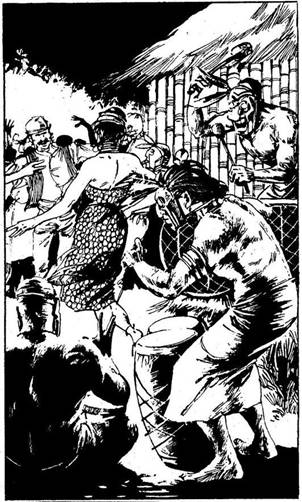
323.
Az Ogre hatalmas ordítással kiüt a ringből, s a nézők közé zuhansz - maradandóan vesztesz
2 ÉLETERŐ pontot. (Ui. Kezdeti pontjaid 2-vel csökkennek.) A pénz, amit megtettél, szintén elúszott - húzd ki a ZSÁKMÁNY rovatból! Ha egy másik bajnokkal állsz ki egy újabb kiütős játékra - lapozz a 385-re; ha a Batárversenyen veszel részt (abban az esetben, ha még nem próbáltad volna) - lapozz a 270-re, ha a kockajátékkal próbálkozol - lapozz a 236-ra.

324.
Legénységed zömével partra szállsz. A sziget jómódú népe nagy ünnepléssel fogad. Körültáncolnak benneteket, és a falu közepére vezetnek, ahol nagy lakomával várnak. Amikor megkérdezed a véneket, hogy segítenének-e nektek élelemmel felszerelni a Kísértetet, azok nevetve bólogatnak, és biztosítanak, hogy minden segítséget megkapsz, amit csak akarsz. A lakoma után a szigetlakók borral kínálnak, és táncolni hívnak a pergő dobok zenéjére. Végül mindannyian lerogytok a kimerültségtől. Másnap, miután felébredtek, látjátok, hogy foglyok vagytok, bekerítettek benneteket. Tedd próbára a SZERENCSÉDET! Ha SZERENCSÉD van - lapozz a 286-ra, ha nincs SZERENCSÉD - lapozz a 345-re.
325.
Embereid kardot rántanak és támadnak, miközben az Óriások, kezükben a farönkökkel, készenlétben állnak. A csata megkezdődik.
Óriások ÜTÉS 9 ERŐ 6
Ha legyőzöd őket - lapozz a 344-re.

326.
A kereskedőhajó mellé navigálod a Kísértetet. Kényelmesen rákönyökölsz a hajó korlátjára, és átkiáltasz a kapitánynak: „Hé, te, tökfej! Ide az összes aranyaddal, akkor nem süllyesztem el a hajódat, és nem leszel rabszolga a legénységeddel együtt. A rakományodhoz sem nyúlok.” A kapitány ideges legénysége unszolására elfogadja nagylelkű ajánlatodat. Egy kis csónakon átküld 117 Aranyat - amit a Zsákmányodhoz hozzáadsz. Ezután otthagyod a kereskedőt. A Trysta-zátonyok nem messze délre fekszenek. Mit teszel?
Megkerülöd őket, és a Trysta-sziget felé
indulsz? Lapozz a 164-re.
Délnyugat felé mész Kishbe? Lapozz a 223-ra.
Az Ölyv felé hajózol? Lapozz a 204-re.
Északkelet felé tartasz, a Goth-csatorna
irányába? Lapozz a 191-re.

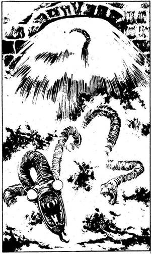
327.
Amikor lenyomod a kilincset, az ajtó kicsapódik, több ezer liter víz ömlik a verembe, és egy szempillantás alatt megtölti. Miközben küzdesz, hogy a víz felszínén maradj, néhány sötét, kígyóhoz hasonló lényt látsz bekúszni az ajtón. Ezek a félelmetes Elverinek: vak, torz, emberevő édesvízi kígyók. Amikor megszimatolják (kétségkívül erős) szagodat - támadásba lendülnek. Egyenként küzdj meg velük.
Első Elverin ÜGYESSÉG 8 ÉLETERŐ 6
Második Elverin ÜGYESSÉG 7 ÉLETERŐ 4
Ha legyőzöd őket - lapozz a 65-re.

328.
Úgy suhantok át az aranyló táblák között, mint sötét farkasfalka, és egyre közelebb juttok Kish egyik városához. Tedd próbára a SZERENCSÉDET! Ha SZERENCSÉD van - lapozz a 47-re. Ha nincs SZERENCSÉD - lapozz a 186-ra.
329.
Miután legyőztétek az őröket, átkutatjátok a karavánt - lerángatjátok a ládákat, zsákokat és borral teli tömlőket a hatalmas, megpakolt vadállatokról. Zsákmányotok mégsem túl sok. Egy kisebb ládában 63 Arany Tallért találsz, és mindössze egyetlenegy Gyíkember marad, aki elég jó állapotban van ahhoz, hogy majd a rabszolgapiacon értékesítsd. Kissé csalódottan összeszeded lerészegedett legénységedet, és visszatérsz velük a Kísértet fedélzetére. Lapozz a 35-re.

330.
„A fogadás, az fogadás! - mondja zordan el-Fazouk. - Te nyertél!” Még mielőtt meggondolná magát, gyorsan elhagyod a kockajáték színterét. Ha még nem tetted volna, szerencsét próbálhatsz a Batárversenyen - lapozz a 270-re, vagy a kiütős játékban - lapozz a 48-ra, vagy ha akarod, elhagyhatod Calah városát - lapozz a 262-re.

331.
Gyors visszavonulás után előbb éritek el a partot, mint a Huszárok. Ennek ellenére már nincs elég időtök, hogy feljussatok a Kísértet fedélzetére, mert a városi lovas hadsereg vágtatva utolér benneteket a parton. Legénységednek meg kell küzdenie velük.
Szárnyas Huszárok ÜTÉS 11 ERŐ 6
Ha a legénységed győz - lapozz a 346-ra.

332.
Legénységed bevonja a hadihajó fővitorláját, és elvágja a Kísértetet a hajítócsáklyáktól. Hajódat oldalt döntve a szél szárnyán gyorsan elsiklasz. Ha a zátonyokat megkerülve a Trysta-sziget felé indulsz - lapozz a 164-re, ha délnyugat felé mész Kishbe - lapozz a 223-ra, ha az Ölyvre tartasz - lapozz a 204-re, ha a Goth-csatorna felé igyekszel délkeleti irányba - lapozz a 191-re.

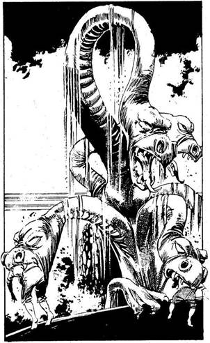
333.
Valami hirtelen megállásra kényszeríti a Kísértetet, és a hajó legénysége elesik a fedélzeten. A hajód körül hatalmas bugyborékolás, fortyogás kezdődik. Ebből a fortyogásból számos hosszú nyakú hüllőfej emelkedik ki: valamennyi egy közös, puffadt fekete testből nő ki. Ez egy Hidra! Óriásira tátott szájjal hajol be a hajó fedélzetére, hogy elnyelje holtra rémült embereidet.
Hidra ÜTÉS 9 ERŐ 8
Ha a legénységed legyőzi - lapozz a 222-re.
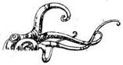
334.
Éles sziklákra zuhansz, és meghalsz. Kalandot itt véget ér.
335.
A szárazföld belseje felé haladva azt figyeled, vajon merre lehet az a szentély, amelyről beszéltek - növeld utazási napjaid számát 3-mal a HAJÓNAPLÓDBAN. Végül egy barátságos kis völgyben, sűrű
lombok között találsz rá. Tömör kőszerkezete vagy negyven-ötven méter magasra nyúlik. Megkínzott emberek csontvázai díszítik. Legénységed tagjai csak egy nyíllövésnyire merik megközelíteni. Kineveted őket babonás gyávaságuk miatt, és egyedül mész a szentélyhez. Erőltetett közönnyel indulsz fölfelé a lépcsőn. A szentély belseje komor, lehangoló, de legalább egy lélek sincs benne. Előtted hosszú, széles folyosó húzódik, ahonnan meredek, keskeny lépcsősor vezet a szentély mélyébe. Merre indulsz tovább? Ha a folyosón - lapozz a 63-ra, ha a lépcsőn - lapozz a 85-re.
336.
„Jóemberek! - kezded, és egy lépést teszel feléjük. - Mivel nem tudtuk, hogy e föld birtokosai a nagyra becsült Muzzelmirek, engedjétek meg, hogy nézeteltérésünket egy kis versennyel hozzuk helyre. Ha ti nyertek, visszamegyünk a hajónkra. Ha mi nyerünk, akkor megengeditek, hogy szabadon átmehessünk földeteken.” Ezek az emberek igen egyszerű lelkek, így készségesen beleegyeznek ajánlatodba. Kettőjük közül az alacsonyabb odalép hozzád, és így szól: „Én vagyok Mog, ő meg Ogmog. A verseny abból álljon, hogy te meg én
megküzdünk egymással.” Nem egészen így képzelted el. Ha elfogadod az ajánlatát - lapozz a 366-ra, ha valami mást ajánlasz, például egy farönkkel vívott küzdelmet - lapozz a 351-re.

337.
Éles karateütésed után a Küklopsz felordít fájdalmában, és odakap sérült hónaljához - vonj le tőle 1 ÉLETERŐ pontot. Miután valahogy magához tér, kinyújtja hatalmas mancsait, bal karjával megragad és a levegőbe emel. Mit teszel?
Beleharapsz a csuklójába? Lapozz a 276-ra.
Rácsapsz a könyöke hátsó
részére? Lapozz a 187-re.
Belerúgsz a vállába? Lapozz a 251-re.
338.
„Ó, jaj - kiált a Szellem -‚ ez igazán szörnyű!” Dühös pillantást vet rád, és kezével kétségbeesetten feléd suhint. „Ó, ily rettenetes hírek hordozója, megátkozlak téged!” Vesztesz 2 SZERENCSE és 2 ÜGYESSÉG pontot. Lapozz a 210-re.
339.
Egy hatalmas, üres szobában találod magad, csak a boszorkány áll egy kör közepén a földön. Egyik kezében egy tőrt, másikban egy fekete macskát tart. „Légy átkozott! - mondja. - Miért nem etted meg az ételedet, ügy, mint a többiek? Ezért meg kell hogy öljelek. Olyasmit kell tennem, amihez semmi kedvem sincs.” Ezután feldobja a macskát a levegőbe, és a tőrrel valamiféle jelet ír a levegőbe. A macska hirtelen öt különböző színű macskává változik; az öt macska furcsán lebeg. Támadást színlelve, nyávogva körülötted köröznek. Melyik állatra támadsz rá?
A fekete macskára? Lapozz a 295-re.
A fehér macskára? Lapozz a 256-ra.
A vörös macskára? Lapozz a 203-ra.
A barna macskára? Lapozz a 126-ra.
A szürke macskára? Lapozz a 95-re.
340.
Dobi három kockával. Ha a kapott összeg kevesebb, mint LEGÉNYSÉGED EREJE, növeld utazási napjaid számát 2-vel a HAJÓNAPLÓDBAN. Ha a kapott összeg ugyanannyi vagy kevesebb, mint LEGÉNYSÉGED EREJE, növeld 3-mal az Utazási napjaid Számát a HAJÓNAPLÓDBAN. Lapozz a 378-ra.

341.
Legénységed nem képes megbirkózni a feladattal, amivel megbíztad őket. A Kísértet ráfut egy kicsi, de veszélyes sziklazátonyra, és a szürke karmok átszakítják a törzsét. Víz árasztja el a hajód belsejét, és a Kísértet elsüllyed! Kalandod itt véget ér.
342.
Abdul legényei egyszersmind azt is közlik veled, hogy mivel 50 napnál többet használtál el arra, hogy eljuss Nippurba - elvesztetted a fogdást, függetlenül attól, mennyi Arany Tallérod van. Kalandod itt véget ér, vesztettél.

343.
Ismét meglökitek a faltörő kosokat, és ezúttal a kapu ripityára törve kifordul a sarkából. Embereid hatalmas üdvrivalgással rántják ki görbe kardjaikat, és berontanak az erődítménybe - ahol szembetalálkoznak a mindenre elszánt védőkkel. A csata megkezdődik.
Enraki papok ÜTÉS 9 ERŐ 12
Ha te győzöl - lapozz a 274-re.
344.
Miután legyőztétek az Óriásokat, legénységeddel átmásztok a hegyen, és egy nagy kiterjedésű homoktengerhez értek, mely egészen a látóhatárig nyúlik. Ezt a tájat látva elbátortalanodsz, és rájössz, kevés reményed van rá, hogy itt bármit is zsákmányolhass. Visszamentek a Kísértetre. Növeld 3-mal utazási napjaid számát a HAJÓNAPLÓDBAN, és lapozz a 272-re.
345.
Nincs kiút a ketrecből. Déltájban megjelennek a városi öregek, és közlik veletek, hogy a szigetük szent, így nem engedhetik, hogy bárki is életben maradjon, aki egyszer is látta. Ezért meg kell ölniük benneteket. Ekkor íjakkal felfegyverezve megjelenik a többi szigetlakó is, és tüzet nyit rátok. Kalandod itt véget ér.
346.
A Huszárok vereséget szenvednek, és a sereg maradékával együtt a part mentén Kish felé menekülnek. Szerencsétlenségedre nekik is eszükbe jut az, ami neked, és kiforgatják a várost minden vagyonából. Így aztán arany helyett csak rabszolgákat tudsz zsákmányolni. Dobj két kockával: annyi rabszolgát szereztél a frissen elszegényedett városlakók sorából, amennyit dobtál. Ha visszatérsz a Kísértetre a zsákmányoddal és továbbhajózol a
part mentén Kish felé - lapozz a 223-ra, ha a Beltengeren mész tovább a Trysta-zátonyok felé - lapozz a 66-ra.
347.
Közel lépsz hozzá, és néhány apró, de hatásos ütést mérsz a veséjére - vonj le 2 pontot ÉLETEREJÉBŐL. A fel bőszült szörny fájdalmában megfordul, és irdatlan nagy öklét meglendítve az arcodba csap - vesztesz 2 ÉLETERŐ pontot. Mindketten megtántorodtok, és a Küklopsz összeesik. Mit teszel?
Fejbe vágod? Lapozz a 82-re.
Állon vágod? Lapozz a 196-ra.
Belerúgsz a bordáiba? Lapozz a 266-ra.
348.
A gyíkokat szabadon engedik! Kiéhezve rohannak a kijelölt útvonalon a halálra ítélt Goblin felé; Fazima egy-két orrhosszal megelőzi el-Savakot és Awkspeedet. Ha a győztesre fogadtál, annyi Arany Tallért (vagy annyi rabszolgát) nyersz, amennyit a verseny előtt megtettél. Ha ismét fogadsz egy következő Batárversenyen - lapozz a 202-re, ha eddig még nem tetted volna, megpróbálkozhatsz a kiütős játékkal, lapozz a 48-ra, vagy a kockajátékkal - lapozz a 236-ra.
349.
Néhány legényeddel és az összes rabszolgáddal elindulsz a piacra. Iszonyatos forgatagba kerültök, a Shurrupak és Marad közötti háború eredményeként száz meg száz maradbeli katona esett fogságba - és a legtöbbet ide hozták, hogy rabszolgának adják el őket, tehát a kínálat nagy, de az ár alacsony. Ha ügynökre bízod rabszolgáid eladását - lapozz a 245-re, ha magad próbálod meg eladni őket - lapozz a 269-re.

350.
Aranyhalmaitok látszólag egyformák, ezért nehéz eldönteni, hogy kinek van több Arany Tallérja. Leültök, hogy megszámoljátok egymás aranyát, és egy óra elteltével kiderül, hogy Abdulnak valamivel több van, mint neked. Kijelenti, hogy ő a győztes és ő az évszázad kalóza. Elvesztetted a fogadást.
351.
„Legyen hát a farönk - egyezik bele Mog. - Akarod Ogmog farönkjét, vagy van sajátod?” Kölcsönkéred legénységed egyik tagjának botját, majd azt ajánlod az Óriásnak, hogy mindketten álljatok egy-egy homokkőre, amiből ezen a vidéken elég sok van, és onnan próbáljátok egymást megütni. Aki elsőnek üti le a másikat, az győz. Az Óriás így szól: „Mivel te apró teremtmény vagy, megengedem, hogy te üss elsőnek.” Körülbelül két méter távolságban felálltok egymással szemben. Ha a fejére célzol - lapozz a 375-re, ha a lábára - lapozz a 394-re.

352.
Nekifutásból a szörny fejére ugrasz, megragadod a szarvánál fogva, és a hátára veted magad. Félelmetesen nagyot ugrik, hogy ledobjon a hátáról, de ezzel csak neked segít, hogy kijuthass a veremből. Sikerül megragadnod a peremét. Miközben az apát nevet, mert arra számít, hogy a vadállat szarvai odalent elpusztítanak, te kimászol, és kimész a terembe. Lapozz a 225-re.

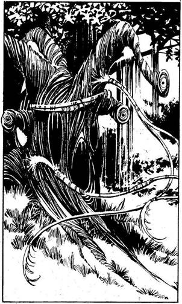
353.
Sűrű, elvadult erdőn vezeted át legényeidet. Hirtelen egy ragacsos inda kúszik elő egy fatörzsből, amelyet halottnak véltél. Az inda egyre nő, megpróbál elkapni és a fa felé húzni. Észreveszed, hogy a faágak végében szemek rejtőznek és a fatörzsön szájak tátognak. Egyre több és több inda ragad meg. Kardot rántva megpróbálsz megszabadulni tőlük.
Kéregmaró ÜGYESSÉG 9 ÉLETERŐ 8
Ha legyőzöd - lapozz a 47-re.

354.
A part közelében megállsz, és legénységed zömével partra szállsz. A part széles és homokos, de a sziget belsejében elszórtan kókuszpálmákat találtok. Ha végigmentek a parton - lapozz a 271-re, ha a sziget belseje felé indultok - lapozz a 282-re.
355.
Legénységed zöme sikerrel átjut a városon a hegy alacsonyabb lejtőire, ahol a sűrű erdőben a Huszárok már nem tudják követni őket. Kirkuk északi
partjai körül körözve látod, hogy a Kísértet elhagyta a várost, és biztos távolságban horgonyzott le. Jelt adsz legényeidnek, hogy életben vagy. Ha visszavonulsz az erdőbe, hogy ott várd meg, míg elmennek a kishi katonák, akik most elég messze kerültek megszokott őrhelyüktől, Kish falaitól - lapozza 364-re, ha visszatérsz a Kísértet fedélzetére és lefelé hajózol Kish irányába - lapozz a 223-ra, ha a Beltengeren mész tovább a Trysta-zátonyok felé - lapozz a 66-ra.

356.
Egy délről jövő viharba kerülsz, amelyben nagyon nehezen tudsz haladni. Amikor kitisztul az idő, fogalmad sincs, hol jártok. Elindultok arra, amerre szerinted Nippur van, de hiába. Reménytelenül eltévedsz, nem érkezel meg a kitűzött napra, ezért a fogadást is elveszted. Kalandod itt véget ér.
357.
Mindössze egynapi hajóút választ el Assurtól, amikor a távolban a látóhatáron apró kis foltot veszel észre. Ez először vitorlává, később hajóvá nő - éles orra és háromszög alakú vitorlája egyenesen
feléd tart. A központi árbocon harci lobogót lenget a szél. Ez egy kishi hadihajó. Megpróbálsz kitérni előle, de a hadihajónak kedvez a széljárás, és gyorsan a Kísérte oldalába kerül. Csáklyák és nyílvesszők záporoznak a hajódra; a támadásra kész legénység felsorakozik. Meg kell küzdenetek velük.
Kishi hadihajó ÜTÉS 10 ERŐ 8
Ha el akarsz menekülni, megteheted, de ne felejtsd el levonni az érte járó büntetést - lapozz a 241-re. Ha harcba szállsz a hadihajóval és legyőzöd - lapozz a 22-re.

358.
A szarkofág fölött egy nagy kőgyűrű csüng le a mennyezetről. A gyűrűn körben felirat látszik: ugyanazon a réges-régi nyelven írták, amelyet a kriptába vezető ajtón olvastál. „Told be (húzd meg) a jobb (rosszabb) életnek (halálnak) ezt a kulcsát, vagy viseld el Ut-Napishtim büntetését.” Felállsz a szarkofág tetejére, és belekapaszkodsz a gyűrűbe. Ha meghúzod - 310-re, ha betolod - lapozz a 16-ra.
359.
A szentély egy kopár völgyre néz. Amikor nekitámaszkodsz az oldalának, hogy megszemléld a kilátást, hirtelen félelem és kétségbeesés kerít hatalmába. E barátságtalan, idegen hely olyan sötét és komor, hogy elhagy az önbizalmad vesztesz 2 SZERENCSE pontot. Visszamész embereidhez, és félve továbbvezeted őket az ösvényen. Lapozz az 52-re.

360.
Amikor megfogod a drágakövet, megbénul a kezed. A bálvány nyelve lassan visszahúzódik a szájába, és magával ragadja karodat, melyet a torkában elhelyezett körkörösen forgó pengék őrölni kezdenek. Vesztesz 4 ÉLETERŐ és 1 ÜGYESSÉG pontot. Végül sikerül valahogy megszabadulnod. Úgy döntesz, hogy ott hagyod a drágakövet, ahol van, és inkább magaddal viszed az egész szobrot. Lapozz a 228-ra.
361.
Végigszaladsz a szörny kemény hátán, majd föl-le ugrálsz rajta. A Küklopsz hatalmasakat nyög - vonj le tőle 2 ÉLETERŐ pontot. A szörny ledob a hátáról, feláll, majd neked ront, hogy elkapjon. Mit teszel?
Repülőugrással fejbe rúgod? Lapozz a 290-re.
Repülőrúgással a lábába
rúgsz? Lapozz a 319-re.
Félreugrasz, és könyökkel oldalról
belevágsz a karjába? Lapozz a 74-re.

362.
A gyíkok elindulnak a startvonaltól, de a te favoritod félúton megbotlik, és elnyúlik a földön. Elveszted a pénzedet (vagy a rabszolgáidat), amibe fogadtál. Ha egy újabb Batárversenyen fogadsz - lapozz a 202-re, ha még nem tetted volna, megpróbálkozhatsz a kiütős játékkal - lapozz a 236-ra.
363.
A láthatáron nincs semmi, hajónak színét se látod. Tedd próbára a SZERENCSÉDET! Ha SZERENCSÉD van - lapozz a 306-ra. Ha nincs SZERENCSÉD - lapozz a 333-ra.
364.
Legénységeddel visszavonulsz az erdőbe, míg a Kísértet fölfelé indul a part mentén, hogy néhány nap múlva találkozzatok. Növeld 3-mal utazási napjaid számát a HAJÓNAPLÓDBAN. A magasból látod, amint a kishi hadsereg összeszedelődzködik, és déli irányban hazafelé indul Kirkukból. Összeszeded az embereidet és ismét lemész a városba. Sajnos a kishi hadsereg megelőzött benneteket, és teljesen kifosztotta a várost. Dobj két kockával: amennyit dobsz, annyi rabszolgát szerzel az elszegényedett városlakók közül. Amikor a Kísértet odaér hozzátok, elhajózhatsz a part mentén lefelé, Kish irányába - lapozz a 223-ra, vagy a Trysta-zátonyok felé a Beltengeren - lapozz a 66-ra.
365.
Lecsúszol a barlang oldalában, útközben kövekbe és sziklákba ütközöl, de elég lassan csúszol, nem sérülsz meg komolyabban. Elég közel kötsz ki ahhoz a lépcsőhöz, amelyen az előbb nem akartál lemenni. Leporolod a ruhádat, és lefelé indulsz a lépcsőn. Lapozz a 284-re.

366.
Egy kört rajzolnak a földre, és ennek a közepébe álltok Moggal. Az Óriás előrelép, széttárja a karját, majd hatalmas ütést mér a fejedre. Ennek következtében kirepülsz a körből, és átzuhansz a túlvilágra... Kalandod itt véget ér.

367.
Mikor jelt adsz, kalózaid hangos ordítással rohamozzák meg a falakat. Hirtelen lándzsákkal és íjakkal felszerelt emberek jelennek meg a fal peremén, és tüzet nyitnak embereidre. Legénységed viszonzásul csáklyákat hajít feléjük, létrákat támaszt a falhoz, és felmászik a vár védőihez. A csata megkezdődik.
Enraki kalózok ÜTÉS 11 ERŐ 16
Ha a te legénységed győz - lapozz a 274-re.
368.
Átadod az Aranyat az embereidnek. Vonj le 100 Aranyat a Zsákmányodból. Lapozz a 312-re.
369.
Lehorgonyzol a nyugodt lagúnában, és legényeiddel megközelíted a szigetet, amelyet homokos part ölel körül, míg a parton túli részeket sűrű dzsungel borítja. Ha a parton mész körbe - lapozz a 23-ra, ha a dzsungel felé indulsz - lapozz a 42-re.

370.
Egy balhoroggal kiütöd az Ogrét a ringből. Annyi Arany Tallért nyersz, ahányat megtettél, amikor fogadtál. Ha egy újabb kiütős játékban akarsz részt venni, ezúttal már egy új bajnokkal - lapozz a 385-re, vagy - ha eddig még nem tetted volna - szerencsét próbálhatsz a Batárversenyen - lapozz a 270-re, vagy a kockajátékban - lapozz a 236-ra.

371.
Hol keresel újabb embereket elvesztett kalózaid helyébe?
A dokkokban? Lapozz a 233-ra.
A piacon? Lapozz a 253-ra.
A város nyomortanyáin és szegény-
negyedében? Lapozz a 293-ra.
372.
Nekifeszülsz a Küklopsz testének, és megpróbálod magad ellökni, de hiába. A szörnyet még csak fel sem ingerli elkeseredett igyekezeted, meglendít, és a feje fölött átrepítve földhöz vág - vesztesz 2 ÉLETERŐ pontot. Megrázod magad, talpra állsz, és szembefordulsz ellenfeleddel. Mit teszel?
Behúzol egyet a vállára? Lapozz a 91-re.
Karateütéssel a hónaljába
vágsz? Lapozz a 337-re.
Repülőrúgással mellbe rúgod? Lapozz a 206-ra.
373.
Visszavonulás közben rájössz, hogy nem is tudod pontosan, merre menj tovább (hacsak nem lefelé). Keresztülvágtok a szakadékon, és meglepetten látod, hogy mindkét peremen több száz havasi vadállat jelenik meg. Legényeid pánikba esnek, és futva menekülnek, amikor föntről egyre nagyobb sebességgel és egyre több havat görgetve hatalmas jeges lavina kezd lefelé gurulni. Egy újabb lavina az előzőkkel egyesülve mindannyiótokat maga alá temet. Kalandod itt véget ér.

374.
Miután megölted a Krellt, átkutatod a barlangját, és megtalálod, amit keresel - a Sókoponyát. Visszamész a Tengeri Tündérekhez, és átadod nekik a kincset, melyért hálából meggyorsítják utadat. Minden alkalommal, amikor azt az utasítást kapod majd, hogy dobj három kockával a LEGÉNYSÉGED EREJÉÉRT, csak két kockával kell dobnod. Visszaúszol a víz felszínére, felmászol a Kísértet fedélzetére és elhajózol. Merre mész? Ha délre, Marad felé - lapozz a 191-re, ha délnyugat felé a Beltengerre, a Trysta-zátonyok felé - lapozz a 66-ra.
375.
Egy jó erős suhintással nagyot csapsz az Óriás feje búbjára. „Ó - szól, de a szeme se rebben. - Most rajtam a sor!” A magasba emeli a farönköt, vadul meglendíti a levegőben, és elhajítja. A farönk lever a homokkőről, és jó pár méterrel arrébb landolsz. Dobj két kockával, és a kapott összeget vond le ÉLETERŐDBŐL. Ha még mindig életben vagy, vereséget szenvedtél, és legényeid visszaviszik összetört testedet a Kísértet fedélzetére. Lapozz a 272-re.
376.
Assurig eseménytelenül telik az út, a horizonton egy hajó sem bukkan fel, az idő viszont pocsék. Kikötsz, és egyenesen a központi piactér felé mész, hogy körülnézz a matrózok között, nem állna-e be néhány közülük hozzád kalóznak. Tedd próbára a SZERENCSÉDET! Ha SZERENCSÉD van - lapozz a 283-ra. Ha nincs SZERENCSÉD - lapozz a 146-ra.
377.
A Szalamander egy szemvillanás alatt eltűnik, amikor végzetes csapásod lesújt rá. Most már egyedül mész tovább, és a terem végében lévő ajtón át távozol. Lapozz a 339-re.

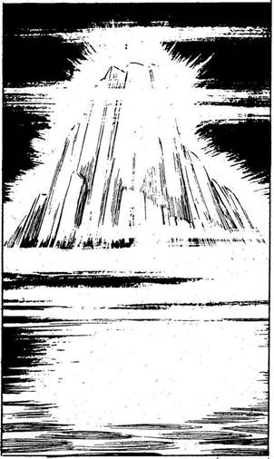
378.
Mélyen behajózol a Beltengerbe, Shurrupaktól délre, Nippur felé tartasz - növeld 2 nappal utazási idődet a HAJÓNAPLÓDBAN! Minél délebbre mész, a tenger annál viharosabbá és az időjárás annál kiszámíthatatlanabbá válik. Egy este, amikor a természetellenes fagyos köd alig egy méterre csökkenti a látótávolságot, fénylő jéghegyet pillantasz meg a tengeren. A Kísértet szélsebesen száguld e fehér jégtömb felé. Tedd próbára a SZERENCSÉDET! Ha SZERENCSÉD van - lapozz a 166-ra. Ha nincs SZERENCSÉD - lapozz a 193-ra.
379.
Néhány legényed, aki még mindig azt hiszi, hogy a zsákokban olyan kincsek rejlenek, amelyeket nem akarsz velük megosztani, besurran a kabinodba, amíg a fedélzeten tartózkodsz. A legények megtalálják a zsákot, amelyben a déli szél van, és kinyitják - hogy megnézzék, vajon miért rejtegeted előlük. A déli szél kiszökken a zsákból, üvöltve körbezúg a kabinodban, majd az ablakon át távozik. Bőszen tombol odakint, és az általa kavart vihar észak felé viszi vissza a Kísértetet. Három hétig tombol a viharos szél, és maga előtt tolja a hajódat. Végül elül, és a Kísértet ott köt ki Tak partjai közelében, ahonnan elindultál. Már nincs elég időd arra, hagy ismét elindulj Nippurba. A fogadást elvesztetted! Kalandod itt véget ér.

380.
Amikor lenyomod a kilincset, az ajtó kicsapódik. Egy mélyedésből hosszú vastüskék röpülnek ki, és a falhoz szögeznek. Azonnal meghalsz.

381.
A teremtmény abbahagyja a támadást, és te azt hiszed, hogy visszavonult. Továbbmész az alagúton, majd egy sötét barlangba érsz. Durva lépcső vezet le az áthatolhatatlan sötétségbe. A lépcső mellett rozoga párkány húzódik a barlang egyik oldalában, amely szintén a sötétbe vész. Ha a párkányon mész tovább - lapozz a 265-re, ha a lépcsőn mész le - lapozz a 284-re.

382.
Hajód átverekszi magát a hadihajó evezőlapátjai között, de olyan közel kerül a hevesen támadó ellenséges hajókhoz, hogy a shurrupaki tengerészek könnyűszerrel megcsáklyázzák a Kísértetet.
Hirtelen megállásra kényszerülve elkeseredetten nézitek, hogyan siklik mellétek egy másik hadihajó. Az ellenséges hajó matrózai átugrálnak a Kísértet fedélzetére, és lesújtanak kalózaidra. Kalandod itt véget ér.
383.
„Ezért meglakolsz! - szól a Tündér. - Megátkozunk, és megkérjük apánkat, a tengert, hogy vegye körül a hajódat kagylókkal és tengeri növényekkel. Sose fogjon szelet a vitorlád.” Szavait követve hatalmas levegőbuborék tör elő a korhadó hajódeszkák közül, magával ragad, és felvisz az elsüllyedt gályáról a víz felszínére. Felmászol a Kísértet fedélzetére. Mostantól kezdve ha bármikor azt az utasítást kapod, hogy dobj három kockával LEGÉNYSÉGED EREJÉÉRT, egyáltalán ne dobj, hanem vedd úgy, mintha dobtál volna és a kapott összeg nagyobb lenne, mint LEGÉNYSÉGED EREJE. Merre indulsz tovább? Ha a Beltengeren hajózol a Trysta-zátonyok felé - lapozz a 66-ra, ha délnek mész a Keleti-partvidék felé, Marad irányába - lapozz a 191-re.
384.
Felugrasz a levegőbe, és hátba rúgod a Küklopszot. A szörny összecsuklik és rád zuhan! Mindketten vesztetek 2 ÉLETERŐ pontot! Mit teszel, miután kimászol a szörny alól?
Állon vágod? Lapozz a 196-ra.
Föl-le ugrálsz a hátán? Lapozz a 361-re.
Ágyékon rúgod? Lapozz a 224-re.

385.
A következő fordulóban egy szőrös vadember ellen állsz ki, akit Kish nyugati vidékein fogtak el és képeztek ki gladiátor-rabszolgának. Döntsd el, milyen összegben fogadsz, máris kezdődhet a párviadal.
Vadember ÜGYESSÉG 12
Ha te győzöl - lapozz a 101-re. Ha vesztesz - lapozz a 37-re.

386.
A szigethez közeledve látod, hogy több száz szigetlakó dobokat verve és virágkoszorúkat lóbálva fut le a partra. Az emberek bőre világos, és hosszú lenhajukat egyetlen copfba fonva viselik. Szemmel láthatólag igen boldogok, hogy itt vagytok. Ha partra szálltok és élelmet kértek tőlük - lapozz a 324-re, ha egy másik szigetre hajóztok - lapozz a 314-re.
387.
Egy délről érkező viharba kerülsz, amely megnehezíti a haladást, de legénységednek mégis sikerül tartania az eredeti útirányt. Miután a vihar elcsendesedik, a távolban megpillantod a célt - Nippur szigetét. Ha utad során a Négy Szél Királyától két zsákot kaptál - lapozz a 299-re, ha nem - lapozz a 32-re.

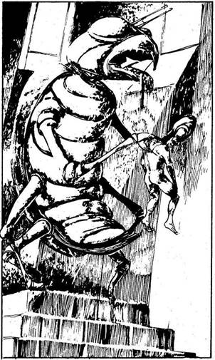
388.
Miután legyőzted az oltárszolgákat, odamész a csúf szoborhoz, amely a pusztulás urainak egyikét ábrázolja. Egy stilizált hulla lóg ki csipkés fogazatú csőréből, és számos, rovarlábra hasonlító végtagjával különböző teremtményeket roppant szét. Gyöngyszemével mintha téged figyelne. Amint közelebbről megnézed, látod, hogy a bálvány résnyire nyitott csőrében egy villás nyelv alakú rubinkő van. Ha felnyúlsz, hogy kivedd a rubint - lapozz a 360-ra, ha megpróbálod a szobrot a talapzatról leemelni, hogy kividd várakozó embereidhez - lapozz a 228-ra.
389.
Amint elhaladsz a szobrok között, beszakad alattad a föld, és legényeiddel együtt a mélybe zuhansz. A döbbenettől tehetetlen vagy. Ekkor valaki kötelet teker a nyakad köré. Megpróbálsz felállni, de ekkor meghúzzák a kötelet, és legényeiddel együtt máris ott lógsz a többi matrózzal a szobrok között. Kalandod itt véget ér.

390.
Átkutatod az apát szobáját, és felfedezel egy ládát, amelyben 110 Arany Tallért találsz. Az apát kardja is értékes kincs, mivel Marad legjobb acéljából
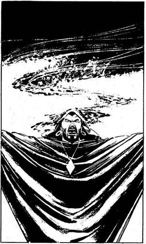
kovácsolták; amikor ezt a kardot használod, minden alkalommal 2 ponttal növelheted ÜGYESSÉGEDET. Tovább kutatva észreveszel az apát széke alatt egy csapóajtót, amit felemelsz, és egy lefelé vezető csigalépcsőt pillantasz meg. Lemész, és egy folyosóra érsz, amelyen kijutsz a vár falain túlra. Legényeiddel visszatérsz a Kísértetre. Felszeditek a horgonyt, és továbbhajóztok. Lapozz a 123-ra.
391.
Teljes sebességgel száguldasz a Kísértettel, és csakhamar a lomha kereskedőhajó mellé kerülsz. Legénységed tagjai meglengetik görbe kardjukat és előkapják íjukat, amikor odapattansz a hajód oldalpárkányára, és átkiáltasz a másik hajó kapitányának és embereinek: „Adjátok meg magatokat rakományotokkal és embereitekkel együtt, különben vége az életeteknek és a hajótoknak is!” A válasz váratlan. Egy csuklyás figura - Mágus vagy Varázsló - lép elő a rémült utasok közül, elmormol egy varázsigét, és egy ördögi Árnyat varázsol elétek, amely füstfelhő formájában szétterül a két hajó között, hogy megtámadjon téged, a kapitányt.
Árny ÜGYESSÉG 11 ÉLETERŐ 6
Ha legyőzöd, lapozz a 252-re.

392.
Amikor a hajó kapitánya látja, hogy legénységét lemészárolták, átvág a tömegen, és találomra kiüt egy hajógerendát. A kereskedőhajó süllyedni kezd. Végül a kapitány a félelemtől őrjöngve magához szorítja az arannyal teli zsákot, és a fedélzetről a sós habokba veti magát. Fáradozásaidért mindössze 5 matrózt kapsz, akiket majd eladhatsz rabszolgának. A Trysta-zátonyok nem messze innen, délre helyezkednek el. Ha közöttük áthajózva a Trysta-szigetre akarsz menni - lapozz a 164-re, ha délnyugat felé inkább Kishbe mész - lapozz a 223-ra, ha az Ölyvre mész - lapozz a 204-re, ha délkelet felé a Goth-csatornán hajózol tovább - lapozz a 191-re.
393.
Fegyvert rántotok, és embereiddel együtt odalopakodtok a mit sem sejtő kalózokhoz. Hangos csatakiáltással rájuk törtök.
Kalózok ÜTÉS 10 ERŐ 6
Ha legyőzitek őket - lapozz a 154-re.

394.
Minden erődet összeszedve az Óriás lábához vágod a husángot, de az célt téveszt és a homokkőhöz csapódik. „Haha! - nevet Mog -‚ ezt elvétetted!” Ám a homokkő az Óriás súlyától, no meg a husángod ütésétől darabokra hullik. Mog meglendíti farönkjét, elveszíti az egyensúlyát, és a földre zuhan. „Hát jó - mondja a vállát vonogatva -‚ azt hiszem, te győztél!” Tedd próbára a SZERENCSÉDET! Ha SZERENCSÉD van - lapozz az 56-ra. Ha nincs SZERENCSÉD - lapozz a 344-re.

395.
Visszavertétek a rátok támadó hajót, de már nem volt időtök kifosztani. Mivel egyszerű hadihajó volt, nem tartottak rajta aranyat, viszont sikerül szert tenned 5 rabszolgára. Ezenkívül megszerzed a kormányrudat; úgy érzed, valami titokzatos erő mozgatja. Ez a szerzeményed, bár nem működik a Kísérteten, mégis jó hatással van legényeid hangulatára - nyersz 2 SZERENCSE pontot. Ha az Ölyv felé indulsz - lapozz a 27-re. Ha a Goth-csatorna felé mész - lapozz a 178-ra.
396.
Miután lehordod őket, megszégyenülten lesütik a szemüket és morognak valamit az orruk alatt. A fegyelem ismét helyreállt. Lapozz a 312-re.

397.
A kockavetőbarlang csupa rom. El-Fazouk és emberei teteme a lábaid előtt hever. A játékbarlang épen maradt részeiben a nézősereg a dulakodás végeztével abbahagyja a bámészkodást, ki-ki visszatér megkezdett játékához. Helyreáll a rend - a gazemberek között folytatódik a szokásos civakodás. Átkutatod régi ellenfeled holttestét, és egy 55 Arany Tallért tartalmazó zsákot találsz - jelöld a Zsákmány rovatban! Ha még nem próbáltad volna meg, részt vehetsz egy kiütős versenyben - lapozz a 48-ra, vagy egy Batárversenyben - lapozz a 270-re, vagy hagyd el Calah városát - lapozz a 262-re.
398.
Amikor átúszol a repedésen, az összezárul mögötted, és beszorulsz egy körülbelül negyven méter hosszú üregbe. Az üreg nem más, mint egy hatalmas kagyló sziklákkal körülvett szája. Ez a lény túl sokáig tart fogva, és a varázsital, amit megittál, közben erejét veszti. Kalandod itt véget ér.

399.
Meglendíted a kardodat, és fejbe vágod a vadállatot. Kardod pengéje darabokra törik. A teremtmény hatalmasat nyögve rád támad - beléd döfi kemény szarvait, és a verem falához lapít. Kalandod itt véget ér.
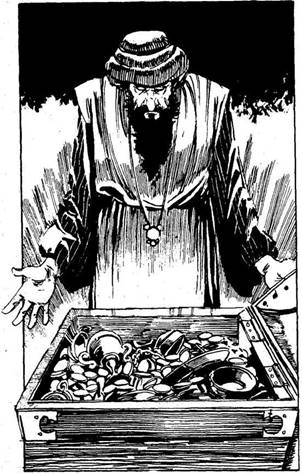
400.
„Tessék - mondod Abdulnak, és felcsapod a ládád fedelét. A benne lévő Arany sokkal több, mint amennyi Abdulnak van. - Én nyertem! Én vagyok a legnagyobb gazember, én vagyok a városok legjelesebb fosztogatója!” Abdul elismerve sikeredet fejet hajt előtted. „Te nyertél!”